Arc User Guide
How to get around the program, then a step-by-step lesson that builds a commercial building: Frank Lloyd Wright's Guggenheim Museum. Version 0.69.0.
1. How to use this guide
Part 2 to Part 7 are a tour: read them once to learn where things are. Part 8 has the hands-on lessons (a small house, 3D printing, and the newer tools), with a panel in the program that checks each step; Part 9 is a longer lesson on a commercial building. Follow them step by step with the program open. Each step says where to click and shows a screenshot of what you should see. Click any screenshot to see it full size.
The finished buildings are included. Open them to compare your work: File ▾ → Samples… → Lesson house or Guggenheim Museum (mock-up).
50', 14'6" or 174". What you type shows in the Size box at the bottom right.2. The main screen
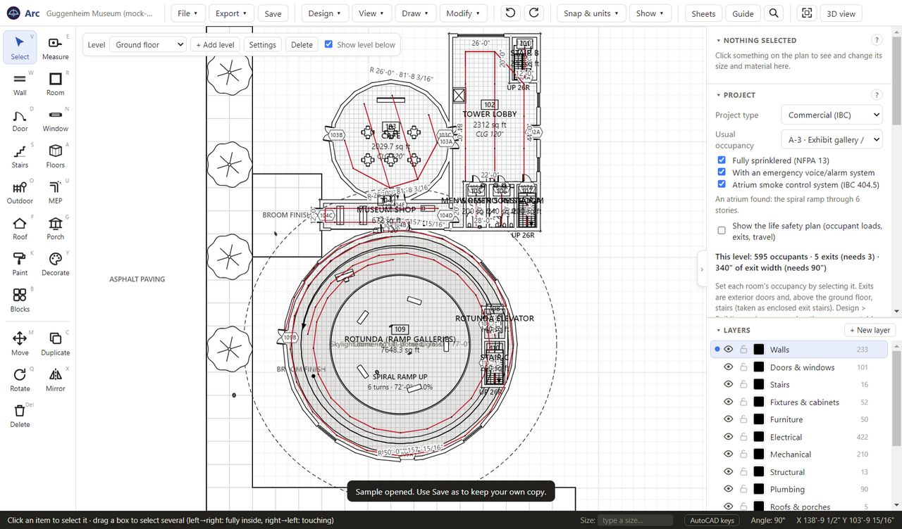
| Area | What it does |
|---|---|
| Top bar | Menus in the order you'll usually want them, each in short groups with headings: File ▾ (plans, bringing in a drawing, settings), Export ▾ (showing it to people, drawings, 3D files) and a quick Save; Design ▾ (style, rooms designed for you, suggested layouts), Review ▾ (design checks, codes, the permit set, schedules, markups), Budget ▾ (what it costs, each trade, quotes for the client, the schedule), View ▾ (what the 3D view shows), Draw ▾ and Modify ▾; undo and redo; Snap ▾; Show ▾ (clean floor plan, dimensions, grid, floor patterns, wall fill); Sheets, Guide ▾, search, fit and 3D view. Can't find something? Press Ctrl+K and type a word. |
| Tools (left) | Two columns, so every tool shows without scrolling: Select, Measure, Wall, Room, Door, Window, Stairs, Floors, Outdoor, MEP, Roof, Porch, Paint, Decorate, Blocks, then Move, Duplicate (copies right in this plan; Ctrl+C / Ctrl+V copies into another plan), Rotate, Mirror and Delete. The letter in each corner is its keyboard shortcut. |
| Level bar | Above the plan: pick the floor you're drawing on, + Add level, level Settings, and Show level below (a faint copy of the floor below, to trace over). |
| Panel (right) | The settings for the tool you're using, or for whatever you've selected. With nothing selected it shows the Project settings and the Design check. Click a section's heading to fold it away (click again to open it); the panel remembers which ones you folded. The small tab on the panel's left edge hides the whole panel for a bigger drawing (click the tab at the window's right edge to bring it back), and dragging either tab makes the panel wider or narrower. |
| Layers | Below the panel. The eye hides a layer; the lock stops it being selected. Click the Layers heading to fold the list down. |
| Status bar | At the bottom. Tells you what the tool wants next. Read it whenever you're unsure. |
Samples
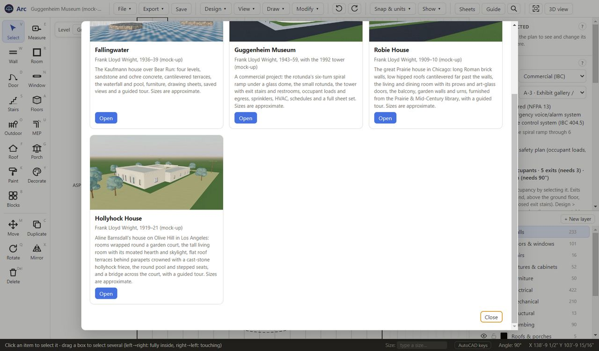
The Lakeside House is a modern house on a lake made only with Arc's own tools: floor-to-ceiling glass that turns the corner, a stacked-stone ground floor and a wood upper floor cantilevered over the terrace, an infinity pool, a fire pit lounge, steps down to a dock, furnished rooms and a guided tour. Open it at the Empty lot stage to build it yourself with its hands-on lesson (Guide ▾ → Hands-on lessons).
Welcome screen
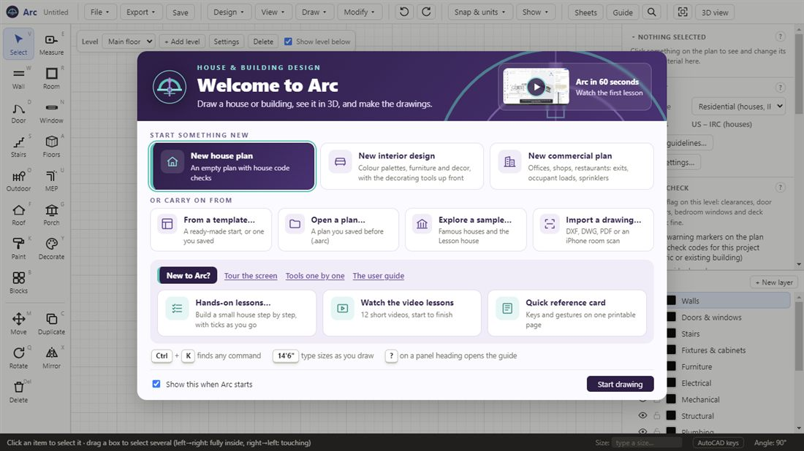
When Arc starts, the welcome screen offers the quickest ways in: New house plan, New commercial plan, Start from a template, Open a plan, Explore a sample and Bring in a drawing or scan, with links into this guide. Untick Show this when Arc starts to skip it; open it again any time from File ▾ → Welcome screen…. It doesn't show when Arc brings back unsaved work after a crash.
Templates: house plans by size, duplexes, garages and commercial shells
File ▾ → New from a template… opens the template gallery: folders down the left, the folder's templates beside them. The house plans are laid out for city lots with the garage entered straight from the street (a front garage with a bonus room over it), or a laned lot with the garage at the back; the long acreage bungalows are in the larger sizes, one with a side-entry garage.
- Size folders: Under 1,200, 1,200–1,500, 1,500–1,800, 1,800–2,000, 2,000–2,400, 2,400–2,800, 2,800–3,000, 3,000–3,300, 3,300–3,500 and 3,500–4,000 sq ft, measured outside above grade (the basement and garage aren't counted).
- Style starter houses: the front-garage two-storey (about 2,100 sq ft) already dressed as a Modern farmhouse, Modern, Craftsman, Tudor or Mid-century, as 3 bed + office + bonus room or 4 bed + bonus room.
- Duplexes & townhomes: a side-by-side duplex with front garages (paired in the middle), a laned duplex with garages at the lane, and a row of four townhomes with garages at the back. Party walls are drawn between the homes and the size shown is each home's.
- Garages & garden suites: detached double, oversized double with a workbench, triple, a garage with a garden suite above, and a garden suite on its own.
- Rooms, shells & 3D print: the blank plan, the small cottage and studio, single rooms and the 3D print starts.
Every house card says the building pocket it needs: the house's width across the front, measured outside, which has to fit between the side setbacks, with the lot width that gives with 4' side yards, and the house's depth. For example Fits a 29' building pocket (8.8 m): about a 37' lot with 4' side yards. House depth 49'. Check the actual lot's setbacks and zoning. The same note goes in the plan's Project notes.
Use asks for a style (or Plain, to choose finishes later) and builds the house: walls, doors and windows, stairs, roofs, the porch or covered entry, the kitchen, bathroom, laundry and mechanical fixtures fitted around the doors, furniture, smoke and CO alarms, and cars in the garage. Its basement comes in Design ▾ → Design options…: left open to develop, finished (a rec room, bedrooms with egress windows, a bath), and on the laned houses a legal basement suite. Change anything afterwards: it's an ordinary plan.
Bi-levels and narrow infill. Bi-level: 3 bed + ensuite, raised main floor (41' wide, for a 50' lot) has a split entry: a landing at the front door, a half flight up to the main floor and down to the lower level. The ground is set about 5' below the main floor (spot heights you can move with the Outdoor tool), so the lower level is half out of the ground with full-size windows. Its lower level comes three ways in Design options: to develop, finished (two more bedrooms, a family room and a bath) or a legal suite. Infill two-storey, 20' wide is for a 28'–30' lot with a back lane (Edmonton's 25' skinny lots need a narrower house): three bedrooms up, the garage at the lane, and the same three basement choices.
New lot: size, setbacks and the houses that fit
File ▾ → New lot (size and setbacks)… starts a plan from the lot. Type its width along the street and its depth, and the setbacks: how far the house has to stay from the front, the back and each side (in feet or metres). They start from typical numbers (front 15', back 25', sides 4'): check them against your city's zoning; Arc remembers yours for next time. As you type, it shows the building area (what the setbacks leave) and the house templates that fit it, roomiest first.
- Start with the lot: the property line, the street along the front, the building area as a dashed blue outline, and their sizes.
- Use this house: the template is built (in the style you pick) and the lot drawn round it, the house centred across the building area and at the front setback, in every one of its design options. A garage at the lane may sit in the back yard.
Either way, the plan gets a design check (in Review ▾ → Project specs & guidelines) that warns if a wall goes outside the building area, on any floor above the ground; a detached garage or shed is left out.
Your own templates go in folders. Save this plan as a template… (or File ▾ → Save as a template…) suggests the size folder from the plan's square footage; pick another, or choose New folder… and name it (a client's name, a builder's series). Each saved template has Move to… to file it somewhere else. They're kept on this computer or iPad.
Commercial shells (Arc). In Arc the gallery has Homes and Commercial at the top; it opens on the side the open plan is (a house plan shows the house templates). The commercial folders have a 1,200 sq ft retail bay, a restaurant, an office suite, a clinic, a warehouse with offices, a four-bay strip plaza with demising walls, and Empty commercial shell, which asks for the floor area and the width across the front. They start as commercial projects with occupant loads, exits and fixture counts checked. ArcRes shows only the homes.
About & licence
The first time the program starts, it shows its licence: it's licensed to one person for their own use, so please don't share the program, its installer or your sign-in. Your plans and drawings are yours. Click I agree to carry on; it doesn't ask again. File ▾ or Guide ▾ → About & licence… shows the version, who your copy is licensed to (with its licence number) and the full terms. That name also appears in small print on the drawing sheets and the PDFs you save.
Search for any command (Ctrl+K)
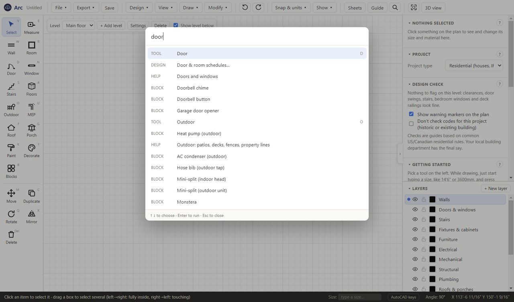
Press Ctrl+K, or click the magnifier on the top bar, and type a word or two: wall, pdf, sofa, grid off, basement. The list finds tools, every menu command, the Snap & units and Show switches, levels, the 3D toolbar's buttons (with the 3D view open), every block in the library and the topics in this guide. Use ↑ ↓ and Enter, or click. With nothing typed it shows what you used last. The letter beside a tool is its shortcut, so search is also a way to learn them.
The ? buttons
Most headings in the side panel have a small ? on the right. Click it and this guide opens at the part that explains that tool or setting. The guide opens in its own window, and every ? reuses it.
Learning while you draw: Guide ▾
The Guide ▾ menu on the top bar keeps the help in one place, without leaving your drawing:
- Video lessons: each lesson is listed by name and length. Pick one and it plays in a small window over the drawing; drag it aside, make it bigger, or pop it out onto a second screen.
- Hands-on lessons: a panel walks you through the steps and ticks each one off as you do it.
- User guide, Tour of the screen and Tools, one by one: this guide, opened at the right place.
- Quick reference card, Search commands and help (Ctrl+K) and the Welcome screen.
Everything for pricing a job is under Budget ▾: the takeoff, takeoff on a PDF, the quote, change orders, selections and allowances, and the shopping list and budget.
Preferences and Project settings
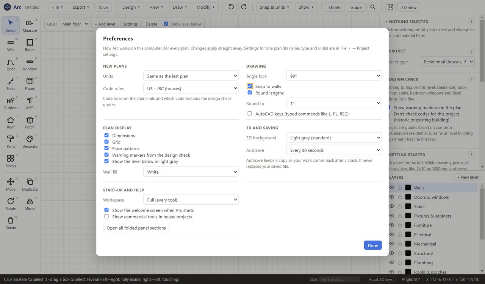
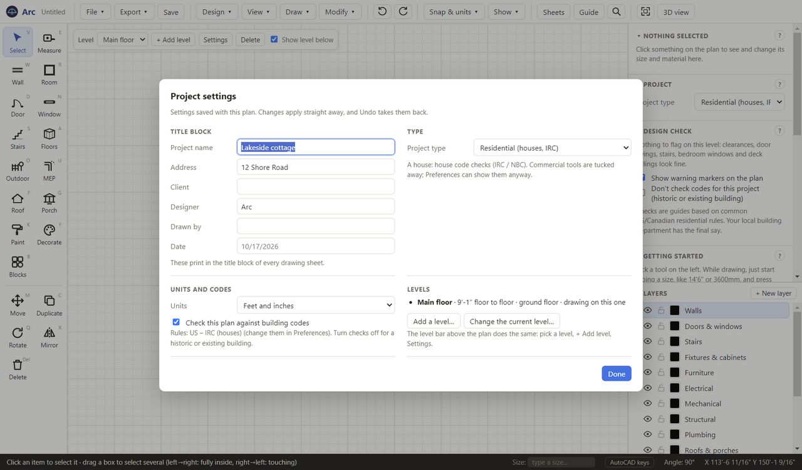
File ▾ → Preferences… (Ctrl+,) holds how Arc works on this computer, for every plan: units for new plans, the code rules (US IRC, Canada NBC, UK), angle lock, snapping and rounding, AutoCAD keys, what the plan shows, the 3D background, how often autosave runs, the welcome screen, showing commercial tools in house projects, and a button that opens every folded panel section again.
Backup copies. Arc keeps earlier copies for you. On a computer: the last 10 copies of each plan from before it was saved over (one every 10 minutes at most), a copy of unsaved work every 15 minutes, and always one when a plan with unsaved work is replaced by a new one (New, Open, Start fresh). In a browser or on an iPad: the last 4 copies of your work. File ▾ → Backup copies… lists them; Open starts one as a new, unsaved plan, so the file it came from is never changed. Save it under a name to keep it.
File ▾ → Project settings… holds what's saved with this plan: the title block (project name, address, client, designer, drawn by, date), the project type, its units, whether to check it against codes, and its levels. The Project heading in the panel (nothing selected) has a ? that leads here too. Changes in both apply straight away.
Houses and commercial projects
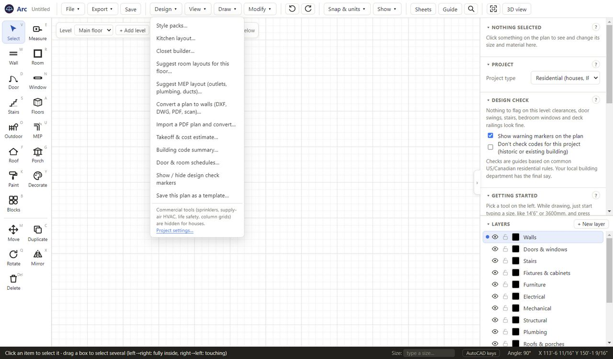
A house project keeps the screen simple: the commercial-only tools are tucked away. That's Design ▾ → Sprinklers and HVAC (supply air), the life safety plan, room numbers and door marks and steel framing in View ▾, the column grid in Draw ▾, and the commercial blocks (office, restaurant, commercial restroom, life safety, ceiling, HVAC, building core). Set Project type to Commercial or Mixed-use (Project settings, or the Project section of the panel) and they all appear. To keep them in house projects too, tick Show commercial tools in house projects in Preferences.
Building codes follow the project type too. A new house plan uses the house code set chosen in Preferences (House code: US IRC, Canada NBC or UK). A new commercial plan uses the matching commercial set (US IBC, or Canada NBC Part 3 if your house code is NBC), with exit-stair limits of about a 7" riser, an 11" tread and a 44" width. Changing a plan's type switches its code set with it. To use another set for one plan, pick it under Code limits in Project settings, or change the limits in the Stairs tool's Code limits section; the plan keeps them.
Project specs, guidelines and notes on warnings
Review ▾ → Project specs & guidelines… (also a button in Project settings and in the panel's Project section) holds rules for this plan: a client brief, a bylaw, neighbourhood or HOA guidelines, an accessibility goal, or your own standards. When the plan goes against one, the Design check shows it as a purple Spec warning, with a purple marker on the plan.
| Group | Rules |
|---|---|
| Rooms | Minimum room area, minimum room width, minimum ceiling height, window glass area as a % of the floor. Rooms are picked by name: bedroom finds Bedroom 2 and Primary bedroom; leave it blank for every room. |
| Doors, halls & stairs | Minimum door width (every door, outside doors or inside doors), minimum hallway width, stair limits (riser, tread, width) |
| Site | Setback from the property lines, maximum building height (to the ridge), maximum lot coverage. These need the property lines drawn with the Outdoor tool (closed round the lot for coverage); until then the rule reminds you. |
| Checklist | A reminder in your own words ("Client wants no carpet", "HOA: black windows only"). It stays at the top of the Design check until you click Done. |
Each rule can say where it comes from (Source: "City bylaw 4.2", "HOA", "Client brief"), and that shows beside its warnings. Untick a rule to pause it, or click × to delete it. The ready-made sets add several at once: Accessible / aging in place, Neighbourhood / HOA guidelines and Comfortable family home; change their numbers to suit. The dialog shows how many warnings each rule has right now.
Notes on warnings. Every warning in the Design check, codes, tips and specs alike, has a Note button. Type why it's fine, what to do, or who to ask; it's saved with the plan when you click away, shows under the warning, and stays even if you Ignore the warning. Ignore moves a warning to the "ignored" list at the bottom, where Check again brings it back.
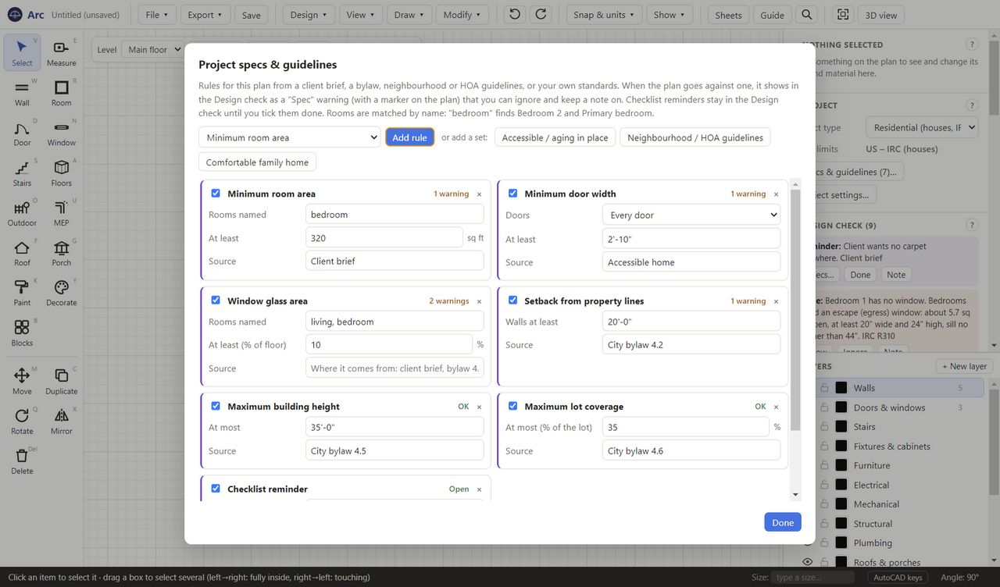
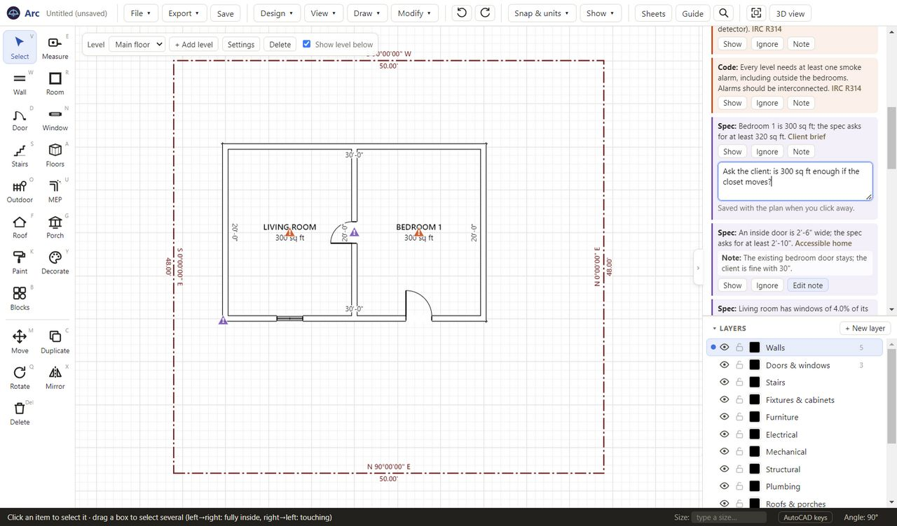
3. The menus
Draw ▾
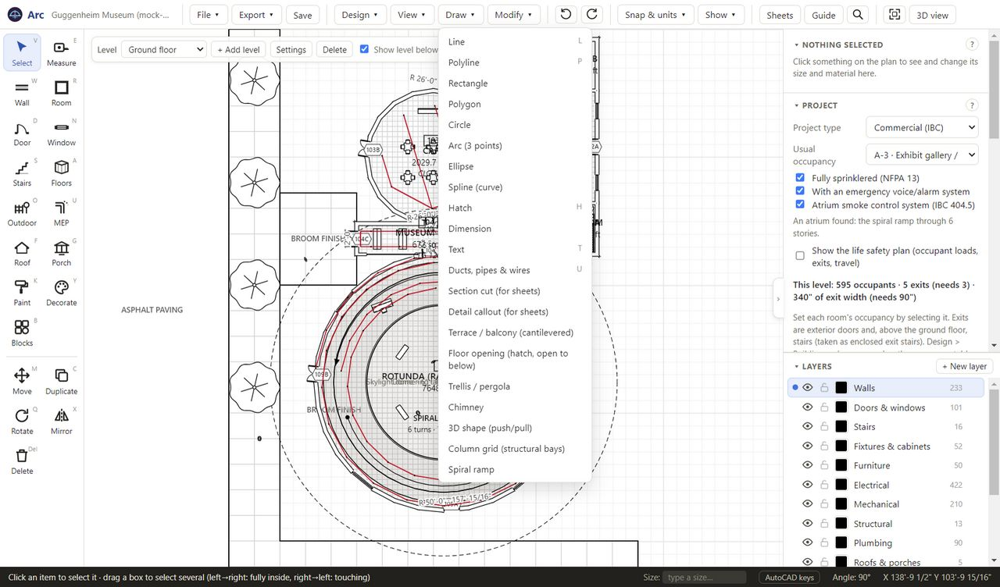
View ▾
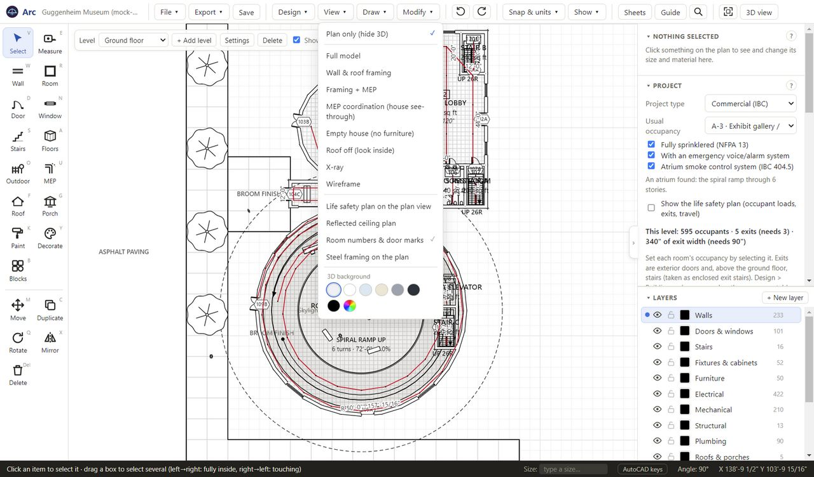
Design ▾
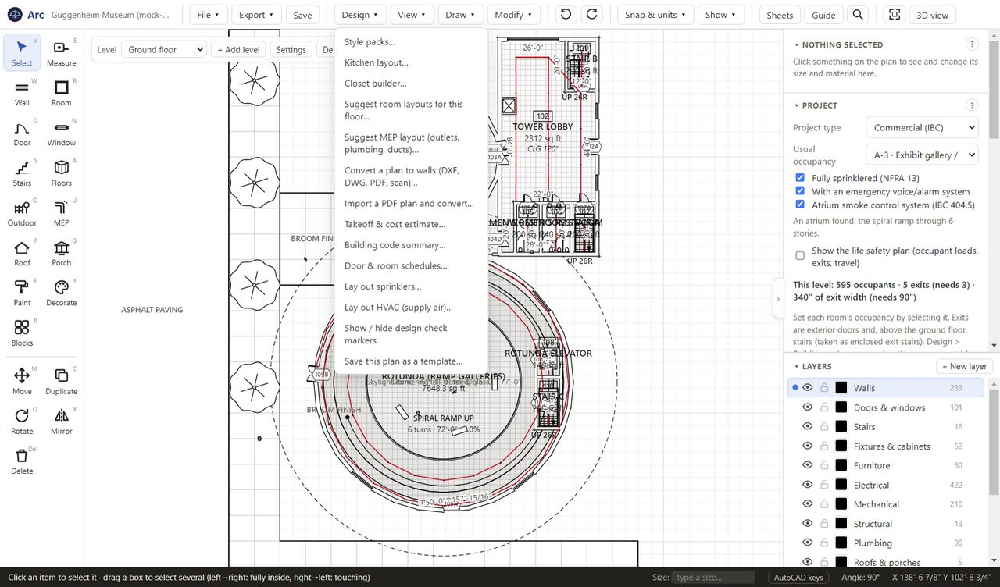
Review ▾
Everything for checking the design and getting it built: Check the design (design check markers, project specs & guidelines, the building code summary) and For the permit and the builder (permit-set check, door & room schedules, markups & RFIs).
Budget ▾
Everything about money and time: What it costs (takeoff & cost estimate, shopping list & budget, the takeoff as a spreadsheet), By trade (framing, electrical, plumbing, heating & cooling, assemblies and cut lists), For the client (quote, change orders, selections & allowances) and Plan the job (phase schedule, takeoff on someone else's PDF). A selected wall's panel shows its own budget too.
Export ▾
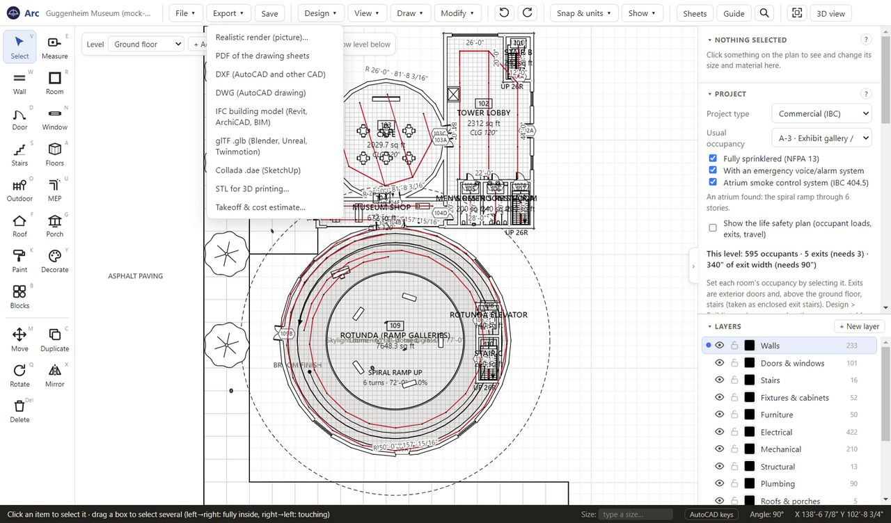
3D printing a house
Export ▾ → 3D print (STL files, plates, checks)… turns the plan into parts for a 3D printer. Pick your printer (the Bambu Lab H2D, X1/P1, A1, A1 mini, Prusa MK4 or Ender-3) and nozzle, the model and the scale. On the H2D, tick Two nozzles when a part prints in two colours with both nozzles: the bed both nozzles reach is 300 × 320 mm, smaller than the 325 × 320 mm of one nozzle, and the checks and plates follow it.
- Floors that stack (plus the roof): each floor is its own part, and the roof lifts off. With Pegs and sockets ticked, small posts in the corners of each floor carry a peg up into a matching socket under the floor above, and under the roof. The roof gets a flat base to stand on (with its sockets), and its attic is filled in so it prints solid. Peg clearance sets how snug they are: 0.2 mm usually; 0.3 mm if your printer runs tight.
- Dollhouse: the same, with the furniture in each floor. Tick Leave staging decor out to print the furniture without the staging and seasonal decor (vases, books, wreaths, pumpkins). One solid piece: everything as one model.
The Checks list each problem with a button to fix it:
- Too big for the bed: the parts are measured against your printer; the fix prints at the biggest scale that fits.
- Walls too thin: walls need to be at least about three nozzle widths (1.2 mm with a 0.4 mm nozzle). Thicken walls too thin for the nozzle fixes it for the print only; your plan keeps its walls.
- Overhangs: eaves and other undersides steeper than 45° need supports; the check says how much and suggests tree supports. Window and door heads are short enough to bridge without them.
- Window glass is left out (it prints as a thin skin that fails), and so are downspouts. At 1:96 the furniture in a dollhouse is very small: the check suggests 1:48.
The parts are laid out on plates that fit the bed (turned a quarter turn when that fits better), shown under the checks. Save files… saves one STL per plate, one per part (or just one kind, under Save), and a print guide PDF: the slicer settings for each part (orientation, supports, layer height, wall loops, brim), a picture of each plate, and how the parts go together. Open the plate files in Bambu Studio, PrusaSlicer or Cura. Tick Show the printer bed on the plan to see a dashed outline of the bed at the print scale while you draw. To start from something small, use File ▾ → New from a template… → 3D print: a house model.
Filament to buy, under the checks, estimates the filament for every part: the walls and top and bottom skins solid, the inside at the infill the print guide suggests, in PLA. It's totalled by colour (each shape's colour; a ground plate's base colour below its filament change and the ground cover above), with the 1 kg spools to buy, 10% extra for colour changes and reprints. Type your Price per kg for the cost, and click Add to the budget to put one line per colour in the cost estimate (Budget ▾ → Takeoff & cost estimate), under 3D printing filament; clicking it again replaces those lines. The print guide lists the grams for each part and the spools to buy. Your slicer shows the exact grams.
Plate infill (for ground plates) picks what goes inside them. Lightning, the default, only props up the top, so a plate takes about half the filament and much less time. Gyroid fills it evenly, for a sturdier plate. The estimate and the print guide follow your choice. They're matched to Bambu Studio's own slicing, within about 10%.
Organise as a kit (for 3D shapes) turns a model made of many small shapes into a kit of numbered parts. Shapes that touch, or that share a print group, print as one part: a lamp's post, globe and cap come out as one lamp. Identical parts print from one file, marked "print 6". Each part gets a number from its layer (TR-04, LT-12), the plates are sorted so each holds one main colour, and a parts list (CSV) comes with the files. A part in more than one colour also comes as a 3MF file with one piece per colour, so the slicer can give each colour its filament.
When the print files are saved, Arc seals each part's mesh: combining shapes can leave tiny gaps where pieces meet, and a slicer may read those as holes and skip layers. The print check says how many it closed.
3D printing an object in millimetres
For anything else (a bracket, a stand, a part that broke), use File ▾ → New from a template… → 3D print: an object in millimetres. The plan is in millimetres at full size, with the printer's bed outlined. Draw with Draw ▾ → 3D shape:
- Rectangle: click a corner, then type the size, width by depth, like 40 x 25, and press Enter. Circle: click the centre and type the radius. Any outline: click the corners. Set the Height in the panel first, or push and pull the shape in 3D afterwards.
- A shape drawn inside another cuts a hole straight through it.
- Select a shape and its panel shows a 3D printing box: the printed size, and a warning if it's thinner than the nozzle can print, too big for the bed, floating above the bed, or wider at the top than the bottom (an overhang).
Then Export ▾ → 3D print… with Model set to 3D shapes I drew and model ground: each shape is its own part, checked and laid out on a plate, with the print guide. The hands-on lesson 3D printing: an object, then a house (Guide ▾ → Hands-on lessons) walks through both.
Model ground: dioramas, site models and printed landscapes
The ground tools (contour lines, spot heights, flat pads, hills and hollows, driveways and paths, water, rock and retaining walls) also shape the ground of a model: a diorama, a site model for a client, or a landscape to 3D-print. Pick Outdoor and set Draw to Ground: model base, then click the corners of the board the ground sits on. The ground then covers just the base and stops square at its edges, shaped as finely as you need. Draw two bases side by side for boards at different heights, like a table and a lower side table; the ground flows smoothly from one to the other.
- Bottom at: the height of the board's top. Ground detail: the size of each square the ground is shaped on (empty for automatic, about 500 squares across). 1.5 to 2 mm suits a landscape for a 3D printer.
- Base colour, and Ground cover colour starts higher up: below that height the ground shows the base colour, as a print does when it changes filament there. A path or plaza sunk below it shows the base colour. Ground cover (in any ground panel) makes the ground grass, snow, bare earth or sand.
- Water has a Depth and can be Frozen (ice), and so can a waterfall. A driveway or path can have Heights at each bend, so it can level off and steepen like a ski run (the panel shows its steepest stretch), and a Groomed snow or Ice surface. Only lowers the ground makes a path a cut that never fills, like a lane kept clear under a chairlift.
- Surface patterns on a flat pad or a path: cobblestones, flagstones, bricks, wood planks, snow ripples, ice cracks, corduroy (groomed snow, running down a ski run) or moguls, with their size and groove depth. They show in 3D and are pressed into the printed plates on a finer mesh. A pad can also carry LEGO studs (4.9 mm, on an 8 mm grid), printed with the plate. Stays level over paths and walls keeps a pad flat even where a path or ski run passes close by.
- Rock shows on slopes over (in the model base panel): where the ground is steeper than this angle, bare rock shows through the snow or grass, in the Rock colour. About 45° looks like real mountains. It colours the 3D view and renders only; to print rock, add rock ledges.
- On a model, rock ledges and retaining walls are sized to the model and drawn in a plain colour you can set.
- Print plates: 3D printing cuts the ground into plates. Type the Column widths and Row depths (the last ones take what's left), a Plate names start and Row names (like F, R for front and rear), or leave them empty to split the base evenly to fit the printer. Puzzle tabs lock neighbouring plates together, with a little clearance in each pocket.
- A 3D shape's panel has When 3D printing: print it on its own, join it to the ground plates (studs, ledges), cut it out of the plates (holes, sockets, wiring channels underneath; shown as a faint red ghost in 3D), or leave it out (for show only). Cuts count even when their layer is hidden.
Export ▾ → 3D print… with The ground, as plates ticked adds a part for each plate, named on the plan, checked against the printer like any other part, with the filament change height in the print guide. A plate taller than the printer prints as stacked layers (C1R layer 1, C1R layer 2…): each layer above sits on pegs on the one below, with sockets underneath, so the ground can be as tall as you like.
A 3D shape can Glow (a light): a lantern, a lit window or a string of fairy lights. It glows in the 3D view, and an Evening (lights on) render turns each one into a real light.
The 3D Print workspace
The 3D Print button in the top bar (or Export ▾ → 3D Print workspace…) gathers every printing tool in the side panel, in the order you use them. The plan and the 3D view stay as they are, and the sections follow what you select on the plan. ← Back to the plan closes it. Nothing here is a new setting: each control is the same one the panels and the 3D print window use.
- Printer and bed: the printer, nozzle, layer height (automatic by scale, or the one you print at: it goes into the print guide and the filament estimate), scale and model, and the bed outline on the plan. Save a fit test… saves a small plate to print before a big model: a puzzle tab and its pocket, a peg with three sockets (0.1, 0.2 and 0.3 mm clearance, marked with 1, 2 and 3 dots), and a step at your colour-change height. Its read me says what to check and which setting to change.
- Model ground and plates: Start a model base if there isn't one, then the base's settings (bottom, detail, colours, the plate columns, rows, names and puzzle tabs). With Ground cover colour starts higher up ticked, it says exactly which layer to change filament at in the slicer. Under it, the plate infill and a plate map with every plate's name (inserts hatched, holes cut through the plates in red), which you can save as a picture.
- Surfaces: the surface pattern of the selected pad or path, with its size and depth, and for cobblestones and flagstones the joint width and (cobblestones) soft edges, for pillowy stones. Select a model base to see its side relief, if a script gave it some.
- Inserts: see below.
- Parts and numbers: for the selected shapes, the part name, Print together as and the layer's part number letters. Make the parts list builds every part as the print files would and lists its number, name, how many to print, colours, size, grams, what the filament costs (the $ column: grams × how many × the Filament price a kilogram, set under the list) and which bed plate it's on; click a line to select its shapes; Save as CSV keeps it. Numbers are given automatically each time, in order, from each layer's letters.
- Check and export: Check and save files… opens the 3D print window (the checks with their fixes, the filament to buy and the print time with Add to the budget, the plates, Save files…). To make one thing again, tick plates under Just some plates and Save just these plates…, or select the shapes of a part and Save the selected parts…: only those are built, with their usual numbers and a print guide.
- What to watch out for: quick notes, without building anything, on what's selected (or the whole plan): a shape that crosses a plate seam, a puzzle tab under it, a shape standing in an insert's pocket, something that starts or ends right at the colour-change height, and anything too big for the bed. The print check looks closer.
Learn it hands-on: Guide ▾ → Hands-on lessons has three short lessons on a practice landscape (also File ▾ → New from a template… → 3D print: a small landscape): plates and the colour change, surfaces and printed inserts (including changing the snow), and parts and part numbers. Each one ticks off its steps as you do them.
Printed inserts
A printed insert is a flat pad that becomes its own part: a pocket in the ground plates with a separate piece that drops in, with stones or tiles on top. Select a flat pad on a model base (draw one with Outdoor → Ground: flat pad), open the workspace's Inserts section (the pad's own panel has a Make it a printed insert… button that takes you there), pick the stones or tiles and click Make it a printed insert. The pad drops by the pocket depth (3 mm) to become the pocket's floor, so the finished surface stays where it was, and its pressed-in pattern comes off (the insert has its own stones).
- Stones or tiles: soft cobblestones (rounded stones like the cobblestone pattern, each with a smaller rounded top), cobble setts, square tiles on the diagonal, basketweave, herringbone or long tiles in rows, with their size, height and joint width, and soft edges for cobblestones. The base under them has its own colour.
- Snow on the stones: drag the slider (or type a percentage) for how many stones get a thin white cap of snow, in drifting patches, more toward the edges and fewer where people walk round a socket. The insert is made again as soon as you let go. Snow cap height and Snow colour go with it.
- A hole is left wherever a shape cut from the plates (a turntable socket) passes through the insert, with a little clearance, and the stones are cut back round it.
- Split into: as few pieces as fit the bed, or one, two or four. When there is one hole, the pieces are split through its middle, so each has a bite out of its corner rather than a hole in its middle. Each piece has a 0.3 mm gap to its neighbour and 0.25 mm clearance to the pocket.
- Only where the ground is the pocket's floor: where something else (a street) lowers the ground inside the pad, the insert stops short of it.
- What was made says how many pieces, stones and snowy stones there are, and each piece's size and whether it fits the bed. Make the insert again rebuilds it; Remove the insert takes it away and puts the pad back up.
The pieces are 3D shapes in the plan (on the pad's layer), one print group per piece, so they print as kit parts: each is one numbered part, in two colours when it has snow (its 3MF file has a piece per colour: give the snow its own filament in the slicer). Move, resize or lower the pad, or change any setting, and the insert is made again by itself. Undo works as usual.
Taking a drawing to AutoCAD
Export ▾ → DXF saves the plan as a 2D drawing that every version of AutoCAD opens, and so do DraftSight, LibreCAD and SketchUp Pro. Choose this level or all levels (each level gets its own layers), and whether to include wall dimensions and floor patterns. Export ▾ → DWG saves AutoCAD's own format for the version you pick; Arc makes it with the free ODA File Converter, which you install once (Arc offers the download page the first time).
When it opens in AutoCAD:
- It's in model space at full size: 1 unit is 1 inch (1 millimetre for a metric plan). If the screen looks empty, type ZOOM, Enter, E (Extents).
- Type UNITS and check that Insertion scale says Inches (or Millimeters), so blocks and xrefs you add land at the right size.
- Lines are on standard layers: A-WALL, A-DOOR, A-FURN, A-FLOR-STRS, A-ROOF, A-ANNO-DIMS, A-ANNO-TEXT and so on, ready for your own layer standards.
- Dimensions and labels arrive as lines and text, not live dimensions: re-dimension in AutoCAD where you need them to update. Walls are outlines you can hatch or offset. Floor patterns add many lines, so they're off unless you tick them.
To print the drawings, Arc's own Sheets already have title blocks and scales; save them as a PDF.
Taking a model to SketchUp
Export ▾ → Collada .dae (SketchUp) saves the whole 3D model: walls, floors, roof, doors, windows, stairs and furniture, in inches with Z up, so it arrives at the right size and the right way up. In SketchUp:
- File → Import, set the file type to COLLADA (*.dae) and pick the file. Under Options, tick Merge coplanar faces for a cleaner model.
- It arrives as one component at the origin. Double-click into it, or right-click → Explode, to edit. Inside, each piece is its own named group (walls, windows, the sofa), so you can move them or swap them for your own.
- Colours come across as SketchUp materials named by what they are; photo textures come across as their average colour.
For a flat plan to trace or push and pull, export DXF and use File → Import in SketchUp Pro (AutoCAD files). For Blender, Unreal or Twinmotion use Export ▾ → glTF .glb, which keeps the photo textures.
4. Tools, one by one
A short note on each tool and what its panel settings do. Click a tool on the left (or press its letter), then read the status bar at the bottom: it always says what to click next. You can type a size instead of clicking, and Esc goes back to the Select arrow.
Walls (W)
Click where a wall starts, then click each corner; right-click, double-click or press Esc to finish. F flips which side of the line the wall sits. Type a length and press Enter to make a wall exactly that long. The panel sets the preset (exterior 2x6, interior 2x4 and so on), thickness, height, material and which way the wall sits on the line you draw (centred, left or right). Walls join at corners by themselves. Select a wall to change it; drag it to push or pull it (attached walls stretch), or drag a blue grip to move an end. Shape makes curved or round walls.
A selected wall glows in the 3D view too. Its panel has:
- This wall's framing: its own stud spacing (12", 16", 19.2" or 24"), + Extra studs (doubled, tripled or a 4-stud post at a distance from the start grip: under a beam, beside a heavy cabinet) and + Cut-out (a framed hole for a duct chase, a recessed medicine cabinet or a pass-through: set where it starts, its width, bottom and height). Cut-outs wider than a stud bay get king and jack studs and a header; narrower ones get blocking and a trimmer each side. They show in the 3D framing view (your extra studs a shade darker), the takeoff and the cut lists.
- Budget for this wall: what it costs, line by line, from the takeoff: studs, plates, headers, drywall sheets, paint by colour, wallpaper or panelling, sheathing, insulation and siding, at the takeoff's prices (typical prices to start with; type your own in Budget ▾ → Takeoff & cost estimate). Select several walls to see them together.
- Interior finish: each side named by the room it faces. Pick Paint (any colour, with flat, matte, eggshell, satin or semi-gloss), a Feature wall colour, Wallpaper, Wood or slat panelling, Tile, Stone or brick, Drywall only or Bare framing; Same on both sides copies it across, and Apply to all walls… puts that side's finish on the inside walls of this room, every room on this floor or the whole house in one step. It shows in 3D and is priced in the takeoff. The outside of the house is set under Exterior.
Work on a wall in 3D (a drawing kit of real materials). In Interior finish, click ✎ Work on this face in 3D on a side. The 3D view turns to look straight at it (use 🔒 Lock view to keep it still), and a drawing board of that face opens beside it with four tabs. Pick a piece and drag on the wall (or click, for the ones that go at a point); the + pieces fill the whole face or go round every window. Click a piece with Select to change its size, how far it sticks out, its material or colour. With nothing picked, Wall colour paints the wall behind the pieces, and Apply to all walls… puts that paint on this room's walls, every room on the floor or the whole house.
- Feature wall: shiplap, tongue & groove, board & batten, a slat wall, wainscot panels, picture-frame moulding, a chair rail, stone and brick veneer, reclaimed wood, acoustic panels, a floating shelf, a picture ledge and medallions, each at its real board or trim size; or start from a ready-made design (it steps round doors and windows).
- Exterior: board & batten, shutters beside every window, window trim round every window and door, corner boards, a band board, a stone wainscot along the bottom, a shake panel for a gable, a single shutter, a gable vent and corbels.
- Framing: the 3D view switches to the framing and the studs show behind the board. Add a stud, doubled studs or a post (click), a header (sized from its width), blocking or a plate (drag across), or a cut-out (drag a box). They go into the wall's own framing: darker in the 3D framing view, and in the takeoff and cut lists.
- Electrical: outlets, GFCI and USB outlets, switches, dimmers, 3-way switches, data, a thermostat and wall sconces, clicked onto the wall at their usual height (16" for outlets, 48" for switches) unless you click well above or below. They're real blocks on the Electrical layer, in the takeoff and the wiring.
Feature and exterior pieces stand out from the wall in 3D, show on rendered elevations, are priced in the takeoff by what they are (shiplap by the square foot, trim by the foot, shutters each), and sit on their own Feature walls & trim layer: hide it to see the plain walls.
Rooms (R)
The Room tool draws four walls at once: set the width and depth (inside or outside sizes) and click to place it. Rooms are also found by themselves when walls you draw close a space, and an inside wall drawn across a room splits it in two (the bigger part keeps the name, floor and ceiling; the new one copies them, ready to rename). Select a room to name it, see its area and set its floor, ceiling height and ceiling type; in commercial projects, its occupancy. On an upper floor, Joists under it puts the floor joists under that room at 12" or 8" on center, or doubles them, for a heavy load (a tiled bath, a tub, a piano, a kitchen island): the extra joists run the full span and show in the 3D framing view, the floor framing plan, the takeoff and the framing package.
Doors (D) and windows (N)
Hover over a wall: the distances to each end show. Click to place, or type the distance from the blue end. Pick the style in the panel first (hinged, double, pocket, sliding, bifold, barn, garage or a cased opening; hung, casement, sliding, fixed, awning, ribbon or curtain-wall windows) with its width, height, sill and header. Select one to flip the swing, change its design, colour, grilles and trim, or make a glass corner.
Several at once, evenly spaced. In the panel's Several at once section, set How many (say 4) and pick the spacing:
- Equal sections: the wall is split into that many equal parts (dashed tag lines) with one centred in each.
- Equal gaps: the space at both ends and between each one is the same.
- Centred on the wall: the group sits on the wall's middle with the gap you set between them.
- From the end: the first one starts a set distance from the end nearer your cursor and the rest follow with your gap. Type a distance and press Enter to change where the first one goes.
- From where I click: the first one goes where you point and the rest follow along the wall with your gap.
Hover over a wall to see them all with tag points at their centres and the space between each. One click places the whole set, and one Undo takes it off. It turns red if they won't fit or would overlap another door or window. Set How many back to 1 to place one at a time.
Stairs (S)
Set the floor-to-floor height, width and tread, choose straight, L, U or spiral, then click where the stair starts and the direction it climbs. The number of steps and the riser height are worked out. Select a stair to change each flight and landing, or click one step to give it its own depth, height or shape (a bullnose or a winder). Warnings compare it with the code limits in the Code limits section (choose the rules in Preferences).
Curved stairs. Set Shape to Curved (follows a curved wall), click the centre of the curve, then where the middle of the bottom step goes. Select it to set the Inside radius, Width and how much Each step turns; it's checked against the ordinary stair limits, with the treads measured 12" in from the inside like winders. Beside a curved wall, Fit to the curved wall gives it the wall's centre and runs its outside edge along the wall.
Floors and baseboards (A)
Pick a floor (hardwood, laminate, vinyl plank, tile, stone, carpet, concrete…) with its colour, plank or tile size and direction, and a baseboard, then click inside a room. Open areas can be outlined by clicking their corners. Show ▾ → Floor patterns shows them on the plan; the 3D view shows real planks and tile.
Outdoor (O)
Patios, decks (with height, posts and railings), landscape areas (mulch, rock, gravel, grass, garden beds), fences and property lines. Property lines can be typed as surveyor bearings like N 45°30' E 120'. Sloped ground, rock and water are here too.
Ducts, pipes and wires (U)
Choose duct, pipe or wire and its kind (supply air, cold water, drain, 120V branch and so on) and size, then click along the route; it snaps to fixtures, devices and walls. Runs are colour-coded and tagged. To draw them in 3D (risers, drops, stacks) use Draw MEP on the 3D toolbar: see Drawing ducts, pipes and wires in 3D. Design ▾ → Suggest MEP layout drafts outlets, plumbing and ducts for a whole floor.
Roofs (F)
Click inside the building and the roof follows the outside walls, or draw its outline. Choose hip, gable, shed, flat or barrel, the pitch, overhangs and ridge direction, the roofing, fascia, soffit and gutters. Roof framing adds rafters or trusses with a lumber list and span checks.
Select a roof and orange handles show at each end and, on an L or T shaped roof, each wing. Click an end to turn it from hip to gable (or back), or a wing to give just that wing its own pitch.
Porches and covered decks (G)
Two clicks along the house and one for the depth. Set the floor (concrete, pavers or deck boards) and its height, the columns, the roof (shed, hip, gable, flat or open rafters), ceiling, railings and steps.
One piece at a time. Select the porch and orange handles show on each column and on the steps. Click one: the panel shows Selected piece. Drag a column to move it, press Delete to take it out, or use + Add a column; from then on the porch keeps your columns (Back to automatic spaces them evenly again). Drag the steps to slide them along the front, and untick any side under Railing on. A deck (Outdoor tool) works the same way: click the handle in the middle of a side to turn its railing or posts off.
Framing: posts, beams, studs and joists (J)
The Framing button on the left (or J, or Draw ▾ → Post, Beam, Stud, Joist) draws one structural piece where you click, at its real size. Pick the kind at the top of the panel: a Post or Stud goes where you click; a Beam or Joist runs from where you click to where you click next (or type its length). Choose the material (lumber, LVL, glulam, I-joist, steel or concrete) and the size (2x4 to 2x12, 4x4 to 8x8, LVLs, glulams, W-beams, HSS and lally columns…); a lumber or LVL beam can be 2, 3 or 4 plies together. Posts and studs stand from the floor to the wall tops unless you give them a height; beams and joists sit with their tops level with the walls unless you set how far their bottom is off the floor. Joists can be a row: How many and their Spacing (they repeat to the left of the line you draw).
Select one to change it in the panel like a wall: material, size, plies, length, height, turn. A beam or joist has an orange handle at each end to stretch it. They show in the 3D view (and the framing views) at their size and colour, on the Structural layer, and in the takeoff as Structural members, by the foot, with typical prices. Have an engineer size beams and posts that carry loads.
Paint and materials (K)
Pick a material by its picture (paints, woods, marbles, stone, tile, brick, metals, fabrics, wallpapers, glass), then click walls, room floors or furniture on the plan or in 3D. Custom paint color… mixes any colour; Add a photo material… turns your own photo of a tile or fabric into a material (see Your own photos as materials). The eraser takes a material off again. A click on a wall paints only the side you clicked, and only the stretch facing that room, so the room next door keeps its colour. One click paints in the panel does more at once: the whole wall (both sides), every wall in that room, every room on this floor or the whole house (the inside faces only: outside faces keep their siding). With those, clicking a room's floor does the floors of those rooms too. A selected wall's Interior finish shows what each side has.
Decorate (Y)
Pick a colour palette and click a room: its walls, an accent wall, the trim and baseboards, the ceiling and its curtains, pillows, art and rugs take the palette's colours. See Decorating.
Blocks library (B)
Furniture, cabinets, appliances, bathroom fixtures, closets and built-ins, lights, people, cars and plants. Pick a category and an item, choose its size and finish, then click to place it; most items turn to sit against the nearest wall. Cabinets join side by side and get a countertop. Select a placed item to change its size, finish and style, or save a copy as your own. Sofas, beds, tables and vanities have more choices: legs (wood, metal or skirted) and seat cushions; a footboard and the bedding colour; a trestle, pedestal or hairpin base; a vanity with doors, drawers, floating on the wall or on furniture legs, and the faucet and pull finish. Search (Ctrl+K) finds any block by name.
Your own blocks. Select furniture, fixtures, lines and 3D shapes together and use Save as my block…: a custom piece (a built-in bench, a table from a top and legs) goes into My blocks, in 3D as well as on the plan. Edit the drawing takes one apart to change it, on its own: everything else fades and can't be moved, and Save as block on the bar puts it back together (Cancel puts the original back). When the same block is used elsewhere in the plan (or came from My blocks), saving asks whether to Update it everywhere (every copy takes the new shape, keeping its own place, turn and size, and My blocks is updated) or Save as a new block (only this one changes).
Manufacturers' products. While placing a block, Import a 3D model… brings in a maker's model as GLB, glTF, OBJ, FBX, COLLADA (DAE), 3DS, STL or 3MF (SketchUp files: export them from SketchUp as COLLADA, OBJ or FBX first). Import a product list (CSV)… reads a spreadsheet from a supplier, or one you make: each row (Name, Item, Width, Depth, Height, Manufacturer, Model, Price, Link, Finish) becomes one of My products at its exact size, drawn like the closest item (a sofa looks like a sofa), with its price and link carried into the shopping list and quote. Save an example list… gives a sheet to fill in.
The library folds into groups. Each group is one line: its name, how many pieces it has, and three quick pieces to click: the one you used last, then the ones you use most (until you've placed some, the usual ones: a range, fridge and sink in Kitchen, a toilet, vanity and shower in Bathroom). Click the group's name (▸) to see everything in it; Arc remembers which groups you leave open. Open all and Fold all are at the top, and typing in the search box or picking a category opens just the groups that match.
Staging and seasonal decor
Pieces that make a model feel like a home, for showing it to people. They're never priced: the takeoff, the shopping list, room costs and quotes leave them out. They sit on their own Staging & seasonal decor layer, so one click on the layer's eye hides them all (for the drawings, say) and shows them again.
| Group | Pieces |
|---|---|
| Styling accessories | Tabletop picture frames, a bowl with orbs, a tray with a candle, books and greenery, a bookshelf set (books, bookends, a vase and a plant), a sculpture, a lantern, decorative boxes, bud vases, a dining centrepiece, a blanket ladder with throws, bath accessories, towels on a bar |
| Kitchen countertop | Coffee maker, espresso machine, toaster, kettle, stand mixer, blender, knife block, utensil crock, fruit bowl, a cutting board with bread, canisters, paper towel holder, herb pots, a cookbook on a stand, wine bottles and glasses |
| Fall & Thanksgiving | Pumpkins (orange, white or mixed), a harvest wreath, mums in pots, a corn stalk bundle, a straw bale, a Thanksgiving centrepiece |
| Halloween | Glowing jack-o'-lanterns, a skeleton, a cauldron of candy, bats on the wall, tombstones, a porch ghost |
| Christmas | A decorated tree, 6', 7½' or 9' (green, flocked or blue spruce, with lights, ornaments in any colour, a star, a skirt and gifts), a wreath with a bow, a lit garland for a mantel or stair, stockings, a pile of gifts, poinsettias, a snowman, nutcrackers, a lit reindeer |
| Valentine's Day | Roses in a vase, a heart garland, heart pillows, a table with candles and chocolates |
| St. Patrick's Day | A shamrock garland, a pot of gold, a green wreath with a gold bow, a shamrock plant |
| Spring & Easter | An Easter basket with eggs, tulips in a pot, a spring wreath, an egg tree, bunnies, egg-hunt eggs for the lawn |
| Entry & mudroom | Coats on hooks, a boot tray with shoes, an umbrella stand, entry table styling (keys, mail, a lamp), a doormat, a folded stroller, a bike on a wall hook |
| Living & bedroom | A record player and LPs, board games, a magazine rack, a knitting basket, a guitar on a stand, nightstand and dresser styling, a full laundry hamper, a clothes valet, an aquarium, a bird cage |
| Kids' rooms & play | Toy bins with blocks and a teddy, a play kitchen, name letters, a growth chart, pennant bunting, stuffed animals |
| Home office | Two monitors and a keyboard, a desk lamp, a pin board, a printer, an open laptop and mug, headphones on a stand |
| Bathroom & spa | A bath caddy, robes on hooks, a eucalyptus bundle, apothecary jars, a bath mat and slippers |
| Kitchen & dining extras | A dish rack, a sink caddy, an air fryer, a bread box, a cake stand, oil and vinegar, tea tins, open-shelf dishes, table settings for 4, 6 or 8, a bar cart, fridge art |
| Pets | Dog bowls, a dog bed with a sleeping dog, a cat tree with a cat, a dog crate |
| More seasons | Fall: a leaf pile and rake, a scarecrow, an apple basket. Halloween: a spider web, a witch's hat and broom, a candy bowl, a giant spider. Christmas: an advent calendar, a gingerbread house, a lit village, a train round the tree, icicle lights, a lit wire tree, candy cane markers, window candles, a candy-cane walkway arch with a wreath, lit JOY yard letters (a candy-cane O with a little wreath), Santa's sleigh, Santa's chair, a Christmas market stall and a timber lodge sign. Winter: a shovel and boots, a firewood rack, a sled and skates, a porch urn, ice luminaries, mittens, a hot cocoa bar, snowflake clings, a bird feeder, an elk statue, a chairlift chair bench (Santa style, on a stand) and a ski rack with skis. |
| Celebrations | Canada Day (a porch flag, bunting), summer (café string lights, tiki torches, lemonade, beach towels, a hose reel, a kiddie pool, sand toys, a window box, a hammock), back to school (backpacks, a homework station, a first-day sign), Hanukkah (a lit menorah, dreidels and gelt, a blue and silver garland), Diwali (diya lamps, a rangoli, a marigold toran, paper lanterns), Lunar New Year (red lanterns, door couplets, a kumquat tree, a fu hanging), birthdays (a balloon arch and cluster, a banner, a party table, a piñata), graduation, New Year's and Pride |
Countertop pieces start at counter height and table pieces at table height; change Off the floor to set one on a shelf, a mantel or a coffee table. Wall pieces (wreaths, garlands, stockings, bats) turn to sit against the nearest wall. Each takes a colour from its swatches, and many have a second colour (the ornaments, the roses, the throws). The Christmas tree is drawn at its real size on the plan, so you can see whether it fits beside the sofa or blocks a walkway, on the plan and walking through in 3D. Staging pieces never raise design-check warnings. Search the library by everyday words too: xmas, spooky, bday, wfh.
Stage rooms for showing. Design ▾ → Stage rooms for showing… (or Stage this room… in a room's panel) sets out staging that suits each room by its name: the coffee maker, knife block, utensils and herbs on the kitchen counters and a fruit bowl on the island, a table set for dinner with a centrepiece, a tray, frames and a bowl in the living room and a blanket ladder by the wall, books, glasses and a carafe on the nightstands, the desk setup in the office, soap and towels in the bathrooms, and a doormat, coats on hooks, shoes and an umbrella stand in the entry. Choose this room, every room on the floor or the whole house, and a season or holiday for its decor in the rooms it suits: the tree (stepping down to a smaller size if it must) with the gifts under it, the wreath in the entry, the centrepiece on the dining table. Pieces go on the furniture that's there, against a free stretch of wall or on clear floor away from the doors, so furnish the rooms first; anything with no place is listed. Remove staging takes out what it set out, and it all undoes in one step.
Showing it without the decor. Photo mode has Show staging & seasonal decor, and the share page has a tick for it, so a client can see the house dressed or plain.
Work on just this part
Select what you want to work on (click it, or drag a box round it) and click ◎ Work on this part at the top of the panel (or Modify ▾ → Work on just this part). Only those pieces can be picked and changed: the rest of the floor fades on the plan and leaves the 3D view, so nothing else moves by accident. A wall's doors and windows come along with it, and anything you draw joins the part. You're changing the real plan, so nothing needs copying back: Done keeps it all, Cancel puts back everything changed since you started. Edit the drawing on a block opens it this way too, with Save as block on the bar.
Pieces and handles. With one thing selected, its pieces show orange handles: a porch's columns and steps, each side of a deck, the corners of a duct, pipe or wire run, and each end and wing of a roof. Click a handle to edit that piece in the panel, drag it to move it, Delete to remove it. The panel says so too when a thing has pieces.
The quick bar. Whatever you select gets a small bar just above it: Lock, Move, Edit (work on just this part) and Delete. Turn it off in Preferences → Drawing if you'd rather not see it.
Lock part of the drawing. Select the part to keep still (click it, or drag a box round it) and click Lock on the quick bar (or Ctrl+L, or Modify ▾ → Lock the selection together). Everything picked is locked together as one group, with a dashed outline and a padlock: it can't be picked, dragged or box-selected, and walls joined to it leave it where it is, so you can move everything else around it freely. To change it again, click any part of it and choose Unlock: the whole group is freed at once and comes back selected. Modify ▾ → Unlock everything (Ctrl+Shift+L) frees every group. Locks are saved with the plan and undo like any change.
Move (M), Duplicate (C), Rotate (Q), Mirror (X) and Delete
Select something first. Move and Duplicate: click a base point, then where it goes (or type a distance); Duplicate keeps making copies until Esc. Rotate: click the centre, then the angle (or type it); tick Rotate a copy to keep the original. Mirror: click two points on the mirror line; tick Keep the original for a mirrored copy. To copy into another plan use Ctrl+C and Ctrl+V (more).
Terraces, floor openings, trellises and chimneys
In Draw ▾. Click the corners of the outline (click the first corner again, or press Enter, to finish). A terrace is a cantilevered slab with a parapet or railing; a floor opening cuts the floor, open to the floor below; a trellis is an open pergola; a chimney rises up past the roof.
3D shapes (push/pull)
Draw ▾ → 3D shape: draw a rectangle, circle or any outline and it becomes a solid. In the 3D view drag its top to change the height, its bottom to lift it, or a side to push it in or out. Corners and edges of the top can be raised for slopes; the panel sets taper, a dome, glass, holes and merging or cutting several shapes.
Engrave or raise a pattern: in the Shape tool's panel set Drawn inside a shape to Engraves it into the top or Raises it from the top, set the depth (0.6 mm is three 0.2 mm print layers: crisp, and it prints in one colour), then draw a rectangle, circle or any outline inside a 3D shape's top: a snowflake, a star, initials, a border. It's cut into the shape (or stands on it) and moves, copies and prints with it; Undo takes it back out. Keep lines at least 0.8 mm wide so a 0.4 mm nozzle can print them. It works on flat tops; on a sloped top it cuts from the lowest corner.
Stand it up (in a selected shape's panel) stands its outline up on edge, like a sign, a wreath, a star or a cut-out letter: draw it flat on the plan, then stand it up. It reads from the front the way you drew it, its height becomes its Thickness, and any holes go through it. Turn and move it like any shape; stretching it or changing its height stretches the outline. Lay it flat puts it back. When 3D printing, a standing shape prints lying on its back, so it needs no supports.
Lines, text, hatch and dimensions
Text has its own button on the left toolbar (or press T): click where it goes and type. The drafting tools in Draw ▾: line (L), polyline (P), rectangle, polygon, circle, arc, ellipse, spline, hatch (H), dimension and text (T). Modify ▾ has offset, trim, extend, fillet, scale, array and the rest. The panel sets the line type, weight, colour, lettering and hatch pattern.
Levels (floors)
The level bar over the plan picks the floor you're drawing on. + Add level adds a floor above or a basement below, starting with the outside walls, every wall or nothing; Settings renames a level or changes its floor-to-floor height. Show level below shows the floor below in light gray to trace over. Select items and use the Level section of the panel to copy or move them to another floor. The list also has your detail drawings, under Details.
Layers
Every item sits on a layer (walls, doors and windows, furniture, electrical…). In the Layers list under the panel, click a layer to draw on it, the eye to hide it and the lock to stop it being selected; double-click a name to rename it. Select items and use the Layer section of the panel to move them to another layer.
A clean floor plan for reading: Show ▾ → Clean floor plan shows just the layout (walls, doors, windows, stairs), cabinets and fixtures, furniture, the room names and the outside walls' dimensions: no small labels, notes, areas, floor patterns or warning markers. Electrical, plumbing, mechanical, structure, roofs, the site, text and drafting lines hide, in the plan and the 3D view, until you tap a layer's eye to bring one back. Everything still works as normal: anything you add goes on its own layer, and a hidden layer shows itself when something is added to it. Untick it (or Show everything at the top of Layers) to put every layer back as it was. It's saved with the plan, and printed sheets still show everything.
Design check
With nothing selected, the panel's Design check lists things worth a second look on this level: clearances, door swings, stair sizes, bedroom windows, railings, smoke alarms and more, each with its code section. Click Show to zoom to it, Ignore to hide it, or Note to keep a note with it. Warning triangles mark them on the plan (purple ones are your own project specs). The checks are a guide: your building department has the final say.
Converting a drawing to walls
File ▾ → Turn a drawing into walls finds the walls, doors and windows in an imported DXF, DWG or CAD-made PDF, or in a scanned plan that's been scaled. Green bands are walls, blue are doors and teal are windows: click any you don't want, then create them. Check a few sizes afterwards.
5. Decorating: palettes, styles and decor
Arc can paint and dress rooms the way a decorator would: pick a palette and click a room, restyle the whole house with a style package, and furnish it from the decor library. Everything stays editable, and Ctrl+Z takes back each step.
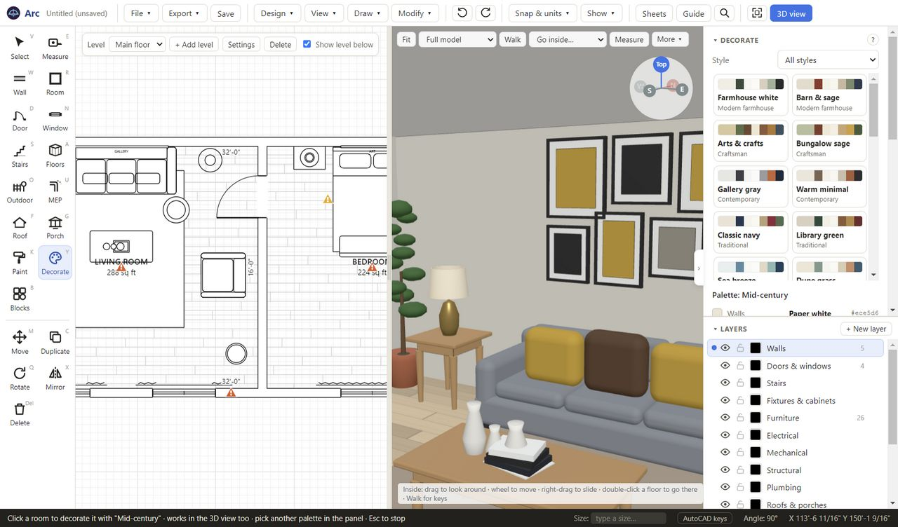
Colour palettes
Click Decorate on the tool bar (or press Y). The panel shows 32 palettes, two or more for each of the 16 styles; the Style list narrows them down. Each palette has seven colours, and each has a job:
| Colour | Where it goes |
|---|---|
| Walls | Every wall face in the room |
| Accent wall | One wall: the longest stretch with the fewest doors and windows |
| Trim & baseboards | Door and window casings in those walls, and the room's baseboards |
| Ceiling | The room's ceiling |
| Curtains & fabrics | Curtains, sheers, Roman shades and poufs in the room |
| Pillows & art, Throws & accents | Throw pillows, blankets, framed and canvas art, bedding, and a softened version on rugs |
Untick any of Walls, Accent wall, Trim, Ceiling or Decor to leave that part alone. Then click a room on the plan, or a floor or wall in the 3D view. Every room on this level and Whole house do many rooms at once, and Clear this level takes the palette paint off again.
Each side of a wall is painted on its own, and a long wall that faces several rooms gets each room's colour on its own stretch. Under the palette the panel lists each colour's name and code, and notes how they read together: trim that will disappear into the walls, an accent that's too close to the walls to show, or a strong colour that will look stronger on four walls than on a chip.
Making your own palette
- From a photo…: choose a picture of a room you love, a rug, a painting or a fabric. Arc finds its main colours and places them: the softest light colour on the walls, the lightest on the trim and ceiling, the strongest on the accent wall. Click any of the colours it found to use it as the accent instead.
- From one colour…: pick one colour and a harmony (complementary, analogous, triadic, split complementary or monochrome). Walls come out soft, the accent deeper, trim and ceiling near white.
- Edit a copy of this one…: change any colour of the palette you're looking at.
In each, every colour has a picker and a name box, so you can type the paint names or codes from a brand's fan deck. Save palette keeps it under My palettes on this computer, and it is saved with each plan you use it in. The × on a palette card deletes it.
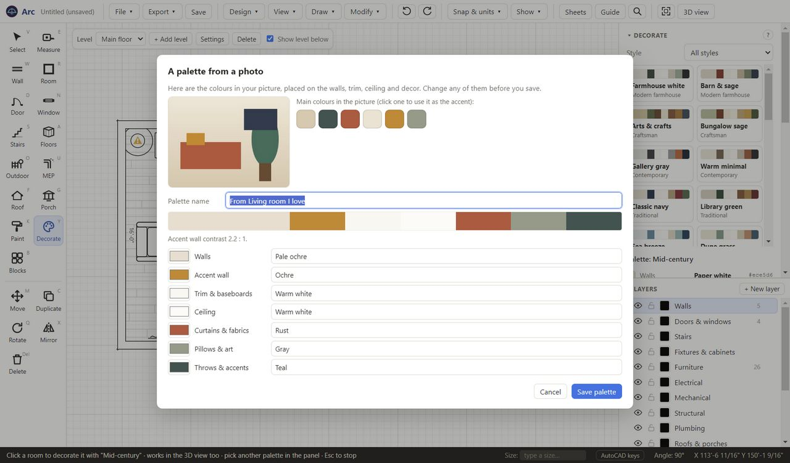
Style packages
Design ▾ → Style packs… restyles the whole house in one go: siding, roof and trim, cabinets, counters and appliances, floors and baseboards, porch columns, and now the inside paint from the style's palette. There are 16: Modern farmhouse, Craftsman, Contemporary, Traditional, Coastal, Scandinavian, Industrial, Mediterranean, Mid-century modern, Japandi, Bohemian, Transitional, Rustic / lodge, French country, Art deco and Minimalist. Untick any part you want to keep as it is. New things you add afterwards follow the style too.
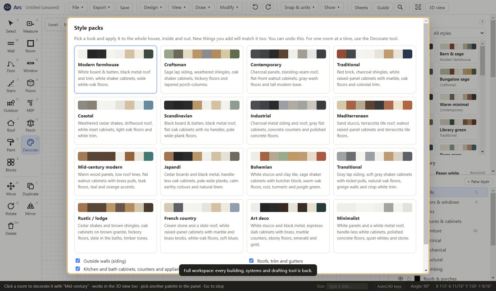
Exterior looks. Design ▾ → Exterior looks… does just the outside, in one click: Modern farmhouse (white board & batten, black window trim, corner boards), Traditional colonial (white lap siding, black shutters), Craftsman (sage siding, wide trim, stone along the bottom), Coastal cottage, Mountain lodge, Contemporary and Mediterranean. The siding goes on every outside wall, and the trim, shutters, corner boards and stone are fitted round each wall's own windows and doors, on the Feature walls & trim layer and in the takeoff. Change any wall afterwards in its panel or with Work on this face in 3D; undo takes the whole look back in one step.
Design options (A, B, C)
To try different versions of the design in one file (a bigger kitchen, another layout, a different look): Design ▾ → Design options (A, B, C)… → Make Option B from this plan. The plan as it was is kept as Option A, and a copy comes onto the plan as Option B to change. The window lists every option with a note and its estimate; Show it brings that option onto the plan (the one you leave is kept as it is), and Compare shows it next to the option showing, side by side or with a wipe, in 3D or on the plan, ready to save for the client. Each option is its own drawing (walls, rooms, furniture, floors); the project, sheets and prices are shared. Options are saved in the plan file. Undo starts again after switching options.
Each option has its own budget lines. Costs you add by hand to the estimate (an allowance, a bought part, a hot tub) and quantities you type over counted ones belong to the option showing, so Option A and Option B add up separately and the Design options window shows each one's own total. An option kept before Arc 0.71 starts with the lines showing when you first switch to it.
Tile: backsplashes, bathrooms and floors
Design ▾ → Tile: backsplash & bathrooms… tiles a kitchen backsplash (between the counters and the upper cabinets, around windows, to the ceiling behind the range if you like), a tub surround, a shower, a vanity wall or a wainscot in one go. Choose the look (24 ceramics, porcelains, stones, glass, zellige and more), the size, the pattern (stacked, brick, ⅓ offset, vertical stack, herringbone, chevron or diagonal; hexagons, penny rounds and other shaped tiles lay in their own pattern), the grout colour and joint, and an edge (bullnose, a metal edge in brushed, black or brass, or a pencil liner). In Design ▾ → Wall design the Tile kit draws a tile area, a band or a niche on any wall, and a room's floor set to tile gets the same chooser in the panel. The 3D shows the pattern with its grout lines.
The takeoff counts it the way you buy it: boxes of tile (by the size's coverage, with waste), bags of thinset and grout, backer board, waterproofing in wet areas, edge trim in feet and niches. Every quantity in the estimate can be changed (see below), so an extra box for breakage or a different grout count is one click.
The decor library
Six new categories in the Blocks library (B), and in search (Ctrl+K). There's also Outdoor living: chaise lounges, an outdoor sofa and lounge chairs, an outdoor dining set, a round fire pit and a linear fire table, a market umbrella, a hot tub and a kayak, with cushions and canopies in a second colour a palette can set.
| Category | Pieces |
|---|---|
| Window treatments | Curtain panels on a rod, sheer curtains, Roman shade, roller blind, plantation shutters |
| Lamps | Floor lamp, tripod lamp, ceramic and glass table lamps, wall sconce, globe, drum and cluster pendants, picture light |
| Wall decor | Framed art, a seven-frame gallery wall, canvas art, round and arched mirrors, styled floating shelves, wall clock |
| Indoor plants | Fiddle leaf fig, snake plant, monstera, olive tree, hanging plant, small table plant, floor vase with pampas grass |
| Pillows, throws & accents | Throw pillows (2, 3 or 5), folded throw, pouf, woven basket, vases, books, candles |
| Wall panels & trim | Wainscoting, board & batten, picture frame moulding, crown moulding, chair rail |
Wall pieces (curtains, art, mirrors, shelves, panelling) turn to sit against the nearest wall. Table pieces (lamps, vases, books, candles) start at table height; change Off the floor to set them on a dresser or shelf. Every decor piece takes any colour from its row of swatches (the rainbow swatch is any colour at all), and pillows and art have a second colour. Decorate's palettes colour them too.
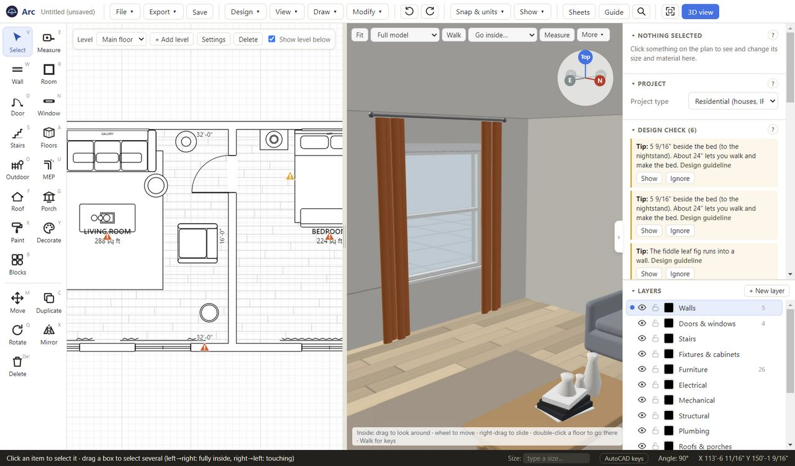
Design this room for me
Design ▾ → Design this room for me… (also on a selected room's panel, and in the Decorate tool) suggests three furniture arrangements for a room. Pick the room, the kind of room (living or family room, bedroom, kids' bedroom, nursery, dining room, home office; Arc guesses it from the name) and a style for the fabrics and woods. Each arrangement is scored for comfort, and the best is marked ★ Most comfortable. The notes under each picture say why:
- walkways and clearances, from the same rules as the Design check (room beside a bed, in front of a dresser, behind a desk chair)
- doors that swing and open clear, and windows not blocked by tall pieces
- living rooms: the TV 7'–12' from the sofa, seats close enough to talk, the rug under the front legs
- bedrooms: the bed on a solid wall, not under a window, with room to walk round it
- dining rooms: 36" (better 42") round the table to pull out chairs
- offices: a view of the door, and daylight from the side rather than behind the screen
In each picture the blue edge is the front of a piece and the dashed squares are door swings. Use this arrangement places the pieces (sofa, tables, lamps, rug, plants…) in the room in the chosen style, coloured from the room's palette if you've decorated it. Move anything afterwards; running it again replaces only the suggested pieces. With the 3D view open it shows that floor on its own, roof and ceilings off, and looks down into the room (pick All levels in the 3D floor list for the whole house again).
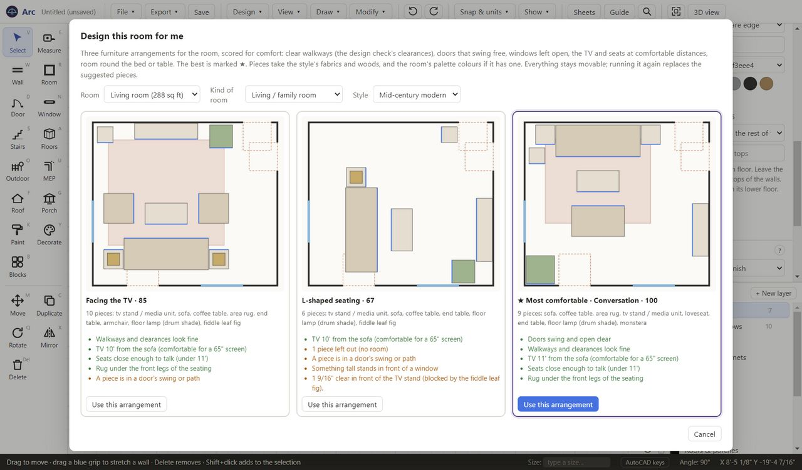
Shopping list & budget
Budget ▾ → Shopping list & budget… works out everything to buy from the plan: paint by the gallon (two coats, from the painted wall area less doors and windows, with ceiling and trim paint), wallpaper by the roll, flooring and wall finishes by the square foot with 10% for cuts, baseboard and panelling by the foot, and each piece of furniture, lighting, window treatment, decor and plant. Show the whole plan, one level, or one room; tick Include kitchen, bath and built-ins for those too.
Prices start as rough retail figures. Type your own in Each, paste a product link (the ↗ button opens it in your browser), change a quantity, and tick items off as you buy them. Set a Budget and Tax %: the bar shows the total against the budget, with what's bought in dark green. A selected piece of furniture can carry its own Price and Link in its panel. Save as spreadsheet (CSV) opens in Excel, Numbers or Google Sheets. Everything you type is saved with the plan.
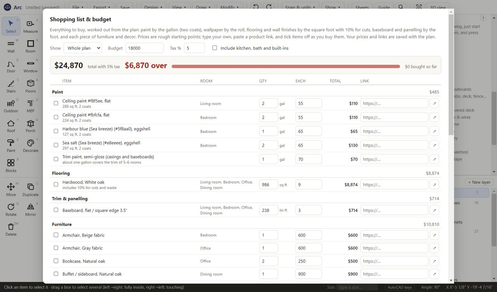
Client inspiration
Design ▾ → Client inspiration (pictures)… keeps the pictures a client sends you (magazine pages, screenshots, photos from their phone, a tile they liked) with the plan. Drop JPEG, PNG or WebP files on the window or click + Add pictures…; big photos are made smaller so the plan file stays light. For each picture, choose the room it's for (or Whole house) and type what they like about it. Its colours pulls the main colours out of a picture into a palette you can paint with (see Decorating). Save as PDF prints them six to a page with their room and note, and the mood board can add the room's pictures as pages after the board (tick Client's inspiration pictures).
Mood board
Design ▾ → Mood board… makes a one-page board (11" × 8½", landscape) for the whole plan or one room: a 3D picture, the colour palette with its codes, the materials and fabrics, the furniture and decor, the budget from the shopping list, and your notes. The picture can be a bird's-eye view into the room with the roof lifted off, a view from inside the room, or the 3D view as it is (set up a saved view or the sun first). Untick any part you don't want, then Save PDF to email or print, or Save picture.
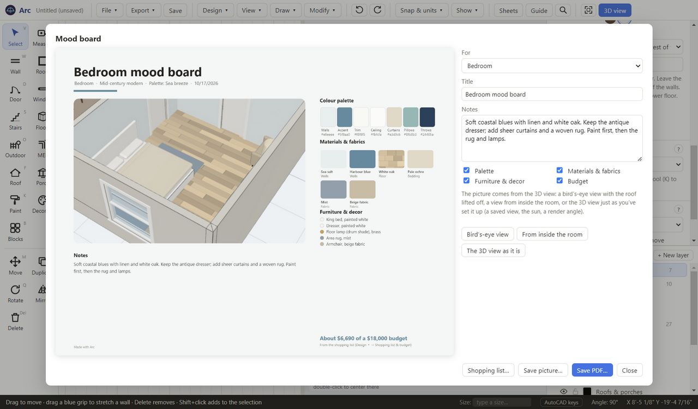
The Interiors workspace
For decorating only, switch to the Interiors workspace: File ▾ → Workspace… → Interiors, Preferences → Workspace, or New interior design on the welcome screen. The tool bar keeps Select, Measure, Wall, Room, Door, Window, Floors, Paint, Decorate, Blocks and the editing tools; stairs, roofs, porches, outdoor and MEP tools, the framing and MEP views, sheets, CAD drafting and the DXF, DWG, IFC and STL exports are tucked away, and the library leaves out the mechanical, structural, electrical, garage, exterior and landscaping pieces. It's the same program and file format, so a decorator can open a builder's plan and the other way round. File ▾ → Workspace… → Full brings everything back.
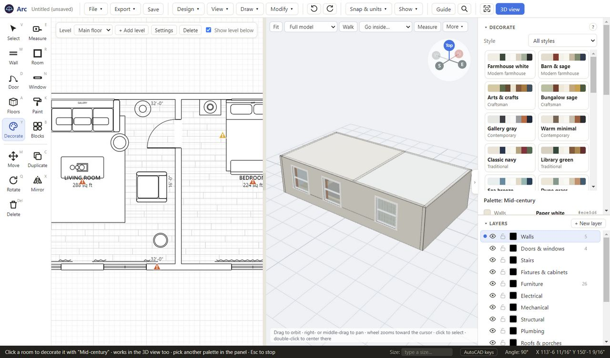
The Model maker workspace
For printed models, dollhouses and dioramas: File ▾ → Workspace… → Model maker (or Preferences → Workspace). The walls, rooms, doors, windows and roofs stay, for houses to print, with the 3D shapes (Draw ▾ → 3D shape), the model base and ground (Outdoor), text, measuring and moving. The wiring and ducts, framing members, markups, the Budget and Review menus, sheets and the contractor's files are tucked away, and search leaves them out. The 3D Print workspace opens beside the plan, and New from a template… opens on the 3D print templates. Switch back the same way: the plan is the same in every workspace.
Start from a single room
To try out colours, furniture or a layout for one room without drawing walls first, choose File ▾ → New from a template… (or Start from a template on the welcome screen) and pick a room: a bedroom 12' × 14' with a closet, a kitchen 12' × 14', a bathroom 8' × 10' or a living room 16' × 18'. Each one comes with its door, windows and a floor. Drag a wall to change the size, then decorate, use Kitchen layout or Design this room for me.
Send to my contractor
Export ▾ → Send to my contractor (one PDF)… puts everything a contractor needs to price the job into one PDF file you can email or print:
- a cover page with who it's for, your name and phone or email, the size of the plan, a 3D picture, and your notes and questions (type one per line; end a line with ? and it's marked as a question)
- a floor plan of each level with dimensions and room sizes
- the outside views (elevations)
- the mood board
- the shopping list with prices and the total
Untick any part you don't want; the list underneath shows the pages in order and the preview shows the cover. Save PDF takes the 3D picture and builds the file. What you type is saved with the plan, so the next pack only needs a new date.
Before & after
To show what a makeover changes: Export ▾ → Before & after… and click Keep the plan as it is now as "before". Then change what you like (paint, floors, furniture, even walls). Open Before & after again and Arc takes the same picture of both versions; drag across it to wipe from before to after.
- Bird's-eye, roof off (the first view): looks down into the house, best for changes inside.
- Use the 3D view as it is: set up the 3D view first (orbit, a saved view, Go inside a room), then take the pictures from there. Fit the model brings the whole model into the picture.
- Plan: the plan drawing before and after, as it shows on screen.
Save side by side or Save this wipe makes a picture for the client. "Before" is saved with the plan; Make the plan now the new "before" starts a new comparison.
The existing building next to your changes. When you've marked what's already built as pre-existing, Export ▾ → Before & after / existing vs new… (or Compare… beside Existing in Layers) can compare with Existing building: everything marked pre-existing, including what's being removed, as it stands today, next to the plan with your changes. No need to save a "before" first. Choose Side by side or Wipe, in the 3D view or on the Plan, and save the picture for the client.
Present to a client
For a meeting, on an iPad or a big screen: Design ▾ → Present to a client…. Tick the slides to show and put them in order (↑ ↓); Arc keeps your choice with the plan. Then Start presenting: Arc goes full screen with the tools out of the way.
- Title: the project's name and address, and today's date.
- The 3D model and each saved 3D view (save views with the 3D view's Views ▾): the live model, so the client can turn it with a finger.
- Each floor's plan, as the clean floor plan (room names and outside dimensions).
- Design options side by side, with each one's price if you tick Show each design option's price (off at first): what the quote would ask, with your markup, labour and tax (your quote's, or your usual ones), never your own costs.
- Before and after (or existing and new), with a line to drag to wipe between them.
Swipe, use ← →, the ‹ › buttons, or the strip of slide names at the bottom to move; ✕ Exit or Esc stops and puts the plan and 3D view back as they were. The client brief, your notes, quotes and invoices never go on a slide.
Share page
Export ▾ → Share page (3D model to email)… saves one web page file with the project in it: a 3D model to turn and zoom, the floor plans, the mood board, the before & after slider, the shopping list and your notes. Email it, or put it on a website or a shared drive (OneDrive, Dropbox, Google Drive): it opens in any up-to-date browser on a computer, tablet or phone, with nothing to install, and nobody can change your plan. If a browser can't show the 3D model, the page shows a picture of it instead.
On a phone or tablet the page is made for fingers. Under the 3D model is a row of buttons: Whole house, From above, each of your saved views, and each room. Tap one and the camera glides there; inside a room, drag to look around from where you stand. ▶ Take the tour plays through your saved views, and ⛶ Full screen fills the screen. Tick Pictures of your saved views to add a gallery of realistic pictures to swipe through (tap one for full size).
Post as a private link… (on your own copy of Arc on this computer, once it's signed in to Cloudflare) puts the page online at a long, random address such as arc-137-view.pages.dev/k7m2…/ and copies the link, so you can text it to a client: it opens straight away, with no sign-in and nothing to download, and search engines are asked not to list it. Anyone with the link can open it, so share it only with the people it's for. Your posted links are listed in the same window; Remove takes one down for good.
Realistic renders and photo mode
In the 3D view, Render… makes a picture of the view (or a saved view) at the size you choose, with a real sky, sunlight and soft shadows. Pick the Lighting (sunny afternoon, golden hour, overcast, your sun-study date and time, or Evening (lights on), where the sun has set and every lamp and light fitting in the model lights its room) and the Quality:
- Draft and High take seconds.
- Photo works the way architectural visualisation software does: light bounces off walls, floors and ceilings, so daylight fills a room the way it really does, glass and polished floors reflect, and shadows soften. The picture builds up in passes (Quick 64, Good 160, Best 400) and gets smoother as it goes; the window shows it as it builds and how long is left, and Stop keeps the picture so far. Indoor views are brightened the way a photographer would. It takes minutes rather than seconds, much longer on a computer with built-in graphics: try HD and Quick first. The first photo of a session spends a minute getting the graphics card ready.
Custom lighting. Pick Custom… under Lighting for your own: Start from one of the others, then set the Sun height (degrees above the horizon; below 0 is dusk) and where the sun shines from (90 east, 180 south, 270 west), its strength, the picture's brightness, lights on in the model and how bright they are, a background of sky or a plain colour, the ground (the lawn or a tabletop in a colour you pick), and the field of view (smaller is like a zoom lens; empty uses the camera's). It's saved with the plan, so the next render starts from it. In the Tour, a stop's Light can be My custom lighting too.
Photo eraser: take something out of a photo
Brush over something unwanted in a photo (a garbage bin, a hose, a sign, wires, a crack, a car in the drive) and Arc fills it in from what's around it. Open it from:
- a picture traced over on the plan (a plot plan, survey or site photo): select it, then Erase from it… in the panel;
- a markup's photo: Erase from photo… in its panel;
- the client's inspiration pictures: Erase… under a picture;
- any picture on this computer: Export ▾ → Touch up a photo (erase things)…, which saves it as a new picture and leaves the original alone.
Brush a little past the edges of the thing and over its shadow, then Erase. Unbrush takes brushing off again, Hold to compare shows the photo as it was, and Undo takes back the last erase. The ? beside the window's title opens this page. Zoom in for small things: the mouse wheel and right-drag, or on an iPad pinch and two fingers. Use this photo puts the touched-up photo into the plan; Undo on the top bar puts the original back.
It works best on smaller things over grass, siding, brick, sky, paving or a plain wall. Big things in busy scenes (a person in front of a detailed room) are a job for an AI photo tool, like the Erase tool in the Windows Photos app or Clean Up in an iPad's Photos app. Everything stays on your computer: nothing is sent anywhere.
6. Looking at the model in 3D
Click 3D view on the third row to show a live model beside the plan. Drag to orbit, right-drag to pan, scroll to zoom. The buttons along the top of the 3D view hold saved views, Tour, Draw MEP and more.
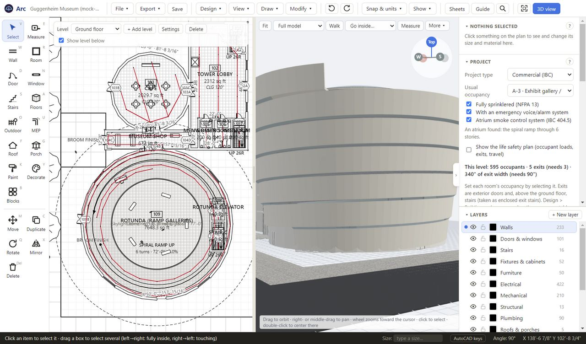
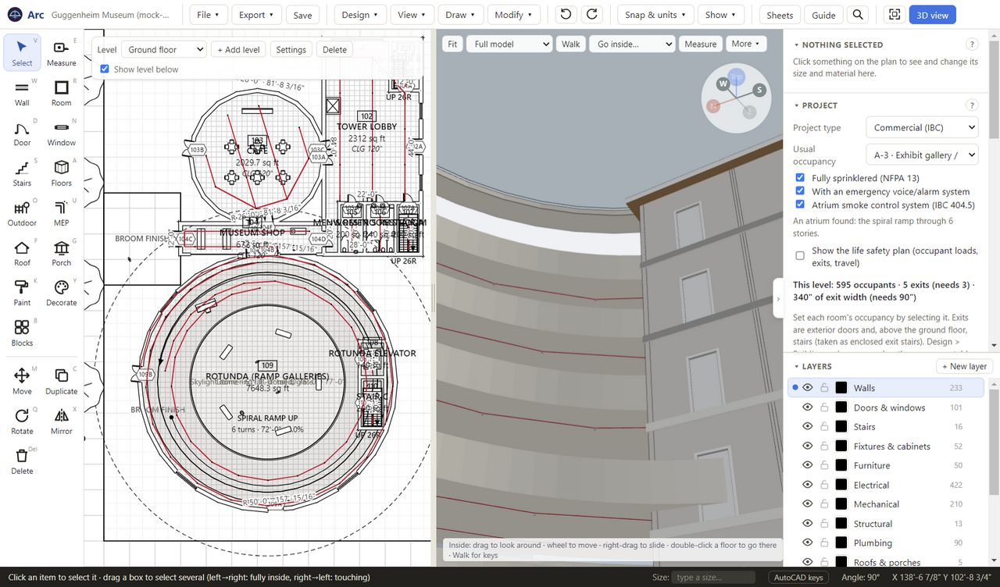
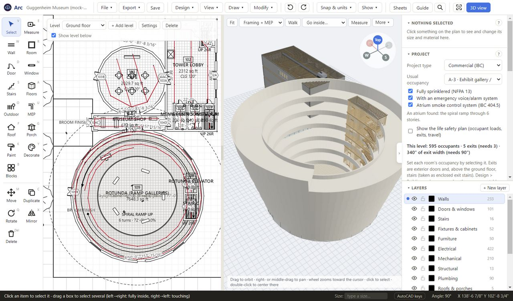
7. Commercial drawings, takeoff on a PDF and quotes
When the project type is Commercial (IBC) (set in the panel with nothing selected), these extra drawings and checks switch on. Takeoff on a PDF, price books and quotes, at the end of this part, work for any project.
Life safety plan
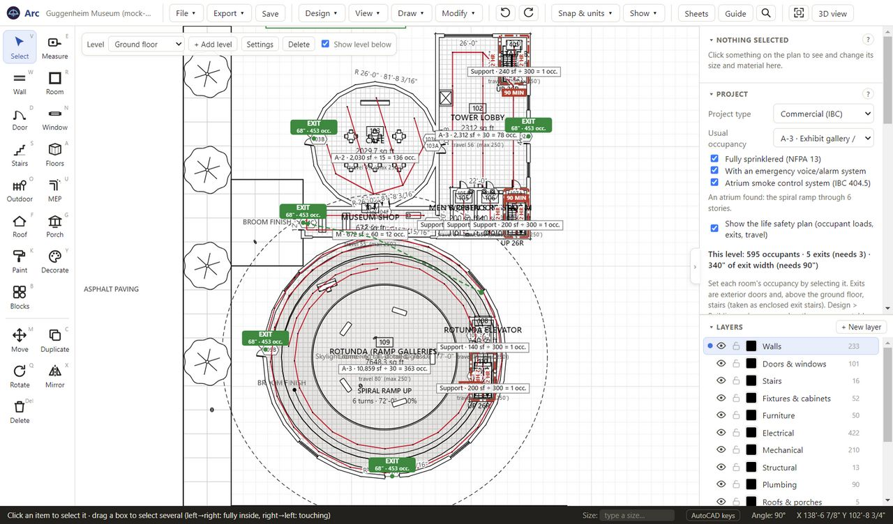
Reflected ceiling plan
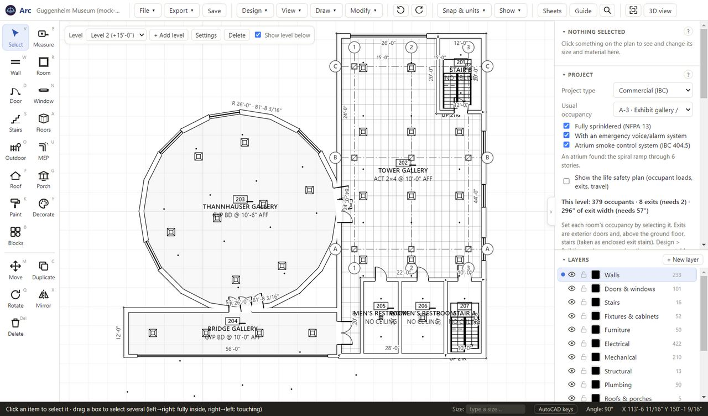
Building code summary
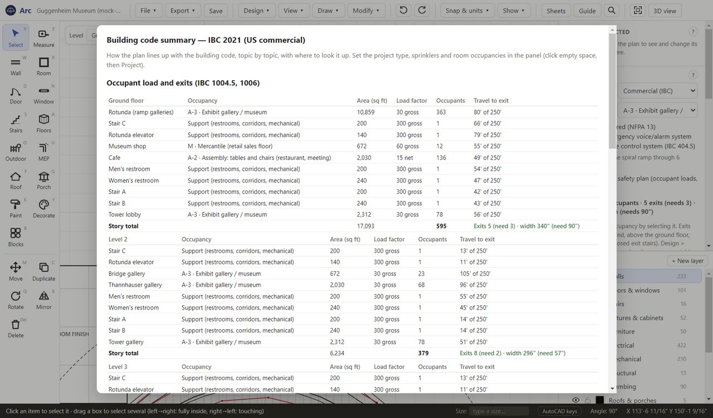
Schedules
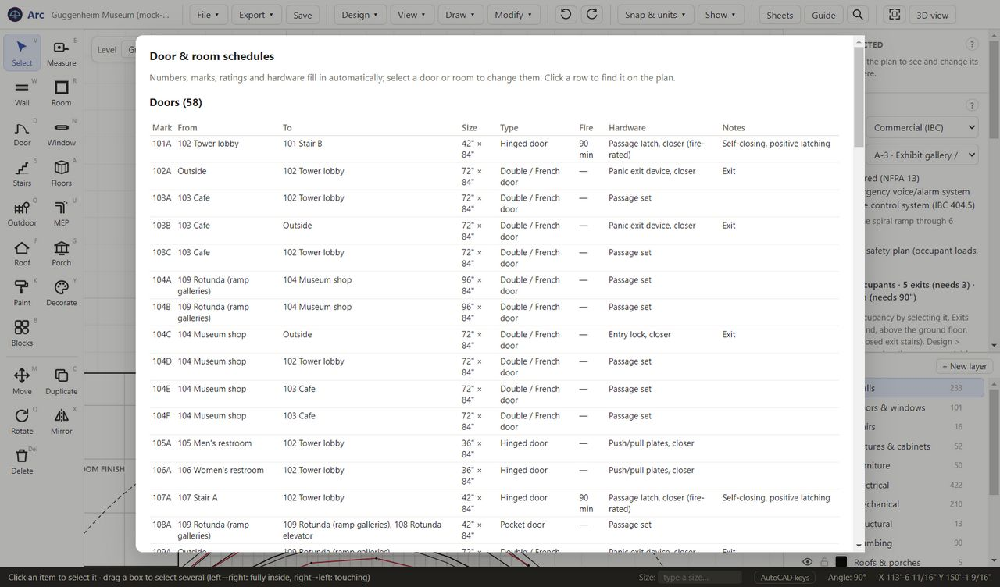
Print this floor plan
For a quick printout without setting up sheets: File ▾ or Export ▾ → Print this floor plan… (Ctrl+P). The floor you're on, as it shows (hide layers or turn on the clean floor plan first to leave things off), goes on one Letter page, landscape, with a title block. The window shows the page: Print… opens the print window (on an iPad too), and Save PDF… keeps a file to email or print later.
Sheets
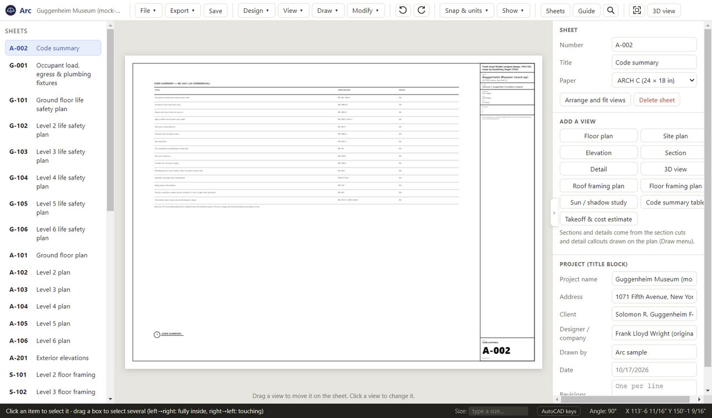
Detail drawings
A close-up you draw on its own page, off the floor plan: a wall corner, a window sill, a stair nosing. Draw a Detail callout box around the spot (Draw ▾), select it and click Make a detail drawing. It opens on its own page, starting with the plan's lines in the box and the wall layers drawn in: drywall, studs (with the usual X), batt insulation in outside walls, sheathing and siding, with notes beside it. Edit it with the drafting tools in Draw ▾ and Modify ▾ (lines, hatch, text, dimensions, trim, offset…); walls, rooms and furniture stay on the floors. ← Back to plan (or picking a floor in the Level list) goes back. To start a blank one, pick + New detail drawing… in the Level list.
Every detail drawing is listed in the Level list under Details. With one open, Settings renames it and sets the scale it prints at (3" = 1'-0" and so on), and Delete removes it. Create the sheet set puts them on Details sheets, and in Sheets you can add one to any sheet as a Detail drawing view.
Permit-set check
Review ▾ → Permit-set check… goes through what building departments usually ask for and marks each item ready (green), to look at (amber) or missing (red):
- Title block: project name, site address, owner and designer (from Project settings).
- Drawings: a site plan with property lines, a plan of every floor, all four elevations, a building section, roof and floor framing, a detail, the code summary and an electrical layout (and, for commercial projects, life safety plans and schedules). Create the sheet set fixes most of these in one click.
- On the plans: rooms named, wall dimensions on, and how many design-check warnings are left to fix or explain.
Check the DXF export saves each floor as DXF and reads it back with the program's own DXF reader (the one that imports AutoCAD drawings), comparing the lines, text, wall size and room names. AutoCAD itself and the ODA converter for DWG aren't part of this check. Fill in the building department, application number, Prepared by and Reviewed by, then Save review set PDF…: the checklist and DXF results, signature and date lines and a stamp box, followed by every drawing sheet. Each department has its own list, so check theirs before you submit.
Takeoff on a PDF (count and measure)
For a trade pricing someone else's drawings: Budget ▾ → Takeoff on a PDF (count & measure)…. Pick the PDF (or a picture of the plan), then click two ends of a dimension you know and type its length so the drawing is to scale. The Takeoff on a PDF tool then opens with a list of items in the panel.
- Add item (or a starter chip such as Outlets, Lights, Pipe run, Floor area) and choose how it's measured: count, length or area. Each item gets its own colour.
- Count: click each symbol. A numbered dot marks it.
- Length: click along the run, then press Enter, double-click or right-click to finish.
- Area: click round the outline and finish the same way, or click the first point again.
The totals show beside each item. To remove a mark, pick the Select arrow, click it and press Delete. The items join Takeoff & cost estimate as a PDF takeoff section, so they're priced and go into the quote with everything else. They're saved with the plan.
Electrical: circuits & panel
Budget ▾ → Electrical: circuits & panel… lays out the circuits the way an electrician would: general outlets and lighting on AFCI circuits, two 20 A kitchen counter circuits, a GFCI circuit for each bathroom, laundry, garage and outdoors, and a dedicated circuit for each big appliance (range, dryer, water heater, heat pump, EV charger, hot tub…). Rooms with no outlets or lights drawn are estimated. It shows the panel schedule with each breaker's slots and leg, the service size (NEC 220.82 load calculation, with the minimum and the size worth having), cable by gauge measured from the panel, and the boxes, devices and breakers. Tick Put these in the takeoff and quote to price them (it replaces the electrical blocks and drawn wires there). Save PDF… gives the panel schedule and an order list. Have a licensed electrician confirm it for your local code.
Plumbing: fixtures, pipes & water heater
Budget ▾ → Plumbing… (ArcRes: Budget ▾ → Plumbing summary…) counts the toilets, sinks, tubs, showers, dishwasher, washer and hose bibs on the plan; baths, kitchens and laundries with none drawn get the usual ones (marked assumed). From their supply and drainage fixture units it works out the peak flow and the water main size, the building drain (3" or 4"), the stacks and roof vents (fixtures within about 15' share one), and a water heater: a tank sized by the bathrooms, or a tankless heater by the showers that can run at once. Pipe runs are measured from a PEX manifold at the water heater (place a Water heater block to measure from it) and from each fixture to its stack. It lists the pipe by size, fittings, valves, traps, flanges, manifold, heater, cleanouts and flashings, and flags long hot-water runs, island sinks and basement fixtures that may need a pump. Tick the box to put it in the takeoff as Plumbing. ArcRes shows the same results in plain words.
Heating & cooling: loads & ducts
Budget ▾ → Heating & cooling… works out each room's heat loss and heat gain from its outside walls, windows and glass doors, the ceiling under the roof, the slab edge and air leakage (a simplified Manual J), for the climate you pick (cold, mixed or hot). From those it sizes a furnace and air conditioner or a heat pump (two systems when cooling is over 5 tons), the airflow each room needs, the supply ducts, trunk, registers and returns, measured from a furnace or air handler on the plan. Rooms with lots of glass are flagged. Tick the box to put it in the takeoff as HVAC. Have a heating contractor run a full load calculation before you buy equipment.
Framing: structure & hardware
Budget ▾ → Framing… (ArcRes: Structure & lumber…) gathers the frame in one place: the wall studs and boards from the cut lists, the headers over every opening (an engineered LVL over 8'), the floor joists under each upper floor and the roof framing, each with its span checks; the roof sheathing and subfloor; the hardware that ties it together (hurricane ties, anchor bolts every 6', sill gasket, joist hangers and hold-downs); a basic nailing schedule; and everything an engineer should look at. Tick the box to put the sheathing and hardware in the takeoff as Framing package. Shear walls and wind and snow connections depend on your area: an engineer or the building department confirms them.
Assemblies, waste & cut lists
Budget ▾ → Assemblies, waste & cut lists… has three tabs:
- Cut lists: the framing of every new wall in boards to buy. Full-height studs come as precut or stock-length studs, one per board; plates, headers, sills, jacks and cripples are packed into 8'–16' boards with an ⅛" saw cut, and the PDF lists every board's cuts and offcut. Drywall sheets are counted room by room (walls less doors and windows, plus the ceiling, moisture-resistant board in baths and laundries), and flooring by room in boxes (or square yards of carpet).
- Assemblies: the small materials that go with every square foot: house wrap and vapour barrier on outside walls, compound, tape, screws and corner bead with drywall, underlayment under floors, roofing underlayment and nails, and flashing tape, shims, foam and casing for each door or window. Change the rates to match how you build, add your own, and tick the box to put them in the takeoff as Assemblies & sundries.
- Waste: a percentage for each kind of material (framing 10%, drywall 12%, tile 15%, roofing 15%…). Tick the box and every takeoff line includes its waste, with sheet counts worked out the same way.
Items that aren't in the drawing
Some costs never show in the model: permit fees, a dumpster, temporary power, door hardware, cleaning, labour by the hour. In Budget ▾ → Takeoff & cost estimate… (ArcRes: Budget ▾ → Cost estimate…), click + Add beside any category, or + Add an item not in the drawing… under the list for a new category such as Permits & fees. Give it a name, a quantity, a unit (each, feet, square feet, hours, lump sum…) and, if you know it, a price. It's marked Added by hand; type over its quantity to change it, or click × to take it out. These lines go into the totals, the quote, change orders and the spreadsheet, and they're saved with the plan.
Changing a quantity in the estimate
Every line in the takeoff has its quantity in a box: type over it (one more box of tile for breakage, the grout you'll really use) and the line, the totals and the quote follow. A line you've changed shows the counted amount beside it and ↺ to go back to it. The changes are saved with the plan and undo like any other change.
Where each price comes from
Under every price in the takeoff a small tag says where it came from: yours (typed for this plan), price book (prices you typed before or loaded from a spreadsheet), trade pack (the plumbing, heating, electrical or framing pack's own starting price), typical (Arc's typical US prices, a starting point for budgeting) or no price (counted as $0 until you type one). Hover over a tag for more. Prices you type can be taken back with ↶ Undo in the window or Ctrl+Z afterwards, in order with your other changes; undo also takes the price out of the remembered price book.
Options & upgrades
Budget ▾ → Options & upgrades… lists the parts of the plan a homeowner can choose to have or not, each priced against the standard way to build it. Arc finds them by itself: a coffered or wood slat ceiling (instead of a flat painted ceiling), a premium floor such as hardwood, stone or tile (instead of the standard floor you pick at the bottom: vinyl plank, laminate, carpet or sheet vinyl; tile in a bathroom counts as standard), feature walls and panelling room by room, exterior trim, shutters and stone, each fireplace, and built-ins room by room. Anything else can be optional too: select it (a deck, a pergola, a finished basement) and choose Optional in the panel's Layer section, or Make the selection optional in the window, giving the group a name.
Each option shows what it adds and Materials lists its lines: the upgrade's materials, and the standard ones it replaces. Untick an option and the standard version goes into the plan and 3D (the coffered ceiling becomes flat, the hardwood becomes vinyl plank, the fireplace or the optional deck comes out), so the plan, the takeoff and the quote always show what's chosen; tick it again and the upgrade comes back exactly as you drew it. The totals show the standard build, the options chosen and the price as chosen. Each tick is one undo step, and the choices are saved with the plan. Options page for the homeowner (PDF) lists every option with its price, what it replaces and what's in it, with tick boxes and a signature line.
In Arc, each option shows Your cost (materials at the takeoff's prices, plus labour hours at your own labour cost), the Client price (materials with your markup, plus labour at your rate, from the quote) and your Margin. Your cost and margin are only shown to you: the homeowner's page and the quote show the client price. In ArcRes, each option shows what it adds to the budget.
Your cost and margin on a quote. In Budget ▾ → Quote for the client…, set Your labour cost $/h (what an hour of labour costs you) next to the labour rate you charge. The green box beside the page shows materials at cost and as charged, labour at cost and as charged, and your margin in dollars and as a percentage of the price. It never appears on the quote PDF.
Cost room by room
Budget ▾ → Cost room by room… splits the estimate by room: each room's walls, doors and windows (a wall between two rooms is shared between them), its floor and baseboard, and the cabinets, fixtures and furniture standing in it, with the room's total and cost per square foot. The roof, foundation, outside work, stairs, pipes and wires and lines added by hand are a Whole house line, so the rooms, that line, and contingency and tax add up to the estimate's total. Click a room's name to find it on the plan; Save spreadsheet (CSV) keeps the table.
Purchases & invoices
Budget ▾ → Purchases & invoices… keeps what's been bought for the job with the plan. Drop invoices and receipts on the window (PDFs or photos, several at once) or click + Add an invoice…. A PDF invoice is read for you: the supplier, invoice number, date, subtotal, tax and total are filled in to check; a photo is kept as a picture. Give each one its category (the estimate's categories, plus permits, rentals and subcontractor labour), the room it's for and whether it's paid. The window shows what's been spent and what's unpaid, and the estimate's budget against what's been spent for each category, in red where it's over. Tick Client on the invoices the client may see: PDF for the client lists only those.
Client brief & priorities (only you see it)
Budget ▾ → Client brief & priorities (only you)… holds everything about the client in one place: their details, the all-in budget, a contingency and the finishes & upgrades allowance, their first, second and third priorities and what matters least (the kitchen, the primary suite, curb appeal, the basement…), a quick survey with drop-down answers to fill in together (how long they'll stay, who lives there, entertaining, cooking, working from home, pets, upkeep, energy, accessibility, storage, a basement suite), your notes and a dated meeting log.
From that it suggests, from the designer tips: Put the money here (the biggest visual difference for what matters to them), Save here (what costs a lot and shows little for this client, or looks the same for less) and Don't skimp (what doesn't show but is hard to fix later), each with the reasons, such as First priority: Kitchen or Selling within 5 years: finishes that pay back at resale. It sets the budget against the plan's cost estimate after the contingency and splits the allowance across the rooms and trades, leaning to their priorities.
The brief is saved with the plan but never goes on the quote, the options page, the share page or a PDF. To send the plan file itself, use Save a copy for the client…: the copy leaves out the brief and the invoices you haven't shared. In ArcRes it's My brief & priorities: the same survey and suggestions for your own home.
Designer tips: where the money shows
Guide ▾ → Designer tips: where the money shows is a sheet to print and keep beside you with a client, in four columns: the biggest difference for the money (paint, the garage and front doors, the front elevation, layered lighting, the kitchen cabinets and island, one continuous floor, a fireplace wall, the stair…), the same look for less, what costs a lot and shows little, and what doesn't show but shouldn't be skimped (insulation and windows, ventilation, waterproofing, sound insulation, wiring for later), each marked for impact and relative cost, with where the eye goes first and a few rules that make a house look designed. The Client brief draws its suggestions from the same list.
Price books
In Budget ▾ → Takeoff & cost estimate…, Save price book… writes your prices to a spreadsheet (CSV) and Load price book… reads one back, so your own prices are ready for every job. Edit it in Excel or Google Sheets; lines are matched by their key, or by the item name and unit.
Quote for the client
Budget ▾ → Quote for the client… turns the takeoff into a one-page quote with your logo:
- Your company: name, phone, email, address, licence number, logo and colour, typed once and used on every quote.
- Client: who the quote is for and the job address.
- Prices: your markup on materials, tax, the deposit and how many days the quote is good for.
- Labour: your hourly rate and crew size. Arc estimates the hours for each section from the quantities; type your own hours over any of them.
- Extra lines for anything not drawn (permits, disposal, travel), and the scope of work and terms in your own words.
The preview updates as you type. Show the work as one total, section by section, or line by line. Save PDF numbers the quote (Q-2026-001, …) and marks it as sent; change its status to accepted, deposit paid or paid as the job goes on.
The first time the quote is saved as a PDF (or marked accepted), Arc remembers that version of the plan as the agreed starting point for change orders.
Pre-existing work (renovations)
For a renovation or addition, draw what's already there, then tell the budget what isn't new. Select the walls, doors, windows, floors, furniture or anything else that's already built and click Mark as pre-existing… in the side panel (or Modify ▾ → Mark as pre-existing). Then choose what's happening to it:
- Keep as it is: it stays on the plan but isn't costed. Tick any work on it you do want costed: repainting, a feature wall (accent paint, wallpaper or panelling), patching drywall, refinishing a floor, painting a ceiling, new baseboard, new door hardware or trim, refinishing cabinets, and so on.
- Being replaced: the new one is costed as usual, plus taking out the old one.
- Being removed: only taking it out is costed. It leaves the finished plan, the 3D model and the sheets (a door or window taken out of a kept wall is filled in).
The whole house at once: Modify ▾ → Mark the whole house as pre-existing… (or Whole house… beside Existing in Layers). Choose every floor or just this one and tick what's already built (walls, doors and windows, floors, roofs, stairs, cabinets and fixtures, ducts, pipes and wires; furniture and the yard if you like), then the same keep, replace or remove question. Anything you draw afterwards is new and costed.
When you mark a wall, its doors and windows can be marked the same way. The estimate gets a Demolition & removal section (with a haul-away line) and a Work on existing section; Arc's quote adds labour hours for both. Footings, slab and floor framing under pre-existing rooms and walls are left out too.
At the bottom of the Layers list are two reference layers, hidden and locked to start; the plan, model and sheets work as normal whatever they're set to:
- Existing holds everything marked pre-existing. Show it (the eye) to see those things highlighted: kept walls hatched, everything else outlined in brown. While it's locked, pre-existing things can't be selected or moved by accident; unlock it to change one (a new window in a kept wall, say, or the work ticked on it), and use Status in the side panel to set it back to New (costed).
- Removal holds what's being taken out. Show it to see red dashed outlines where those walls and things were, for reference. List… lists them all, with a way to put any of them back.
Change orders
When the client asks for something different after the quote, change the plan, then open Budget ▾ → Change orders…. Arc compares the plan with the agreed version (or with the last change order) and lists every line that changed: what it was, what it is now, and the cost of the difference with your markup, plus the change in labour hours at your rate.
- Give it a title and a reason, the days added, and any extra lines that aren't drawn (a permit revision, haul-away; type a minus amount for a credit).
- Make change order numbers it (No. 1, No. 2, …). Its page shows the changes, this change's total, the original contract, earlier approved changes and the new contract total, with signature lines for the client and you.
- PDF… saves it to send and marks it sent. Set it to Approved when it's signed: the contract total at the top goes up, and the next change order starts from there. A declined one is left out.
Plans quoted before this version have no starting point yet: if the plan hasn't changed since the quote, click The plan as it is now is what was agreed.
Selections & allowances
Budget ▾ → Selections & allowances… lists what was chosen for each room (its paint colours from the room's palette, flooring, trim, furniture, lighting, fixtures and built-ins, with prices from the shopping list) and compares each category with its allowance. Type the allowance as a total (Lighting $2,000) or a rate per unit (Flooring $6 per sq ft); the summary shows what's over and under. The PDF ends with a client approval page to sign. Add the overage to a change order puts a line for each category over its allowance into the next change order.
Phase schedule
Budget ▾ → Phase schedule… (in ArcRes, Budget ▾ → Project timeline…) puts the job on a working-day calendar: permits and site prep, foundation, framing, roofing, windows, doors and siding, rough-ins, insulation, drywall and paint, interior finishes, outdoor work and the final inspection, each starting when what it depends on is done. Red diamonds mark the inspections, with a couple of days to book each one before the next phase starts. Pick the start date and whether you work Saturdays.
- In Arc, each phase's length comes from the quote's labour hours for its trades divided by the crew on it (8-hour days); phases with nothing priced get a typical length for a house this size, and phases with nothing in the plan (no new walls, say) are left out.
- In ArcRes, the lengths are typical for a home of this size: just phases and dates.
Type over any length (clear it to go back), untick a phase you're not doing, and Save PDF… for a chart and a table of dates. Weather, permits and material lead times can move the dates.
Markups & RFIs
To send questions back to the builder, pick the Markup tool on the tool bar (key I) and mark up the plan, or a builder's PDF you brought in:
- Cloud round an area: click two corners (or drag).
- Arrow to something: click the thing, then where the words go.
- Note on a spot: one click drops a pin.
Each one asks for words and can carry a photo from the site. Tick It's a question for the builder and it becomes a numbered RFI (RFI 001, 002, …), red while open and green once answered. Click one with the Select arrow to edit it, type the builder's answer or change its status. Review ▾ → Markups & RFIs… saves one PDF with the RFI log (question, where it is, status, answer), the marked-up plan of each level (with the builder's PDF under it) and the photos.
8. Hands-on lessons
22 lessons you do in the program, with a panel over the plan that walks you through each step and ticks it off by itself when it sees the work done. Open them from Guide ▾ → Hands-on lessons…, the welcome screen, or Ctrl+K → lessons. They're in groups, as in the program: start with the first few, then pick any you like. The first time you use a feature that has a lesson, a small card offers it: Start the lesson or Skip (it won't ask again).
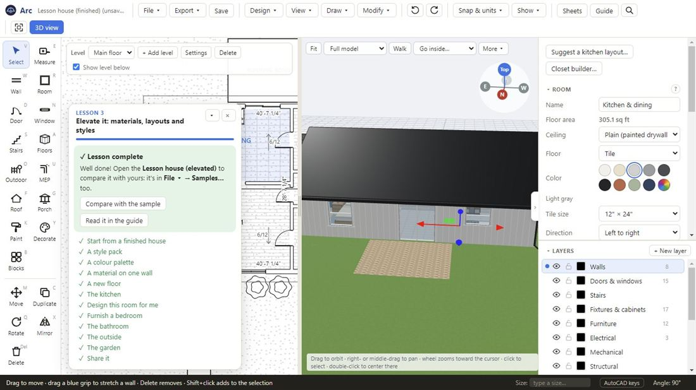
- Show me points at the button or setting the step needs (it opens a menu first if it has to).
- Skip and Back move between steps; click any step in the list to jump to it. The ▾ button folds the panel down to one line; × closes it and keeps your place.
- Each lesson opens its own practice plan, so save yours first if it asks. Many start from the Lesson house sample: every stage is in File ▾ → Samples… → Lesson house (the Empty lot, the Finished simple house and the Elevated one), to compare with your own.
- At the end, the panel says where to find the lesson again, and Do it again starts it fresh.
| Lesson | What you do | Time |
|---|---|---|
| Start here: a house | ||
| 1. Getting started with the tools | Draw a wall and a room, add a door and a window, measure, move around the plan, see it in 3D and find any command. | 10 min |
| 2. Build a simple house | On the Lesson house lot: outside walls, inside walls, rooms, doors, windows evenly spaced, floors, smoke alarms, a roof and a porch. | 25 min |
| 3. Elevate it: materials, layouts and styles | Take the simple house further: a style pack, a colour palette with an accent wall, materials, a kitchen, furniture, a bath, the outside and the garden. | 25 min |
| 4. Do it with me: the Lakeside House | Build a high-end modern house on a lake from the empty lot: stone and wood, walls of glass with a glass corner, an upper floor that overhangs the terrace, flat roofs, a style in one click, a kitchen and furniture designed for you, a terrace, a pool and outdoor living. | 30 min |
| 3D printing | ||
| 5. 3D printing: an object, then a house | Draw a small part to exact sizes in millimetres and cut a hole in it, read the print checks, then print a house as floors and a roof that peg together, fixing the warnings as you go. | 12 min |
| 6. 3D Print workspace: plates and the colour change | Open the 3D Print workspace, see how a model base is cut into plates with puzzle tabs, change the plate sizes, and find the layer where the filament changes colour. | 8 min |
| 7. 3D Print workspace: surfaces and printed inserts | Soften the cobblestones on a street, turn a raised square into a printed insert that drops into a pocket, change how much snow lies on it, and split it to fit the bed. | 10 min |
| 8. 3D Print workspace: parts and part numbers | See how Arc breaks a model into printable parts, print two shapes as one part, give a layer its own part-number letters, read the parts list, and re-make only what changed. | 8 min |
| Find your way round, and the budget | ||
| 9. Find your way round the menus | What each menu on the top bar is for, in the order you'll use them, and how to find anything by typing a word. | 5 min |
| 10. The budget: costs, prices and what each wall costs | Open the cost estimate, type your own prices, add costs that aren't drawn, see one wall's budget, set a shopping budget, and plan the job. | 10 min |
| Change what you've drawn | ||
| 11. Make and edit your own block | Choose a sofa's legs and cushions, take a block apart on its own (nothing else can move), change it and save it as your own, then build a block from 3D shapes. | 10 min |
| 12. Bring in a maker's product | Import a manufacturer's 3D model as a block (GLB, OBJ, FBX, DAE, STL or 3MF), fit it to size, then read in a product list with sizes, prices and links and place one. | 8 min |
| 13. Edit in 3D: one part at a time, and feature walls | Work on just one part (the rest fades and can't move), lock the 3D view while you click, and draw on a wall in 3D with a kit of real materials: shiplap inside, shutters and trim outside. | 10 min |
| 14. Stairs: sizes, single steps and curves | Change a stair's height and width, edit one step (a rounded bottom step), then draw a curved stair and fit it to the code. | 8 min |
| 15. Porches and decks, piece by piece | Move or remove one porch column, slide the steps, leave a railing off one side, then draw a deck and set each side's railing and posts. | 8 min |
| 16. Framing: studs, cut-outs and joists | See the studs in 3D, double up studs or build a post, frame a cut-out, change one wall's spacing, and put closer joists under a heavy room. | 8 min |
| 17. MEP: wiring, runs and their points | Have Arc place outlets, lights and the wiring, read the circuits, reroute a pipe by its points, draw your own wire, and look at a clean floor plan. | 8 min |
| Newer tools: locking, painting, options and costs | ||
| 18. Lock part of the plan, move the rest | Use the quick bar over a selection, lock part of the house together so it can't move, box-select and move everything else around it, then unlock it in one click. | 5 min |
| 19. Paint a room, a floor or the whole house at once | Paint every wall in a room with one click, then a whole floor, and put one wall's finish on all the walls from its panel. | 5 min |
| 20. Options & upgrades a homeowner can choose | Give a room a coffered ceiling, see what it adds over a flat ceiling with its own material list, leave it out and watch the plan change, mark the patio optional, and make the homeowner's options page. | 8 min |
| 21. Try another version: design options and exterior looks | Keep the plan as Option A, make Option B, give B a farmhouse exterior in one click, compare the two side by side, and switch back. | 6 min |
| 22. More budget tools: price tags, room costs, printing and backups | See where every price comes from and undo one, split the estimate room by room, print the floor plan in one click, and find Arc's backup copies. | 6 min |
Start here: a house
Lesson 1: Getting started with the tools
Draw a wall and a room, add a door and a window, measure, move around the plan, see it in 3D and find any command. About 10 minutes · 13 steps · starts with a new plan
1Welcome
This panel walks you through each step and ticks it off when it sees it done. The tools are on the left, the panel on the right shows the settings for the tool or whatever you select, and the status bar at the bottom always says what to click next.
2Pick the Wall tool
Click Wall on the tool bar, or press W. The letter in each tool's corner is its key.
3Draw a wall by typing its length
Click once on the plan to start the wall. Point to the right, then type 12' and press Enter. You don't need to click in the Size box: just type. Press Esc to stop drawing.
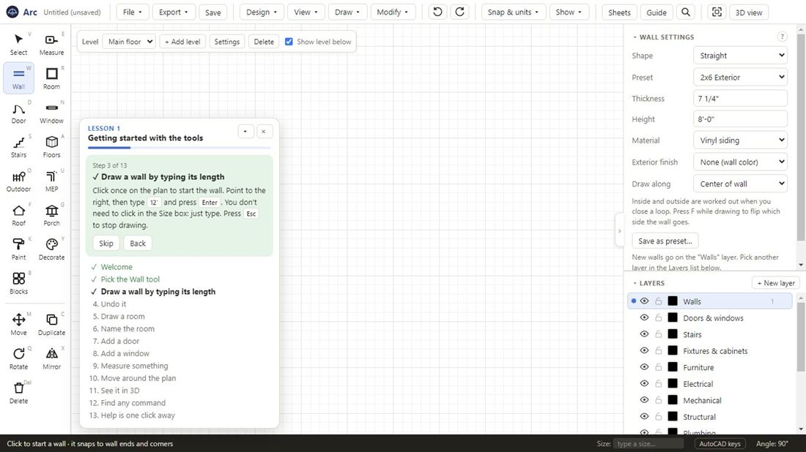
4Undo it
Everything can be undone. Press Ctrl+Z (or the curved arrow on the top bar) until the wall goes away. Ctrl+Y brings it back.
5Draw a room
Pick Room (R). Type 12' x 10' and press Enter, then click where the top-left corner goes. Four walls and the room appear at once.
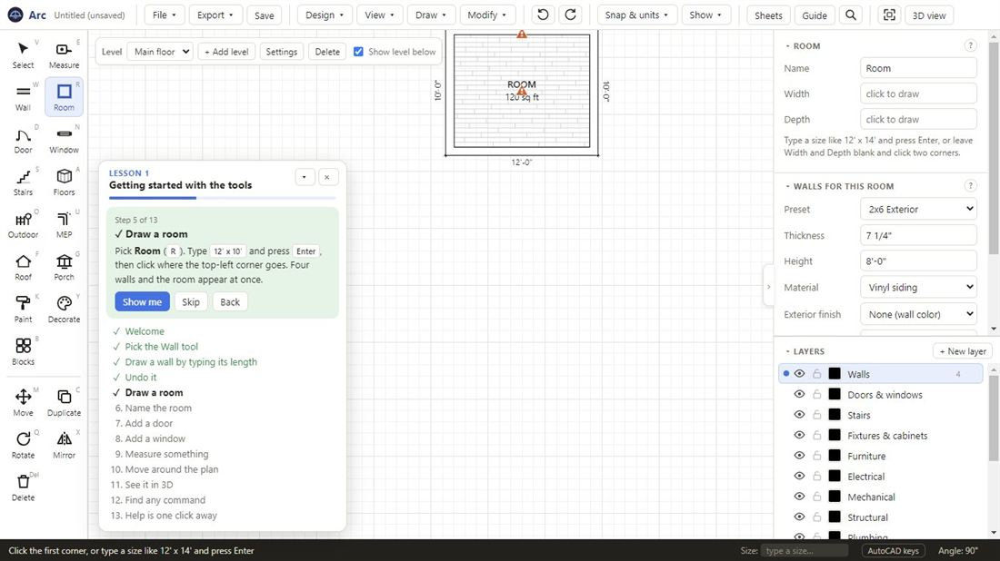
6Name the room
Pick the Select arrow (V), click inside the room, and type a new name in the panel, like Office. Press Enter or click away to keep it.
7Add a door
Pick Door (D) and hover over a wall: the distance to each end shows. Click to place it. The door swings toward the side your cursor is on; F flips the hinge.
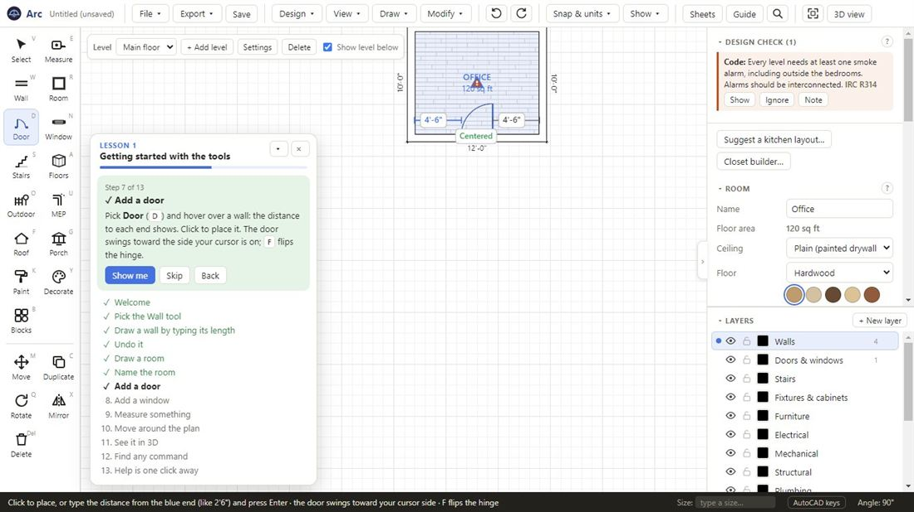
8Add a window
Pick Window (N) and click another wall. Choose the window's type and size in the panel first if you like.
9Measure something
Pick Measure (E) and click two points, like opposite corners of the room. The length shows on the plan; nothing is added. Esc clears it.
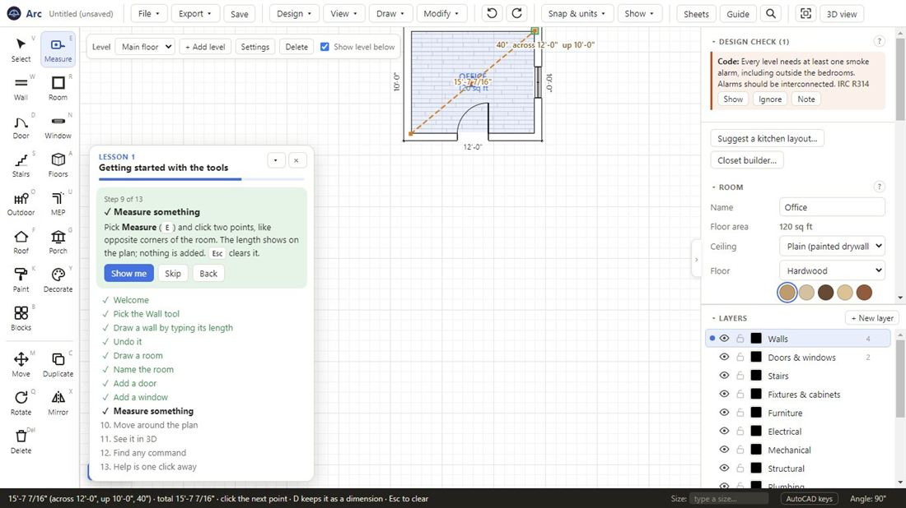
10Move around the plan
Scroll the mouse wheel to zoom toward the cursor, and drag with the right button (or hold Space and drag) to slide the plan. On an iPad, pinch and drag with two fingers. Z (on an iPad, Fit on the top bar) fits everything back on screen.
11See it in 3D
Click 3D view on the top bar. Drag to turn the model, right-drag to slide, scroll to zoom. Everything you draw shows up there straight away.
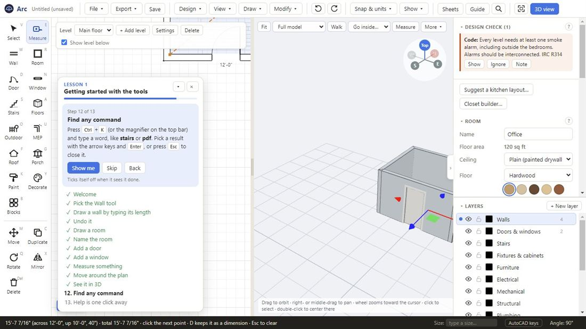
12Find any command
Press Ctrl+K (or the magnifier on the top bar) and type a word, like stairs or pdf. Pick a result with the arrow keys and Enter, or press Esc to close it.
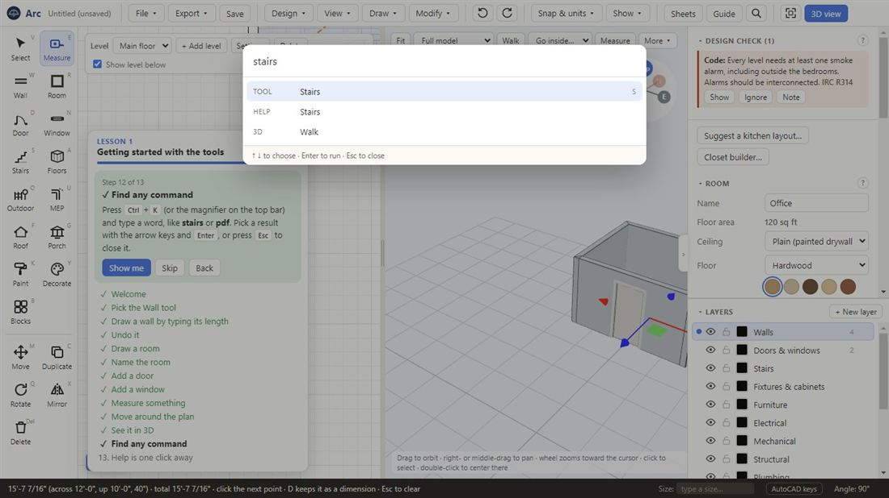
13Help is one click away
Most headings in the side panel have a small ? on the right: it opens the guide at that topic. The Guide ▾ menu on the top bar lists every video lesson (each plays in a small window beside your drawing), the hands-on lessons, this guide and the quick reference card. That's the tools: next, build a whole house.
Lesson 2: Build a simple house
On the Lesson house lot: outside walls, inside walls, rooms, doors, windows evenly spaced, floors, smoke alarms, a roof and a porch. About 25 minutes · 14 steps · starts from the Lesson house (empty lot)
1The lot
This is your lot: the red dashed line is the property line, with the street at the bottom. The blue dashed outline is where the house goes: 40' × 28' inside. You'll build a living room and kitchen on the left, two bedrooms and a bath on the right.
2The outside walls
Pick Room (R). In the panel, set Preset to 2x6 Exterior and Size measured to Inside (room size). Type 40' x 28', press Enter, and click the top-left corner of the blue outline.
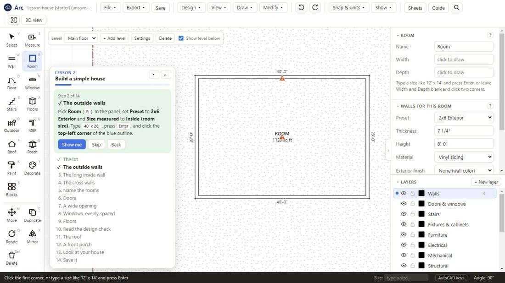
3The long inside wall
Pick Wall (W) and set Preset to 2x4 Interior. Draw a wall from the front to the back of the house 24' from the left side: click on the front wall, click on the back wall, then Esc. Hover first: the distances show as you move. The room splits in two by itself.
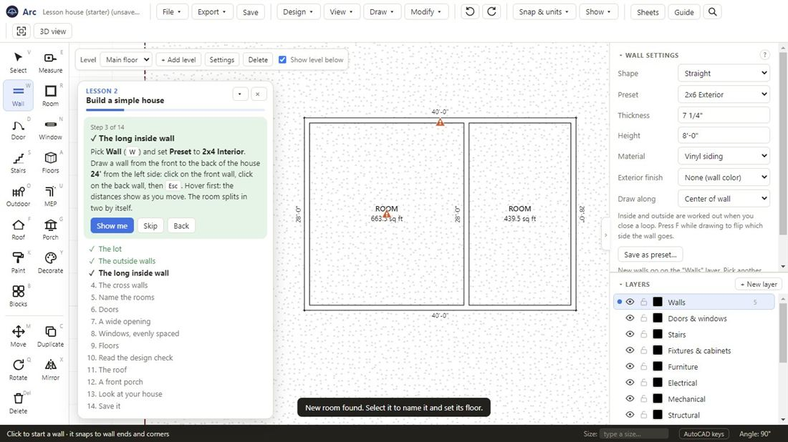
4The cross walls
Still with the Wall tool, split the right side into three: a wall 11' up from the front, and another at 17' (that's the bath between them). Then on the left, a wall 15' up from the front, from the outside wall to the long wall: living room in front, kitchen behind. Press Esc after each.
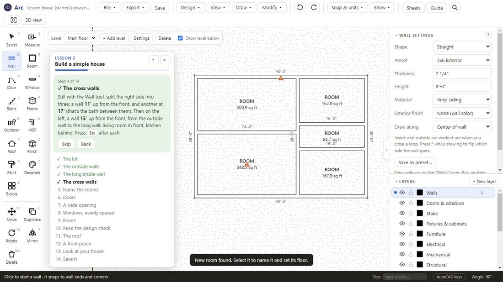
5Name the rooms
Pick the Select arrow, click each room and name it in the panel: Living room, Kitchen & dining, Bedroom 2, Bathroom, Primary bedroom. Names matter: the design check, the furniture suggestions and the takeoff all read them.
6Doors
Pick Door (D). Put the front door on the front wall of the living room, and a door from the living room or kitchen into each bedroom and the bath (make the bath door 30" wide in the panel). The door swings toward your cursor; F flips the hinge.
7A wide opening
Between the living room and the kitchen, use an opening with no door: in the Door tool's panel set Type to Cased opening (no door) and Width to 8', then click the wall between them.
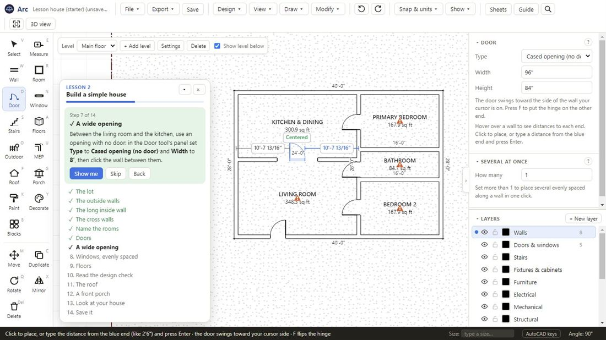
8Windows, evenly spaced
Pick Window (N). In the panel's Several at once section set How many to 2 and Spacing to Equal sections, then click the living room's left wall: two windows, evenly spaced. Set How many back to 1 and add one over the kitchen sink. In the bedrooms, set Type to Casement first: it opens all the way, so it's big enough to climb out of in an emergency (the design check tells you if a bedroom window is too small).
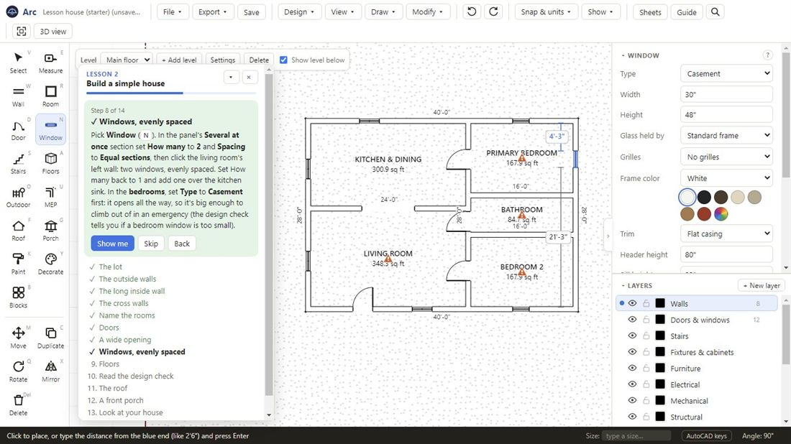
9Floors
Pick Floors (A). Choose Hardwood and click the living room and kitchen, Carpet for the bedrooms, and Tile for the bathroom. Each click sets that room's floor and baseboard.
10Read the design check
Click an empty spot on the plan: the panel shows the Design check. It asks for smoke alarms in each bedroom and outside them. Pick Blocks, choose Electrical → Smoke / CO detector, and click inside each bedroom and the living room. The warnings clear as you go.
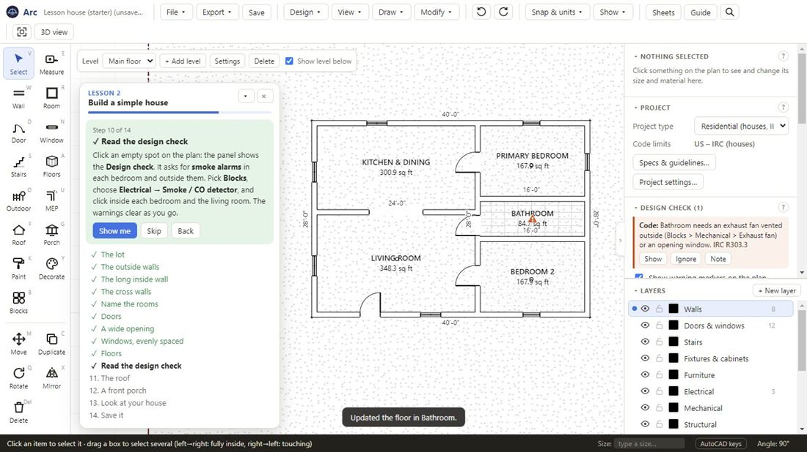
11The roof
Pick Roof (F) and click inside the house: the roof follows the outside walls. Select it later to change the style (gable, hip, shed…), the pitch and the colours.
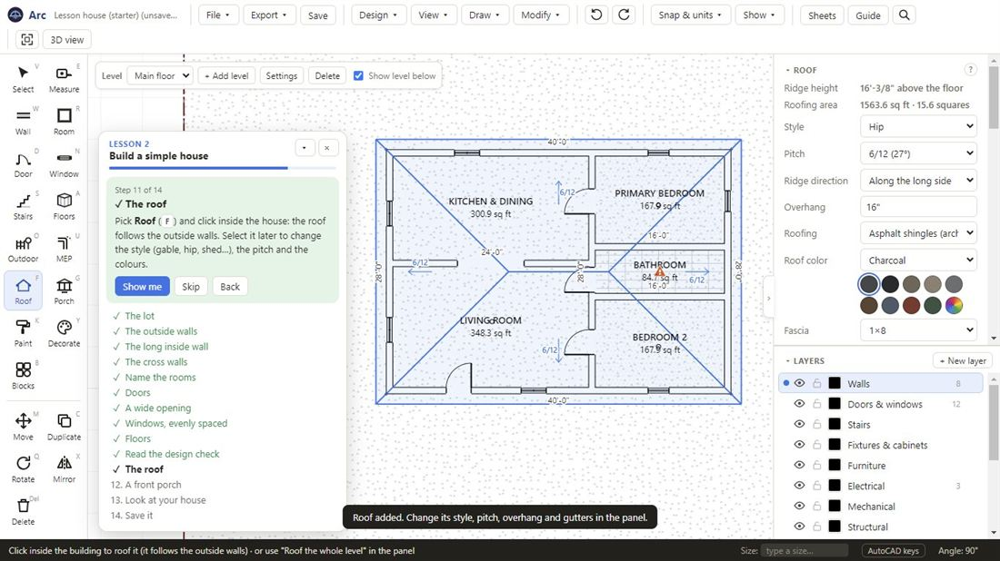
12A front porch
Pick Porch (G). Click two points along the front of the house, either side of the front door, then click how deep the porch goes (about 6').
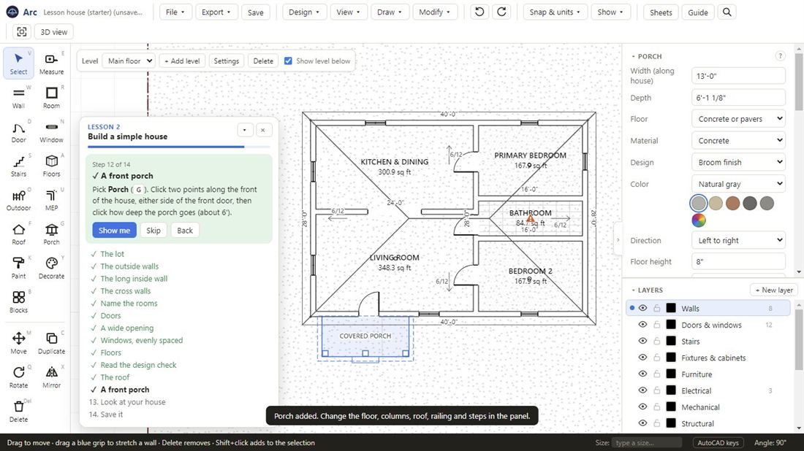
13Look at your house
Click 3D view and turn it round. Try Go inside… on the 3D toolbar to stand in a room.
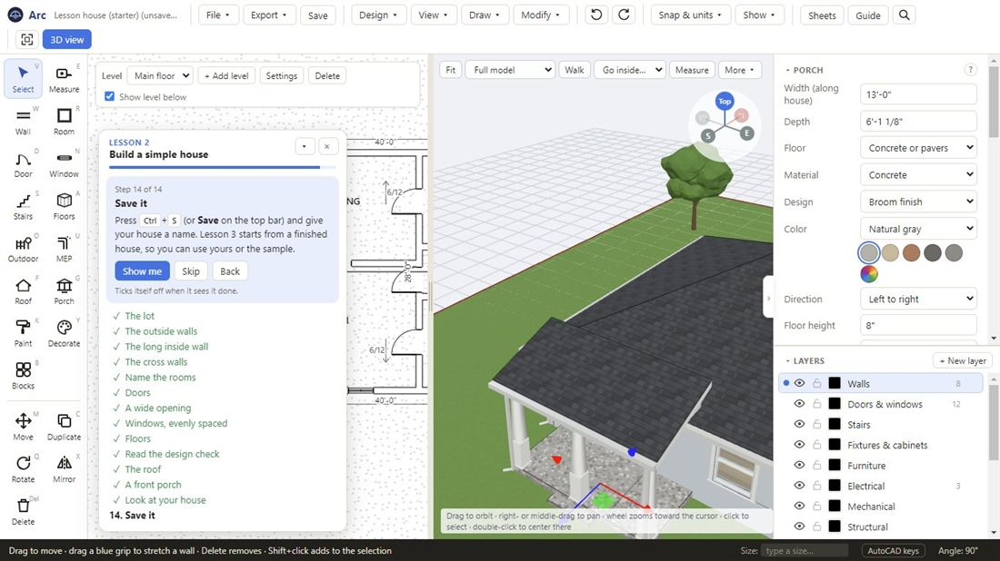
14Save it
Press Ctrl+S (or Save on the top bar) and give your house a name. Lesson 3 starts from a finished house, so you can use yours or the sample.
Lesson 3: Elevate it: materials, layouts and styles
Take the simple house further: a style pack, a colour palette with an accent wall, materials, a kitchen, furniture, a bath, the outside and the garden. About 25 minutes · 12 steps · starts from the Lesson house (finished)
1Start from a finished house
This is the house from Lesson 2. You'll restyle it inside and out, furnish it and plant the garden. Open the 3D view beside the plan to watch each change as you make it.
2A style pack
Open Design ▾ → Style packs…, pick a look (say Craftsman or Modern farmhouse) and click Apply style. Siding, roof, floors, cabinets and inside paint all change at once; Undo takes it back.
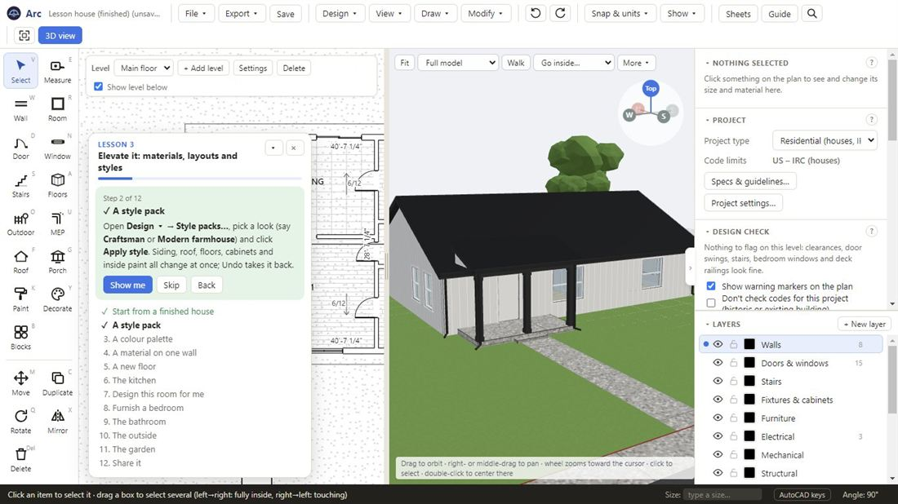
3A colour palette
Pick Decorate (Y), choose a palette in the panel, tick Accent wall if you like, and click the primary bedroom. Each colour has a job: walls, accent, trim, ceiling and fabrics.
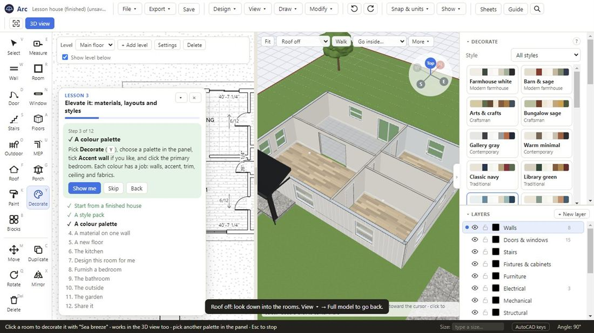
4A material on one wall
Pick Paint (K). Choose a category like Wallpaper or Stone, pick one, and click a wall in the living room: only the side you click changes.
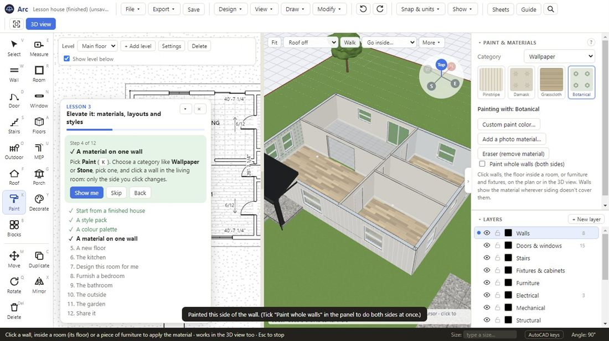
5A new floor
Pick Floors, choose a different floor (try Tile with a pattern, or a darker wood with wider planks) and click a room to change it.
6The kitchen
Select the kitchen, then Design ▾ → Kitchen layout…. Pick a layout: cabinets, counters, sink and appliances go in, in your style.
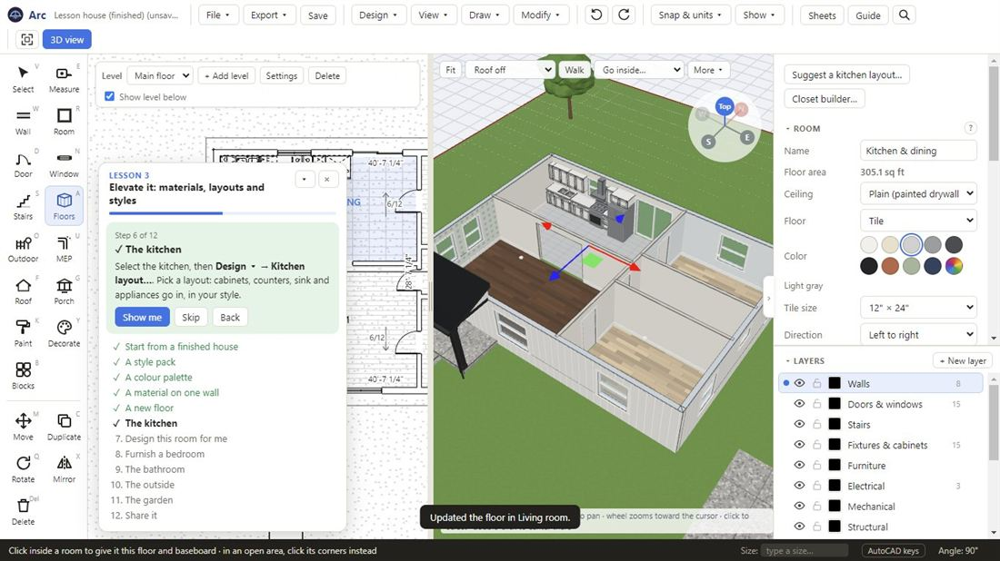
7Design this room for me
Select the living room, then Design ▾ → Design this room for me…. Three arrangements are scored for comfort; click Use this arrangement on the one you like.
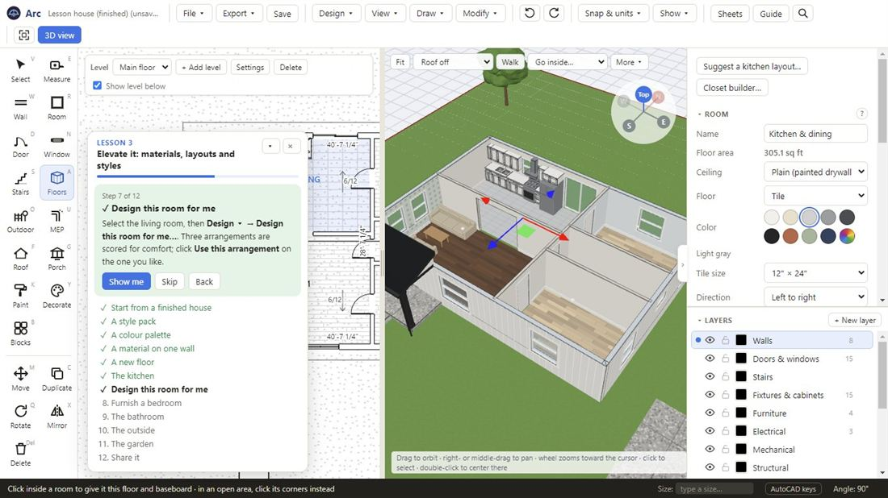
8Furnish a bedroom
Do the same for a bedroom: select it and choose Design this room for me… again (the room type follows its name).
9The bathroom
Pick Blocks (B), choose Bathroom, and place a tub, a vanity and a toilet. Bring each near a wall: it turns to sit against it.
10The outside
Select an outside wall and change its Exterior finish or colour in the panel (or keep the style pack's and change the roof colour instead: select the roof).
11The garden
Pick Blocks → Landscaping and add a few shrubs along the front and a tree. Then pick Outdoor (O), choose Patio, and click the corners of a patio outside the back door.
12Share it
Open Design ▾ → Mood board… for a one-page board of the palette, materials and furniture, and Budget ▾ → Shopping list & budget… to see what it all costs. In the 3D view, Render makes a photo-like picture. Your house is elevated!
Lesson 4: Do it with me: the Lakeside House
Build a high-end modern house on a lake from the empty lot: stone and wood, walls of glass with a glass corner, an upper floor that overhangs the terrace, flat roofs, a style in one click, a kitchen and furniture designed for you, a terrace, a pool and outdoor living. About 30 minutes · 19 steps · starts from the Lakeside House (empty lot)
1The lot
The lot slopes down to the lake on the south. The blue dashed outlines are where the ground floor and the garage go; the teal one is the upper floor, which reaches 8' past the ground floor to shade the terrace. Open the 3D view to see the lake.
2The ground floor
Pick Room (R). Type 44' x 30' and press Enter, then click the top-left corner of the big blue outline. Four walls and the room appear at once.
3The garage
Still with Room, type 24' x 24' and click the top-left corner of the small blue outline, on the east side. Its wall joins the house.
4Stone outside
Pick the Select arrow and drag a box round the ground floor to pick its walls. In the panel set Exterior finish to Stacked shale / ledgestone and the colour to Charcoal shale.
5Walls of glass
Pick Window (N) and set Type to Curtain wall (floor-to-ceiling glass), Width about 17'. Click the lake-side wall near its west end, then again near its east end. Leave a gap in the middle for a door.
6A glass corner
Select the glass at the west end. In the panel set Glass corner to the corner it touches: the post disappears and the glass turns the corner onto the west wall.
7A big sliding door
Pick Door (D), set Type to Sliding patio door and Width to 11', and click the gap between the glass. It opens the great room to the terrace.
8Front door and garage door
Still with Door: a Hinged door on the north side for the front door, then Type → Garage door on the north wall of the garage.
9The upper floor
Click + Add level on the level bar. Pick Room, type 36' x 38', and click the top-left corner of the teal outline. It hangs 8' out over the terrace, and the floor below it is made for you.
10Warm wood upstairs
Select the upstairs outside walls and set Exterior finish to Fiber-cement panels, colour Wood look (or Board & batten in natural cedar).
11Glass upstairs
Pick Window again (still Curtain wall) and put glass on the lake side upstairs: the bedrooms get the view. Try a glass corner here too.
12Flat roofs
Pick Roof (F), set Style to Flat and Overhang to 3'. Click inside the upper floor. Then switch the level bar to the Main floor and click inside the garage: the roof covers only the part that sticks out.
13Name the great room
Pick the Select arrow, click inside the ground floor and name it Living room in the panel. The furniture suggestions read the name.
14A style in one click
Open Design ▾ → Style packs…, pick Japandi and click Apply style. Floors, cabinets and the colours on every wall and ceiling change at once. (Untick Outside walls and Roofs to keep your stone, wood and flat roofs.)
15The kitchen
Select the living room, then Design ▾ → Kitchen layout…. Pick a layout with an island: cabinets, counters, sink, appliances and the island go in, in your style.
16Design this room for me
With the living room still selected, Design ▾ → Design this room for me…. Three arrangements are scored for comfort; click Use this arrangement on the one you like.
17A terrace and a pool
Pick Outdoor (O). Set Draw to Patio and the stone to Bluestone, and click the corners of a terrace along the lake side. Then set Draw to Water (stream, pond, pool) and draw a long pool on the terrace.
18Outdoor living
Pick Blocks (B), open Outdoor living, and add a few chaise lounges along the pool, a fire pit with an outdoor sofa, and a hot tub.
19See it from the lake
In the 3D view, orbit round to the lake side and turn on Sun (3D bar) for evening light. That's a high-end house in a few dozen clicks! Compare with the finished one: File ▾ → Samples… → Lakeside House → Finished.
3D printing
Lesson 5: 3D printing: an object, then a house
Draw a small part to exact sizes in millimetres and cut a hole in it, read the print checks, then print a house as floors and a roof that peg together, fixing the warnings as you go. About 12 minutes · 11 steps · starts from the “3D print: an object in millimetres” template
1A plan for printing
This plan is in millimetres at full size. The dashed teal outline is your printer's bed: anything inside it prints in one piece. Two shapes are already there: a base plate and a round post.
2Pick the 3D shape tool
Open Draw ▾ and pick 3D shape. Its panel sets the shape (rectangle, circle or outline) and how tall it is.
3Draw a block to size
Set Draw to Rectangle and Height to 8 mm. Click one corner on the plan, then type the size, width by depth, like 40 x 25, and press Enter (or click the opposite corner).
4Cut a hole
Set Draw to Circle and draw a small circle inside the base plate: a shape drawn inside another cuts a hole straight through it.
5Read the print hints
Pick the Select arrow and click a shape. The panel's 3D printing box gives its printed size and warns if it's too thin for the nozzle, too big for the bed, or would need supports.
6Check it for printing
Open Export ▾ → 3D print (STL files, plates, checks)…. Arc checks every part for your printer and lays them out on a plate. Green ticks mean it should print well.
7Now a house
Close the window. Next you'll print a house: open File ▾ → New from a template… and pick 3D print: a house model (two floors and a roof).
8Floors that peg together
Open Export ▾ → 3D print… again. With Pegs and sockets ticked, each floor gets small posts in its corners with a peg on top, and the floor above (and the roof's flat base) gets matching sockets.
9Make it too big, then fix it
Set Scale to 1:20. A red warning says the parts don't fit the bed, with a button for the scale that does: click it.
10Thin walls
Set Scale to 1:200 and untick Thicken walls too thin for the nozzle: the walls would print thinner than the nozzle can lay. Click Thicken thin walls for printing on the warning to fix it.
11Save the files
Set the scale back to 1:48 and click Save files…: one file per plate, one per part, and a print guide PDF with the slicer settings and how the parts go together. Open the plate files in Bambu Studio and print. That's it!
Lesson 6: 3D Print workspace: plates and the colour change
Open the 3D Print workspace, see how a model base is cut into plates with puzzle tabs, change the plate sizes, and find the layer where the filament changes colour. About 8 minutes · 7 steps · starts from the “3D print: a small landscape (plates, inserts and parts)” template
1A small landscape to practise on
This practice board is 400 × 300 mm, in millimetres at full size. It has a grey cobbled street, a raised cobbled square with a turntable hole, two trees and a lamp. Nothing here touches your own projects.
2Open the 3D Print workspace
Click 3D Print in the top bar. All the 3D printing tools are in its seven sections, beside the plan.
3Select the board
Open 2. Model ground and plates, then click the board's edge on the plan. The board is the model base: the ground on it is cut into plates that fit the printer's bed.
4Change the plate sizes
Type 150 in Column widths and press Enter. The plate line on the plan moves: L1F is 150 mm wide now and L2F takes the rest (250 mm), with puzzle tabs between them. (The last column always takes what's left.)
5Put it back
Press Ctrl+Z to undo. Changing plate sizes changes every plate in that row or column, so only do it if you'll print all of them again.
6The colour change
Read the colour-change line in section 2: below it the plates print in the base colour (grey), above it in the ground cover colour (white). It tells you the layer to type into Bambu Studio. The street is below it, so its cobbles print grey; the raised square is above it, so its cobbles would print white (the next lesson fixes that with an insert).
7A map of the plates
The plate map shows every plate by name. Save the plate map as a picture keeps one to print out and lay the plates by. Click ← Back to the plan when you're done. That's it!
Lesson 7: 3D Print workspace: surfaces and printed inserts
Soften the cobblestones on a street, turn a raised square into a printed insert that drops into a pocket, change how much snow lies on it, and split it to fit the bed. About 10 minutes · 8 steps · starts from the “3D print: a small landscape (plates, inserts and parts)” template
1Surfaces and inserts
Cobblestones, bricks and planks are pressed into the printed plates. But anything grey that sits above the colour change (like this raised square) prints white, so it becomes a printed insert: its own two-colour piece that drops into a pocket.
2Open the 3D Print workspace
Click 3D Print in the top bar.
3Change the street's cobbles
Open 3. Surfaces and click the street on the plan. Change Soft edges (how rounded each stone's edge is) or Groove depth, and press Enter. The 3D view shows the new stones.
4Select the square
Open 4. Inserts and click the raised Town square on the plan. The section says Insert in: Town square.
5Make it a printed insert
Leave Stones or tiles on Soft cobblestones and click Make it a printed insert. The square drops 3 mm to make the pocket, and the insert's stones are made, with a hole round the turntable.
6Change the snow
Drag the Snow on the stones slider, or type a number from 0 to 100 in its box (30, say) and press Enter. The insert is made again: What was made shows how many stones have snow.
7Split it to fit
Set Split into to Four quarters. Each piece prints on its own; a big insert has to be split so every piece fits the bed (Automatic does that by itself).
8Have a look
Open the 3D view to see the stones and their caps of snow. The plates don't change when you change the snow: only the insert's pieces need printing again. To print them, select them and use Save the selected parts… in section 6; each comes as a two-colour .3mf. That's it!
Lesson 8: 3D Print workspace: parts and part numbers
See how Arc breaks a model into printable parts, print two shapes as one part, give a layer its own part-number letters, read the parts list, and re-make only what changed. About 8 minutes · 8 steps · starts from the “3D print: a small landscape (plates, inserts and parts)” template
1How a model becomes parts
The ground is cut into plates. Every other 3D shape is a part, except that shapes that touch print as one part (each tree's trunk and crown), and shapes with the same Print together as text print as one part even when they don't touch.
2Open the 3D Print workspace
Click 3D Print in the top bar.
3Make the parts list
Open 5. Parts and numbers and click Make the parts list. Each part has a number from its layer's letters (T for Trees, L for Lamps), its size, colours and grams. The lamp is two parts: its post and its globe don't touch.
4Select the lamp's two shapes
Click the lamp post on the plan, then hold Shift and click its globe.
5Print them as one part
Type lamp in Print together as and press Enter. Now they print as one part, glued at the slicer or joined by a peg.
6Part number letters
Type LP in Part number letters and press Enter. Every part on the Lamps layer gets them. You never type the numbers: Arc gives them in order when it makes the list or saves the files.
7Make the list again
Click Make the parts list again: the lamp is one part now, LP-01. New parts go on the list by themselves. Numbers are given in order, so a new part can move the numbers after it: always print from the newest files and list together.
8Re-make only what changed
In 6. Check and export, Save just these plates… makes only the plates you tick, and Save the selected parts… only the parts you've selected. 7. What to watch out for lists anything risky about your changes: seams, puzzle tabs, pockets, the colour change and the bed size. That's it!
Find your way round, and the budget
Lesson 9: Find your way round the menus
What each menu on the top bar is for, in the order you'll use them, and how to find anything by typing a word. About 5 minutes · 10 steps · starts from the Lesson house (finished)
1The top bar
Each menu on the top bar has one job, split into short groups with headings, so you can see at a glance where things are. Open each one as the lesson asks.
2File
Click File ▾: your plans (new, open, save, templates), bringing in a drawing (a DXF, a PDF plan, a survey) and settings.
3Export
Click Export ▾: showing it to people (a render, a share page, a PDF for your contractor), drawings, and 3D files for other programs.
4Design
Click Design ▾: only design: style (style packs, mood board), rooms designed for you (furniture, kitchen, closet) and suggested layouts.
5Review
Click Review ▾: checking the design (warnings, your own specs, the code summary) and what the permit office and builder need.
6Budget
Click Budget ▾: everything about money and time: what it costs, each trade, quotes for the client and the schedule.
7View, Draw and Modify
View ▾ chooses what the 3D view shows (framing, MEP, roof off…). Draw ▾ and Modify ▾ hold the drafting tools, also in groups. Open Draw ▾.
8Show
Click Show ▾: what the plan shows. Clean floor plan keeps just the layout and furniture for reading.
9Can't find it? Type it
Press Ctrl+K (or the magnifier) and type a word, like quote or stairs: every command, setting and help topic is there.
10Help on every heading
Most headings in the side panel have a small ? that opens the guide at that topic, and Guide ▾ lists the videos and these lessons.
Lesson 10: The budget: costs, prices and what each wall costs
Open the cost estimate, type your own prices, add costs that aren't drawn, see one wall's budget, set a shopping budget, and plan the job. About 10 minutes · 8 steps · starts from the Lesson house (finished)
1Money and time
Everything about cost lives in Budget ▾. It's counted from the plan, so it changes as you draw.
2The cost estimate
Open Budget ▾ → Takeoff & cost estimate…: every material counted from the plan, with typical prices to start from.
3Your own price
Type your price over one line's price (the drywall sheets, say). The totals change straight away, and the price is kept for this plan.
4A cost that isn't drawn
Click + Add beside a section, or + Add an item not in the drawing…: a permit fee, a dumpster, hours of labour. Then close the estimate.
5What one wall costs
Click a wall: the panel's Budget for this wall lists its studs, plates, drywall, paint and the rest, with prices. (In 3D it glows.)
6A shopping budget
Open Budget ▾ → Shopping list & budget…: paint, flooring, furniture and decor to buy. Type a Budget to see how you're doing against it.
7Plan the job
Open Budget ▾ → Phase schedule…: the job in phases on a calendar, with inspections. Change a start date or how long a phase takes.
8Keep it
Save the takeoff as a spreadsheet… (Budget ▾) gives you a file for Excel. In Arc, Quote for the client… turns it into a quote with your logo and markup.
Change what you've drawn
Lesson 11: Make and edit your own block
Choose a sofa's legs and cushions, take a block apart on its own (nothing else can move), change it and save it as your own, then build a block from 3D shapes. About 10 minutes · 9 steps · starts from the Lesson house (finished)
1Blocks you can make your own
Every piece of furniture or fixture is a block. You can change its choices, take it apart and draw it your way, or build one from 3D shapes, and keep it in My blocks for every plan.
2Place a sofa
Pick Blocks (B), choose Living → Sofa, and click in the living room. Near a wall it turns to sit against it.
3Its choices
Pick the Select arrow and click the sofa. In the panel change Legs (try Skirted) and Seat cushions. The 3D view shows it straight away.
4Take it apart, on its own
With the sofa selected, click Edit the drawing in the panel. It opens on its own: everything else fades and can't be moved, so nothing changes by accident.
5Change a piece
Click one line of the sofa and press Delete, or drag one to move it. Draw a line with L to add one.
6Save it as your block
Click Save as block on the bar over the plan and give it a name. It goes into My blocks; Cancel would have put the old sofa back.
7Place it again
Pick Blocks (B) and set Category to My blocks. Click yours, then click on the plan to place another one.
8A block from 3D shapes
Open Draw ▾ → 3D shape and draw a tabletop and a leg (set each one's Height and Off the floor in the panel). Select both (Shift+click), and click Save as my block….
9Yours for every plan
Your blocks are kept on this computer (or this browser) for every plan. To change one later, place it, select it and use Edit the drawing again.
Lesson 12: Bring in a maker's product
Import a manufacturer's 3D model as a block (GLB, OBJ, FBX, DAE, STL or 3MF), fit it to size, then read in a product list with sizes, prices and links and place one. About 8 minutes · 8 steps · starts from the Lesson house (finished)
1Makers' models and lists
Manufacturers and sites like 3D Warehouse or BIMobject offer models to download: choose GLB, OBJ, FBX, DAE, STL or 3MF. From SketchUp, use File ▾ → Export → 3D model as COLLADA (.dae) or OBJ. This lesson uses an example chair, so you don't need one yet.
2Open the Blocks tool
Pick Blocks (B). The import buttons are at the bottom of the panel's Placing section.
3Import the example model
Click Try it with an example model (or Import a 3D model… and pick one you downloaded). It comes in as a block at its real size, standing up the right way.
4Fit it
It's selected: move it into a room (drag it), turn it with Rotate, and change its Width in the panel if the size isn't right (models made in centimetres sometimes need it).
5See it in 3D
Open the 3D view: it's the maker's own model, with their materials.
6A product list
With the Blocks tool (B), click Import a product list (CSV)… and then Use the example list. A supplier's spreadsheet works the same: one row per product with its size, maker, model, price and link.
7Place a product
Set the library's Category to My products, pick one and click on the plan. Its size is the maker's, and its price and link come with it.
8It's in the budget
Open Budget ▾ → Shopping list & budget…: the product is listed at its price, with a link to buy it.
Lesson 13: Edit in 3D: one part at a time, and feature walls
Work on just one part (the rest fades and can't move), lock the 3D view while you click, and draw on a wall in 3D with a kit of real materials: shiplap inside, shutters and trim outside. About 10 minutes · 9 steps · starts from the Lesson house (finished)
1Working in 3D
Two tools help with fiddly work: Work on this part shows just what you pick, and the wall face designer lets you draw on a wall standing in front of it. Open the 3D view beside the plan for both.
2Open the 3D view
Click 3D view on the top bar.
3Pick one part
With the Select arrow, drag a box round the bathroom (its walls, doors and fixtures), then click ◎ Work on this part at the top of the panel.
4Lock the view
On the 3D toolbar click 🔒 Lock view: the model stays still while you click on it. (If it's not on the bar, it's in More ▾.)
5Back to the whole plan
Click Done on the bar over the plan. Everything comes back; anything you changed stays changed (Cancel would have put it all back).
6Work on a wall in 3D
Click a living room wall. In the panel's Interior finish, click ✎ Work on this face in 3D on the side facing the room. The 3D view turns to face it, and a drawing board of the wall opens with a kit of real materials.
7A feature wall
On the Feature wall tab, click Shiplap and drag across the wall. Boards go on at their real size; try Chair rail or Floating shelf too. Click a piece to change its size, how far it sticks out, its material or colour.
8Dress up the outside
Click Done, then click an outside wall with windows and ✎ Work on this face in 3D on its outside. On the Exterior tab, click + Shutters (every window), then + Window trim.
9Unlock and look round
Click Done in the designer, then 🔒 View locked to orbit again. The trim is in the takeoff and in this wall's budget too.
Lesson 14: Stairs: sizes, single steps and curves
Change a stair's height and width, edit one step (a rounded bottom step), then draw a curved stair and fit it to the code. About 8 minutes · 7 steps · starts from the “Two-story shell” template
1Stairs you can shape
A stair works out its own steps from the floor-to-floor height. You can change the whole stair, one step, or draw a curved one.
2Select the stair
Pick the Select arrow and click the stair. The panel shows its steps and checks them against the code limits.
3Change its size
In the panel change the Width of a flight, or the Floor to floor height. The number of steps updates by itself.
4Pick one step
With the stair selected, click it again on the bottom step. The panel shows just that step.
5A rounded bottom step
Set that step's Shape to Rounded both ends: a bullnose step that sticks out past the stair.
6Draw a curved stair
Pick Stairs (S), set Shape to Curved (follows a curved wall). Click the centre of the curve, then where the middle of the bottom step goes.
7Make it pass
Select the curved stair. If the panel lists a problem, change Each step turns or the Inside radius until it says Meets the code limits. Next to a curved wall, Fit to the curved wall lines it up.
Lesson 15: Porches and decks, piece by piece
Move or remove one porch column, slide the steps, leave a railing off one side, then draw a deck and set each side's railing and posts. About 8 minutes · 8 steps · starts from the Lesson house (finished)
1One piece at a time
Porches and decks place their columns, posts, steps and railings for you. Select one and each piece gets an orange handle you can click, drag or delete.
2Select the porch
Pick the Select arrow and click the front porch. Orange handles show on its columns and steps.
3Pick a column
Click a column's orange handle. The panel shows Selected piece for it.
4Move or remove it
Drag the handle to move the column, or press Delete to take it out. The porch keeps your columns from now on (Back to automatic undoes that).
5Slide the steps
Drag the steps' handle along the front, or type Steps centred at in the panel.
6Railing on some sides
Set Railing to a style, then untick one side under Railing on.
7Draw a deck
Pick Outdoor (O), set Draw to Deck, its height to about 30" and a railing, and click the corners of a deck at the back.
8One side open
Select the deck and click the handle in the middle of a side. Untick Railing on this side (for steps down to the yard).
Lesson 16: Framing: studs, cut-outs and joists
See the studs in 3D, double up studs or build a post, frame a cut-out, change one wall's spacing, and put closer joists under a heavy room. About 8 minutes · 9 steps · starts from the “Two-story shell” template
1The frame inside the walls
Every wall is framed for you at the spacing you choose. Each wall can also have its own spacing, extra studs and framed cut-outs, and a room upstairs can have closer joists under it.
2See the studs
Open View ▾ → Framing (studs): the 3D view shows every stud, plate and header.
3Extra studs
Click an outside wall. In the panel's This wall's framing, click + Extra studs. Set where they go (from the wall's start grip).
4Make it a post
Change those extra studs to Post (4 studs), for a beam to sit on. In 3D they show a shade darker.
5A cut-out
Click + Cut-out and set its width and height: a chase for a duct, or a recessed cabinet. It gets a header (or blocking) round it.
6This wall at 24"
Set this wall's Spacing to 24" on center.
7Draw framing on the wall
In the wall's Interior finish, click ✎ Work on this face in 3D, then the Framing tab: the studs show behind. Pick Header and drag across where a new opening goes, or Blocking where a TV or grab bar will hang. Watch it appear in the 3D framing.
8Closer joists upstairs
Switch the level bar to the Second floor, click inside the room and set Joists under it to 12" on center (or Doubled for a tub).
9It's all counted
Open Budget ▾ → Takeoff & cost estimate or Framing…: your studs, post, cut-out header and joists are in the counts and the cut lists.
Lesson 17: MEP: wiring, runs and their points
Have Arc place outlets, lights and the wiring, read the circuits, reroute a pipe by its points, draw your own wire, and look at a clean floor plan. About 8 minutes · 8 steps · starts from the Lesson house (finished)
1Power, water and air
MEP means mechanical, electrical and plumbing. Arc can suggest a whole floor of it from your rooms, and you can change any run point by point.
2Suggest a layout with wiring
Open Design ▾ → Suggest MEP layout…, keep Wiring ticked and click Suggest layout. Outlets, switches, lights, wires, pipes and ducts go in.
3Read the wiring
Curved lines join the outlets on each circuit, dashed switch legs run to the lights, and arrows with a number are home runs to the panel. The numbers match Budget ▾ → Electrical: circuits & panel.
4Pick a point on a pipe
Click a pipe or duct run. Orange handles show at its corners: click one.
5Reroute it
Drag that handle somewhere else, or click + Add a bend in the panel.
6An outlet on a wall, in 3D
Click a wall, then ✎ Work on this face in 3D in Interior finish, and the Electrical tab. Pick Outlet and click on the wall: it goes on at 16" up (or where you click, if that's well above or below), in 3D and in the takeoff.
7Draw your own wire
Pick MEP (U), set the system to Wiring, and click from an outlet to another one, then Esc.
8A clean floor plan
Open Show ▾ and tick Clean floor plan: just the layout, furniture, room names and outside dimensions. Untick it to see the wiring again.
Newer tools: locking, painting, options and costs
Lesson 18: Lock part of the plan, move the rest
Use the quick bar over a selection, lock part of the house together so it can't move, box-select and move everything else around it, then unlock it in one click. About 5 minutes · 7 steps · starts from the Lesson house (finished)
1Keep part of it still
When you're rearranging, you often want one part to stay exactly where it is. Locking it does that: it can't be picked, dragged or caught in a box until you unlock it.
2Pick a part
With the Select arrow, drag a box round the bathroom (its walls, door and fixtures). A small quick bar appears above what you picked: Lock, Move, Edit, Delete.
3Lock it
Click Lock on the quick bar (or press Ctrl+L). A dashed outline and a padlock show it's locked as one group.
4Box round everything
Now drag a box round the whole house. Everything is picked except the locked part.
5Move the rest
Click Move on the quick bar, click a base point, then where it goes (a few feet over is fine). The locked bathroom stays where it was, and walls joined to it leave it alone.
6Unlock it
Press Ctrl+Z if you'd like the house back where it was. Then click any part of the bathroom: the quick bar offers Unlock, which frees the whole group at once.
7Good to know
Modify ▾ has Lock the selection together and Unlock everything (Ctrl+Shift+L). Locks are saved with the plan. If you'd rather not see the quick bar, turn it off in Preferences.
Lesson 19: Paint a room, a floor or the whole house at once
Paint every wall in a room with one click, then a whole floor, and put one wall's finish on all the walls from its panel. About 5 minutes · 8 steps · starts from the Lesson house (finished)
1Many walls at once
Painting one side of one wall is the Paint tool's usual click. You can also paint every wall in a room, every room on a floor, or the whole house, inside walls only (the outside keeps its siding).
2The Paint tool
Pick Paint (K) on the left.
3Every wall in a room
In the panel set One click paints to Every wall in that room, and pick a paint colour.
4Click a wall
Click a wall from inside the living room. All four walls of the room take the colour (open the 3D view to see).
5The whole floor
Set One click paints to Every room on this floor, pick another colour and click any inside wall.
6From a wall's panel
Pick the Select arrow and click a bedroom wall. In Interior finish, choose a colour for the side facing the bedroom, then click Apply to all walls….
7Choose how far
Click This room (its name) to give the bedroom's walls the same finish. Undo takes it back in one step.
8In 3D too
The same Apply to all walls… is in the 3D wall designer (Work on this face in 3D, under Wall colour), and it works for wallpaper and panelling as well as paint.
Lesson 20: Options & upgrades a homeowner can choose
Give a room a coffered ceiling, see what it adds over a flat ceiling with its own material list, leave it out and watch the plan change, mark the patio optional, and make the homeowner's options page. About 8 minutes · 9 steps · starts from the Lesson house (finished)
1Have it, or not
Some things are a choice: a coffered ceiling, hardwood, a fireplace, a deck. Arc prices each one against the standard way to build it, and leaving one out puts the standard version into the plan, so the plan and the estimate always agree.
2A coffered ceiling
With the Select arrow, click inside the living room (on its name). In the panel set Ceiling to Coffered. The 3D view shows the beams.
3Options & upgrades
Open Budget ▾ → Options & upgrades…. The coffered ceiling is listed with what it adds instead of a flat painted ceiling.
4What's in it
Click Materials beside it: the beams and moulding it adds, and the flat ceiling it replaces.
5Leave it out
Untick the coffered ceiling. The living room's ceiling goes flat in the plan and 3D, and the totals drop by what it costs.
6Put it back
Tick it again: the coffered ceiling comes back exactly as it was. Then close the window.
7Make something optional
Click the patio (or anything outside). In the panel's Layer section set Optional to Optional, in a new group… and call it Patio.
8The homeowner's page
Open Budget ▾ → Options & upgrades… again: the patio is listed too. Options page for the homeowner (PDF)… makes a page with each option's price, tick boxes and a signature line.
9Your margin (Arc)
In Arc, each option shows Your cost, the Client price (with your markup and labour rate) and your Margin; the homeowner's page shows only the client price. Budget ▾ → Quote for the client… has Your labour cost and a green box with your margin that never goes on the quote.
Lesson 21: Try another version: design options and exterior looks
Keep the plan as Option A, make Option B, give B a farmhouse exterior in one click, compare the two side by side, and switch back. About 6 minutes · 7 steps · starts from the Lesson house (finished)
1Two versions in one file
Not sure between two ideas? Keep both. Design options hold other versions of the design in the same file, each with its own estimate.
2Design options
Open Design ▾ → Design options (A, B, C)….
3Make Option B
Click Make Option B from this plan… and keep the name. The plan as it was is kept as Option A; Option B is now on the plan to change.
4A new look for B
Open Design ▾ → Exterior looks… and click Modern farmhouse: board & batten, black window trim and corner boards on every outside wall. Open the 3D view to see it.
5Compare them
Open Design ▾ → Design options… and click Compare beside Option A: A and B side by side (try Wipe).
6Back to A
Close it, open Design options… again and click Show it beside Option A. B is kept as it is, to come back to.
7Good to know
Each option is its own drawing; the project, sheets and prices are shared. The options are saved in the plan file. Undo starts again after switching.
Lesson 22: More budget tools: price tags, room costs, printing and backups
See where every price comes from and undo one, split the estimate room by room, print the floor plan in one click, and find Arc's backup copies. About 6 minutes · 5 steps · starts from the Lesson house (finished)
1The cost estimate
Open Budget ▾ → Takeoff & cost estimate…. Under each price a small tag says where it came from: typical, yours, price book, trade pack or no price.
2Type a price, then undo it
Type a price over one line: its tag says yours. Click ↶ Undo at the bottom and it goes back, in order with your other changes.
3Cost room by room
Close the estimate and open Budget ▾ → Cost room by room…: each room's walls, floor and furniture, its total and cost per square foot. The roof and foundation are a whole-house line.
4Print the floor plan
Close it and press Ctrl+P (or File ▾ → Print this floor plan…): the floor as it shows, on one page, to print or save as a PDF.
5Backup copies
Close it and open File ▾ → Backup copies…: earlier copies Arc keeps of your saved plans and unsaved work. Open one and it starts as a new plan, so nothing is overwritten.
9. Lesson: build the Guggenheim
This lesson builds a simplified Guggenheim: the big rotunda with its spiral ramp and glass dome, the small rotunda, the bridge between them, and the office tower with exit stairs and restrooms. Then it adds sprinklers, HVAC and steel, and checks the building against the code. Sizes are close to the real building, not exact.
1 Start a new commercial plan
New → panel: Project- Click File ▾ → New plan.
- With nothing selected, the panel shows Project. Set Project type to Commercial (IBC).
- Set Usual occupancy to A-3 · Exhibit gallery / museum. New rooms will start with this occupancy.
- Tick Fully sprinklered (NFPA 13). This allows longer travel distances.
2 Set up the floors
Level bar → Settings, + Add level- Click Settings on the level bar. Rename the first level Ground floor and make it 15'-0" floor to floor.
- Click + Add level. Choose Above the top level, name it Level 2, height 12'-0".
- Under Start with, pick Nothing for now (or a copy of the outside walls once you have some).
- Repeat for Levels 3 to 6. The real building's ramp climbs about six storeys.
3 Draw the round rotunda wall
Wall tool (W) → panel: Shape = Circle (round room)- Click the Wall tool on the left, or press W.
- In the panel set Shape to Circle (round room). Set Thickness to 12", Height to 14'-0" and Material to concrete.
- Click the centre of the rotunda.
- Type
50'and press Enter. A 100-foot round wall appears, made of short straight pieces.
4 Make it a room and set its use
Room tool (R) → click inside the walls · then Select → panel- Pick the Room tool and click inside the circle. The room fills the walls.
- Switch to Select (V) and click the room. In the panel, name it Rotunda galleries.
- Check Occupancy says Exhibit gallery / museum. This sets how many people the room is designed for (30 sq ft each).
- Set the Ceiling to Open to structure (exposed, painted), since the rotunda is open all the way up.
5 Add the entrance doors
Door tool (D) → click on a wall- Pick the Door tool. In the panel choose a Double / French door, 8'-0" wide for the main entrance.
- Click on the wall at the bottom of the circle (toward the bridge). The door drops into the nearest wall piece.
- Add two more 6'-0" doors at the top and left of the circle. These become exits.
- Select a door to see its Door schedule fields: mark, hardware and fire rating.
6 Set up the spiral ramp
Draw ▾ → Spiral ramp → panel- Open Draw ▾ and choose Spiral ramp.
- In the panel set:
- Width
20' - Turns
6 - Total rise
72' - Widens each turn by
2'9": the Guggenheim's ramp gets wider as it rises. - Outer band
9'8": the solid parapet band you see from the street. - Outer band leans out
8°. - Inner parapet
42": the guard rail facing the open centre. - Level landing at the top
24': a flat stretch so the ramp doesn't stop dead. - Tick Glass strip between the turns for the band of glass under each turn above.
- Width
7 Place the ramp
Click the centre → click the outer edge (or type the radius)- Click the centre of the rotunda.
- Type
50'and press Enter so the ramp's outer edge meets the wall. - Select the ramp. The panel shows its slope, length and floor area. The Guggenheim's ramp is about 3%, a gentle walk, well under the 1:12 (8.3%) ramp limit.
8 Add the glass dome
Draw ▾ → 3D shape (push/pull) → panel- Open Draw ▾ → 3D shape (push/pull). In the panel set Draw to Circle (centre, then size).
- Click the rotunda centre and type
43'for the radius. - Select the shape. Set Height
6"and Base above floor77', the top of the ramp. - Type
10'in Dome on top and tick Glass.
9 The bridge and the small rotunda
Wall tool (straight and circle) · Room tool · Door tool- Set the Wall tool back to Straight. Draw the bridge: a long room 56' × 12' running from the big rotunda to the tower. Make the side facing the street glass.
- Switch Shape to Circle and draw the small rotunda (the old Monitor Building), radius
26', touching the bridge. - Add rooms: Museum shop in the bridge (occupancy Mercantile (retail sales floor)) and Cafe in the small rotunda (Assembly: tables and chairs).
- Add doors between the spaces and out to the street, so every room has a way out.
10 The tower
Wall tool (straight) · type lengths- Click the tower's corner where it meets the bridge, then type each side's length and press Enter (for example
38', then84'). Click back on the first corner to close the loop. - Add exterior doors along the street side.
11 Fire-rated stair enclosures
Select a wall → panel: Fire rating, Rated as- Draw two small rooms' worth of walls in opposite corners of the tower for Stair A and Stair B. Exit stairs must be far apart: at least a third of the building's diagonal in a sprinklered building.
- Select each enclosure wall (Shift+click to select several). In the panel set Fire rating to 2 hour and Rated as to Exit stair or shaft enclosure.
- Put a 42" single door into each enclosure. The panel tells you what rating the doors need (90 minutes here).
12 The exit stairs
Stairs tool (S) → panel: Shape- Pick the Stairs tool. Set Shape to U-shape, turning right, 44" wide, with handrails on both sides.
- Click inside each enclosure. If a stair sticks out of its walls, select it and move it with the arrow keys or the Move tool.
- Use the Room tool to make rooms named Stair A, Stair B and the Tower gallery.
13 Restrooms and fixtures
Blocks tool (B) → category Commercial restroom- Pick the Blocks tool and choose the Commercial restroom category.
- Place toilet stalls (one accessible stall in each room), a urinal, wall-hung lavatories, a drinking fountain and a mop sink.
- Press Q or use the panel's angle to turn a fixture before you click.
14 Check the design
Click empty space → panel: Design check · View ▾ → Life safety plan- Press Esc and click an empty spot. The Design check in the panel lists problems on this level. Click one to zoom to it.
- Turn on View ▾ → Life safety plan on the plan view to see occupant loads, exit widths and travel distances.
- Fix what it finds. Typical problems: a room with no path to an exit, exits too close together, too few toilets, a door swinging into a fixture.
15 Lay out sprinklers
Design ▾ → Sprinklers…- Open Design ▾ → Sprinklers…
- Pick the hazard (galleries and offices are Light hazard) and which rooms to do, then click the button to lay them out.
- Heads are spaced to NFPA 13, with branch lines and a main. Check them on the reflected ceiling plan.
16 Lay out HVAC
Design ▾ → HVAC (supply air)…- Go to Level 2. Draw its walls and rooms (try Start with: a copy of the outside walls when you add a level).
- Open Design ▾ → HVAC (supply air)…. It sizes the airflow per room, places a rooftop unit and runs a trunk duct with branches and diffusers.
17 Column grid and steel framing
Draw ▾ → Column grid → panel: Steel framing- Open Draw ▾ → Column grid (structural bays). Type the bay sizes separated by commas (for example
15', 15'across and24', 24'down), then click to place the grid. - Select the grid. Set Columns to Steel wide-flange (W).
- Tick Frame the bays. Girders, beams, joists and deck are sized for you. View ▾ → Steel framing on the plan shows them.
18 Look at it in 3D
3D view · View ▾- Click 3D view. Orbit around the model.
- Try View ▾ → Roof off, X-ray and Framing + MEP.
- To save a camera position, use the views button at the top of the 3D view.
19 Draw pipes and ducts in 3D
View ▾ → Framing + MEP → Draw MEP (3D view toolbar)- Choose what to draw (pipe, duct or wire and its size) in Draw ▾ → Ducts, pipes & wires.
- In the 3D view click Draw MEP. Click points at the working height shown.
- Press V to run straight up or down for risers, drops and vent stacks. Click Done when finished.
20 Make the drawings
Sheets · Export ▾ → PDF- Click Sheets. The set is generated from the model: code summary, life safety plans, floor and ceiling plans, elevations, sections and schedules.
- Fill in the title block, then Export ▾ → PDF of the drawing sheets.
- Save your plan with Save (Ctrl+S).
10. Making a showcase tour video
A tour is a camera path through your model: a drone flight in, a walk through the door, special views along the way. The program plays it smoothly and saves it as an MP4 video, captions and all.
To watch the finished example in the program, open File ▾ → Samples… → Guggenheim Museum (mock-up). Click 3D view, then Tour on the 3D toolbar, then ▶ Play. It lasts about 90 seconds.
One floor at a time, and Back outside
The floor list on the 3D toolbar (it starts at All levels) names every floor: Main floor only, Second floor only, Basement only, or a floor and below. Showing one floor leaves off the floors above it and that floor's own roofs and ceilings, so you look straight down into its rooms like a doll's house, without walking up through the second floor. The plan's floor only and The plan's floor and below follow whichever floor the plan is on.
⤴ Back outside (next to Fit) takes the camera out of the rooms, stops walking, unlocks the view and shows the whole house from the front corner. It turns purple while the camera is inside, so it's easy to find if the view gets stuck in a tight space.
The camera controls
Tours are made from camera positions, so it helps to know how to move the camera first.
🔒 Lock view on the 3D toolbar holds the model still while you click and drag on it (picking pieces, designing a wall face); click View locked to orbit, pan and zoom again.
| To… | Do this |
|---|---|
| Orbit round the model | Drag with the left mouse button (one finger on the iPad) |
| Pan (slide sideways) | Drag with the right or middle button (two fingers) |
| Zoom | Scroll the wheel (pinch). It zooms toward the cursor, and stops 18" short of a wall, floor or the ground rather than passing into it. Zooming out always opens up quickly, however close you were; Fit shows everything again. |
| Look at something | Double-click it to centre the camera there |
| Square views | Look from…: Top, Front, Back, Left, Right, 3D (corner) and Below (from under the floor). Or click a letter on the compass in the corner. |
| Find a 3D tool | The toolbar is one row. When the 3D view is narrow, the tools that don't fit wait under More ▾ at the end of it. Make the 3D view wider (drag the bar between the plan and 3D) and they come back onto the row. |
| Frame everything / the selection | Fit / Selected |
| Perspective or flat | Perspective switches to a flat (parallel) view, like a drawing |
| Look around inside | Go inside… stands you in any room. Inside the walls the controls change by themselves: drag (one finger) to look around, wheel (pinch) to move about 2' at a time toward what's under the cursor, right-drag (two fingers) to slide, double-click (double-tap) a floor to go there. Step outside and the usual orbit comes back. |
| Walk through | Walk: W A S D or arrow keys to walk, drag to look. Stairs carry you up and down, F flies, Esc stops. |
| Change what you see | The view list (or View ▾): Full model, Framing, Framing + MEP, MEP, Empty, Roof off, X-ray, Wireframe |
| Real sunlight and shadows | Sun: pick the place, date and time |
| Keep a camera position | Saved views… → + Save this view…, then pick it from the same list any time |
1 Open the Tour panel
3D view → Tour- Click 3D view on the top bar.
- Click Tour on the 3D toolbar. The Tour panel opens over the 3D view. A new plan's tour is empty.
2 Frame the first shot and add it
Move the camera → + Add this view- Orbit, pan and zoom until the picture is how you want the video to open. A high view of the whole building works well.
- Click + Add this view. It becomes stop 1, and its settings open underneath (see step 5).
- Move the camera to the next shot and click + Add this view again. Repeat for each shot. The tour glides smoothly from one stop to the next.
3 Add your saved views
Tour → + Add the saved views- If you've saved views (Saved views…), + Add the saved views adds them all as stops, each captioned with its name.
4 Record a walk (optional)
Tour → ● Record a walk- Click ● Record a walk. Walk mode turns on.
- Walk with W A S D and drag to look. Every few steps a path point is added, so the tour follows your route exactly: through doors, up the stairs, along the ramp.
- Click ■ Stop recording when you're done.
5 Give each stop a caption, a view and the light
Click a stop → its settings- Click a stop's name. The camera goes there and its settings open:
- Pause: seconds to hold still there. Use 2–3 for a stop with a caption, 0 for a path point.
- Caption: words shown at the bottom of the picture while the camera is there. They fade in and out, and they're burned into the video.
- Switch to: a view to change to when the camera arrives, such as X-ray, Framing + MEP, MEP coordination or Roof off. Set the next stop back to Full model.
- Light: the sun's time of day. Give several stops a time and the sun moves smoothly between them, shadows and all. Studio light turns the sun off, and My custom lighting uses the Render window's custom lighting (its sun, brightness, background and field of view).
- Go on at: how fast the camera travels on to the next stop: Slow stroll, Walking pace, Quick fly-through or Drone flight. Fly outside, walk inside.

6 Tidy up
The stop list- ↑ moves a stop earlier. × removes it.
- Use this view re-aims a stop to where the camera is now. Move the camera first, then click it.
- Go there flies the camera to the stop, to check it.
- Clear removes every stop, to start again.
7 Choose the speed and the video size
Bottom of the Tour panel- The first list is the tour's usual speed (each stop's Go on at can override it).
- The second is the video size: HD 1280 × 720 (good for email and phones), Full HD 1920 × 1080 (sharpest, for TVs and presentations), or the size of the 3D view.
8 Preview it
Tour → ▶ Play- Click ▶ Play. The camera follows the path, switching views, moving the sun and showing captions. Click ■ Stop to stop early.
- Adjust any stop and play again until it flows.
9 Save the video
Tour → Save video…- Click Save video…. The program draws the tour frame by frame at 30 frames a second, so the video is smooth even if the live preview isn't. A progress bar shows how far it's got. A 90-second HD tour takes a few minutes.
- When it's done, choose where to save the .mp4 file. It plays on any computer, phone or TV and can be emailed, posted or put in a presentation.
Tips for a good tour
- Tell a story: start wide (the whole building), come closer (the street), go inside, show something special (X-ray, MEP, roof off), and end on a wide shot.
- Keep captions short, under about 50 characters, and pause 2–3 seconds so people can read them.
- Fly outside, walk inside. Use Drone flight for the big moves and walking pace indoors.
- Steer with path points through doorways and round corners. Put one in the middle of a room before rising or turning.
- Let the sun move: give the first stop a morning time and the last one late afternoon, and the light sweeps across the building.
- Switch views at a pause, so the change happens while the camera is still.
The Guggenheim tour, stop by stop
| # | Shot | Caption, view and light |
|---|---|---|
| 1 | High over the corner of Fifth Avenue | "The Guggenheim Museum, modelled in Arc" · Full model · sun 9:00 AM · drone flight on |
| 2 | Street view from Fifth Avenue (a saved view) | "Saved views: from Fifth Avenue" · drone flight on |
| 3 | On the sidewalk facing the door | "Walk-through: up to the entrance" |
| 4 | Just inside the door | path point (no pause) |
| 5 | On the rotunda floor, looking up | "Inside the rotunda: six turns of ramp under a glass dome" |
| 6 | Middle of the atrium, 40 ft up | path point: rising through the open centre |
| 7 | On the ramp, halfway up | "Halfway up the ramp, 36 feet above the floor" |
| 8 | Back to the centre | path point |
| 9 | Under the dome, looking down | "Looking down from the top of the ramp" |
| 10 | Up through the dome | path point · drone flight on |
| 11 | High from the south-east | "X-ray: see through every surface" · Switch to X-ray · 1:00 PM |
| 12 | Low from the east | "MEP: sprinklers under every turn, ducts in the tower" · Switch to MEP coordination |
| 13 | Over the tower | "Roof off: look down into the top floor" · Switch to Roof off |
| 14 | Wide from the south-east | "Sun study: late-afternoon light at 5 o'clock" · Full model · sun 5:00 PM |
11. Quick reference
All of this on one page to print and keep beside you: the quick reference card.
Keyboard shortcuts
| Key | Tool | Key | Tool |
|---|---|---|---|
| V | Select | B | Blocks library |
| W | Wall | U | Ducts, pipes & wires |
| R | Room | F | Roof |
| D | Door | G | Porch |
| N | Window | K | Paint |
| S | Stairs | M / C | Move / Duplicate |
| A | Floors & baseboards | Q / X | Rotate / Mirror |
| O | Outdoor (site) | Z | Zoom to fit |
| E | Measuring tape | Y | Decorate (palettes) |
| Ctrl+K | Search for any command | Ctrl+, | Preferences |
| Ctrl+Z / Y | Undo / Redo | Ctrl+S | Save |
| Ctrl+C / V | Copy / paste (also into another plan) | Ctrl+X | Cut |
Measuring tape
- Measure (left toolbar, key E): click points to measure. Each leg shows its length; the readout gives the running total, how far across and up, and the angle. Click the first point again for the area and perimeter. Nothing is added to the plan unless you press D to keep the last leg as a dimension. Esc clears it.
- In 3D: the Measure button on the 3D toolbar. Click two points on any surfaces for the straight distance, how far across and how far up.
Drawing ducts, pipes and wires in 3D
- View locked (on while you draw): clicks only place points and the model doesn't turn. Turn the view with the right mouse button (two fingers on a tablet), pan with the middle button. Click View locked to let the left button turn it again.
- ↑ Up a floor / ↓ Down a floor: takes the run straight up (or down) through the floor to the same working height on the next level, then you keep drawing there.
- Riser: click a spot on a wall or the floor and a vertical run goes from this floor up to the floor above, set just off the wall face. Good for vent stacks, chases and wiring up a wall.
Suggested layouts (a starting point)
- Design ▾ → Rooms for this floor: draw the outside walls of a floor, tick the rooms you want (bedrooms, baths, kitchen, living, laundry…) and get three layouts to compare. Each is scored for hallway space, room shapes and sizes, wet rooms sharing plumbing walls and bedrooms on outside walls; the best is marked most ergonomic. Pick one to add the interior walls, doors, rooms, any missing bedroom windows and a front door.
- Design ▾ → MEP: outlets, wiring, plumbing, ducts: places outlets, switches, lights and smoke/CO alarms, drains, the vent stack and hot and cold supply, and supply registers, returns and ducts, from your rooms, doors, windows and fixtures. Outlets and switches sit beside studs; drains and ducts run with the floor joists. Choose Most ergonomic (outlets every 8' at 18", switches at 42", registers under windows, a return in each bedroom, PEX home runs) or Code minimum. Name your rooms first so each gets what it needs. With Wiring ticked it draws the wiring too, the way electrical plans show it: a curved line from outlet to outlet round each room for every circuit, dashed switch legs from each switch to its lights, linked smoke and CO alarms, and a home run toward the panel tagged with the circuit number (or drawn all the way to the panel). The circuits and numbers match Electrical: circuits & panel. Running it with only Wiring ticked redraws the wiring and keeps your outlets and lights.
- Both add a note on the plan and in the design check: architect / engineer to review. They're ideas to start from, not stamped designs. Running one again replaces the earlier suggestion on that floor.
Copy parts between plans, arches and coffered ceilings
- Copy and paste between plans: select anything, press Ctrl+C (or Modify ▾ → Copy to clipboard), open another plan and press Ctrl+V (Modify ▾ → Paste). Pieces land in the same place, or 2' over when pasted back into the same plan, and keep their sizes, finishes and photo materials. Handy for a parts library or a renovation copy of a house.
- Arched openings: select a cased opening (Door tool → Cased opening (no door)) and set Arched top to how high the arch rises. Make the opening as wide as the space and lower its height for an arched bulkhead between rooms.
- Coffered ceiling: select a room and choose the ceiling type Coffered (beams with recessed panels).
Where to find things for a commercial project
| I want to… | Go to |
|---|---|
| Make the project commercial | Click empty space → panel Project type |
| Set a room's use (occupancy) | Select the room → panel Occupancy |
| Fire-rate a wall | Select the wall → panel Fire rating, Rated as |
| Draw a round room | Wall tool → Shape: Circle (round room) |
| Draw a spiral ramp | Draw ▾ → Spiral ramp |
| Make a sign, wreath or cut-out letter that stands up | Draw a 3D shape flat, then Stand it up in its panel |
| See how much filament to buy for a print | Export ▾ → 3D print…: Filament to buy, then Add to the budget |
| Make a dome, glass box or flared shape | Draw ▾ → 3D shape (push/pull), then Dome on top, Glass, Taper |
| Add a column grid or steel | Draw ▾ → Column grid (square or round), then Frame the bays |
| Use a photo as tiles, a grown pattern, a fitted mural or a stamp | Paint tool → Add a photo material… → Apply as |
| Mark an atrium as smoke-controlled | Click empty space → panel Atrium smoke control system |
| See occupant loads and exits | View ▾ → Life safety plan on the plan view |
| See ceilings, lights and sprinklers | View ▾ → Reflected ceiling plan |
| Lay out sprinklers or HVAC | Design ▾ → Sprinklers… / HVAC (supply air)… |
| Check code compliance | Panel Design check; Review ▾ → Building code summary… |
| Door and room schedules | Review ▾ → Door & room schedules… |
| Print the drawing set | Sheets, then Export ▾ → PDF |
Your own photos as materials: tile, expand, fit or stamp
In the Paint tool, Add a photo material… turns any picture (a tile, wallpaper, a floor sample, a mural, a rug, artwork) into a material. Say how wide an area the photo shows, then choose how it goes on:
| Apply as | What it does | Good for |
|---|---|---|
| Tile | Repeats the photo across the surface at its real size | Floor tiles, planks, wallpaper, fabric, stone |
| Expand | Grows a much bigger version of the pattern from your sample, so it doesn't visibly repeat, and fills with that | Hardwood, stone, concrete, carpet, grass, cork |
| Fit | Stretches one copy over each wall, floor or shape you click, edge to edge | A mural, a feature wall, a rug or floor design that fills the room |
| Stamp | Places one copy where you click, at its real size, on the floor or on a wall face | An inlay or medallion, a doormat, artwork, a tile panel |
- Change a photo's Apply as any time: pick it in the Paint tool (My colors & photos). Everything painted with it updates.
- Click a stamp to select it. You can drag it (on the floor), set its width and height (it keeps the photo's shape unless you untick that), turn it, swap the photo, or press Real size. On a wall, set its centre height, where it sits along the wall, and which face it's on.
- Walls read the right way round from the room side.
12. The Prairie & Mid-Century library
An homage to Frank Lloyd Wright and the mid-century modern houses that followed. It's a set of original furniture, materials and finishes drawn in that spirit, and the Robie House and Hollyhock House samples are built from it.
Furniture and lights
Pick the Blocks tool and choose the category Prairie & Mid-Century.
| Prairie and Usonian | Mid-century modern |
|---|---|
| High-back dining chair (tall spindle back) Dining table with corner lanterns Sideboard with art-glass doors Settle (high-back bench) Art-glass table lamp Planter urn (planted or empty) Barrel-back chair Hexagonal side table Built-in bench with bookshelf |
Lounge chair & ottoman Sofa on tapered legs Credenza with sliding doors Surfboard coffee table Pedestal (tulip) table Moulded shell chair Starburst pendant light Arc floor lamp |
Finishes include quartersawn and fumed oak, walnut, teak, Cherokee red, and mid-century orange, mustard, teal, olive and charcoal.
Materials and textures
- Paint tool → Prairie & Mid-Century: Roman brick (tawny, iron-spot red, cream), dressed limestone, quartersawn and fumed oak, Usonian cypress board-and-batten, Cherokee red and gray scored concrete, two leaded art-glass designs, patterned textile block, a cast-stone hollyhock frieze and Hollyhock stucco, teak, grooved mahogany and walnut paneling, cork, and Prairie and mid-century paint and fabric colours.
- Outside walls: select a wall → Exterior finish → Roman brick (Prairie), Usonian board & recessed batten or Textile block.
- Floors tool: Scored concrete (Usonian) on a 4' grid in Cherokee red, gray or ochre, Cork tile, and quartersawn oak, fumed oak and teak wood floors.
- Terraces and chimneys: Roman brick parapets and chimneys.
- Friezes and bands: draw a thin box with Draw ▾ → 3D shape along the top of a wall and paint it Hollyhock frieze. Painted shapes show their pattern at its real size on every face.
docs folder as Robie House timelapse.mp4.13. Good to know
ArcRes, the home edition
ArcRes is Arc for homes: the same program and the same .aarc plans, with everything for designing, decorating, budgeting and 3D printing a house, and the commercial and pro tools (commercial projects, quotes, change orders, selections, takeoff on a PDF, IFC and DWG export) tucked away. Its welcome screen has just three big choices, and its Budget menu keeps the cost estimate and the shopping list. A plan made in ArcRes opens in Arc, and the other way round. ArcRes is built from the same code, so every improvement to Arc reaches it too.
In ArcRes, the advanced drawing tools (lines and curves, hatches, section cuts, ducts, pipes and wires, and trim, offset, fillet and the rest of Modify ▾) show a small lock until you finish the first lesson, Getting started with the tools. Everything for designing your home is open from the start. Reach for a locked tool and you can start the lesson, or choose I know my way around: show all tools. Either way they stay unlocked from then on, and ArcRes doesn't ask again. To lock them again (for a new user on the same computer), use the switch in File ▾ → Preferences.
The code checks are a guide for early design. A licensed design professional and the building official have the final say.
- Atrium enclosure. The atrium check covers sprinklers and smoke control. It doesn't check how the atrium is separated from the rooms round it (IBC 404.6: 1-hour walls, or glass with closely spaced sprinklers). Set those walls' fire rating yourself.
- Ramp floors. Each floor's stretch of a spiral ramp runs halfway to the floors below and above. A door from the ramp counts where it opens onto the ramp's footprint and has no room on that side.
- The core and the ramp. A shaft that rises through the ramp's footprint (like the Guggenheim's core) shows passing through the ramp slab in 3D. The ramp isn't cut round it.